Lectures · Bài giảng › L6
Linear transformationsPhép biến đổi tuyến tính
A linear transformation is a function $T:V\to W$ between vector spaces that respects the two operations: $T(u+v)=T(u)+T(v)$ and $T(cu)=cT(u)$. Every matrix gives one, $T(v)=Av$, and (in finite dimensions) every linear transformation is a matrix once bases are chosen. This lecture is the dictionary between the two languages.
Four ideas carry the chapter. (1) Kernel and range: the vectors sent to $0$ and the vectors that are hit; they are the null space and the column space, and $\operatorname{rank}+\operatorname{nullity}=\dim(\text{domain})$. (2) One-to-one, onto, isomorphism: tested by the kernel and the rank. (3) The matrix of $T$: its columns are the images of the basis vectors (standard basis: the standard matrix; composition becomes the matrix product; the inverse transformation is the inverse matrix). (4) Change of basis: the same $T$ has different matrices $A'=P^{-1}AP$ in different bases, called similar matrices; the goal of Lecture 7 is to find the basis that makes $A'$ diagonal.
Two questions answer almost every exercise: what does $T$ do to the basis vectors? and what are its kernel and range?
Phép biến đổi tuyến tính là hàm $T:V\to W$ giữa các không gian vectơ bảo toàn hai phép toán: $T(u+v)=T(u)+T(v)$ và $T(cu)=cT(u)$. Mỗi ma trận cho một phép biến đổi như vậy, $T(v)=Av$, và (trong số chiều hữu hạn) mọi phép biến đổi tuyến tính chính là một ma trận khi đã chọn cơ sở. Bài này là từ điển giữa hai ngôn ngữ đó.
Bốn ý chính. (1) Hạt nhân và ảnh: các vectơ bị đưa về $0$ và các vectơ được "chạm tới"; chúng là không gian hạch và không gian cột, và $\operatorname{rank}+\operatorname{nullity}=\dim(\text{miền xác định})$. (2) Đơn ánh, toàn ánh, đẳng cấu: kiểm tra bằng hạt nhân và hạng. (3) Ma trận của $T$: các cột là ảnh của các vectơ cơ sở (cơ sở chuẩn: ma trận chuẩn; hợp hai phép biến đổi là tích ma trận; phép biến đổi ngược là ma trận nghịch đảo). (4) Đổi cơ sở: cùng một $T$ có các ma trận khác nhau $A'=P^{-1}AP$ trong các cơ sở khác nhau, gọi là các ma trận đồng dạng; mục tiêu của Bài 7 là tìm cơ sở làm $A'$ chéo.
Hai câu hỏi giải được hầu hết bài tập: $T$ làm gì với các vectơ cơ sở? và hạt nhân và ảnh của nó là gì?
Textbook · Giáo trình: Larson, Elementary Linear Algebra 8th ed., ch. 6 (6.1–6.4) · Strang, Introduction to Linear Algebra, ch. 8 (8.1–8.3)
Slide list · Danh sách slide (77)
Lecture 6: linear transformations · Bài 6: phép biến đổi tuyến tính
★ Context · Bổ trợ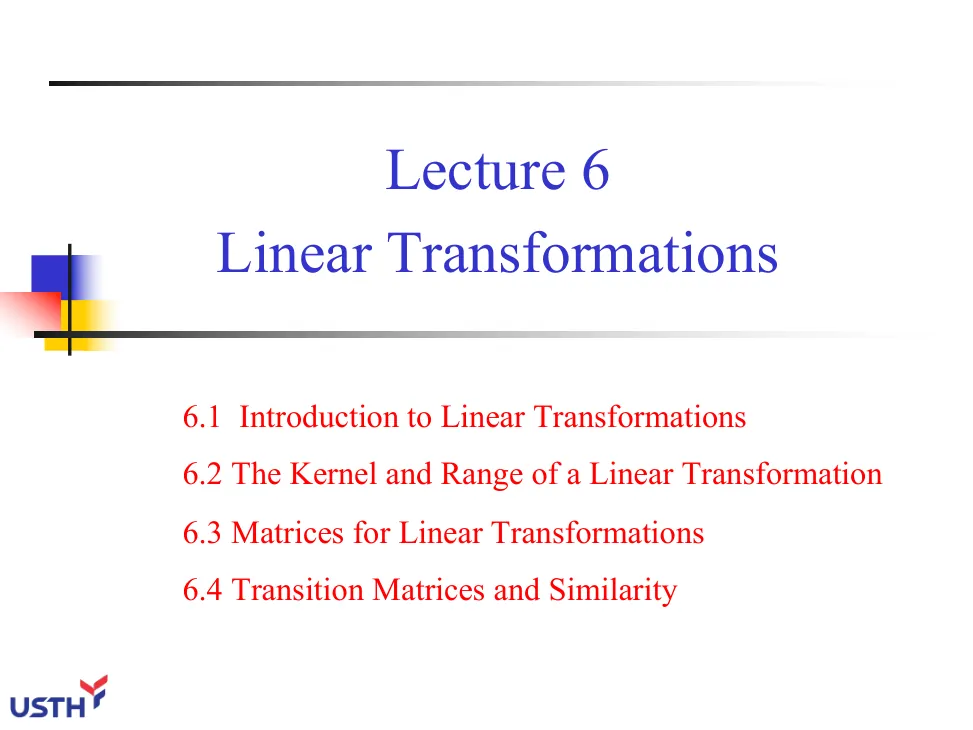
Title slide. Four sections: 6.1 Introduction to linear transformations; 6.2 The kernel and range of a linear transformation; 6.3 Matrices for linear transformations; 6.4 Transition matrices and similarity.
Slide tiêu đề. Bốn mục: 6.1 Giới thiệu phép biến đổi tuyến tính; 6.2 Hạt nhân và ảnh của phép biến đổi tuyến tính; 6.3 Ma trận của phép biến đổi tuyến tính; 6.4 Ma trận chuyển cơ sở và tính đồng dạng.
6.1 Functions between vector spaces · 6.1 Hàm giữa các không gian vectơ
★★★ Core · Cốt lõi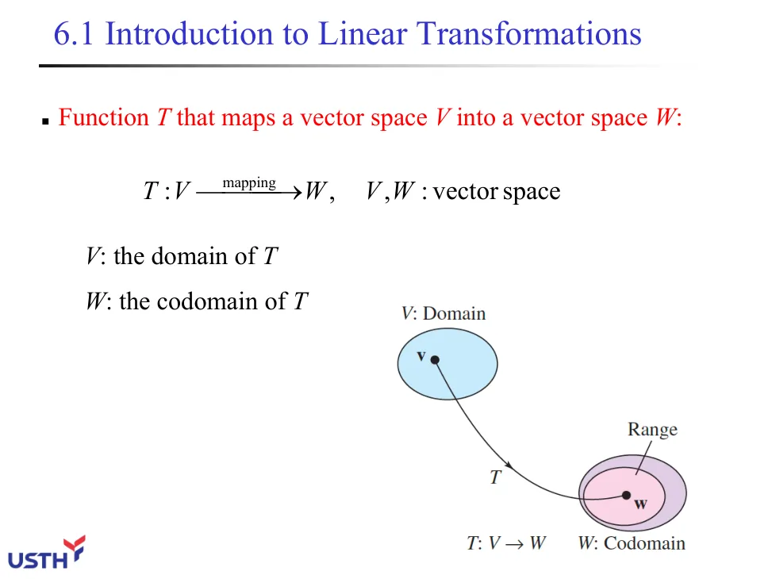
A function $T:V\to W$ assigns to every vector $v\in V$ exactly one vector $T(v)\in W$. $V$ is the domain of $T$ and $W$ is the codomain. Here both are vector spaces, so the functions worth studying are those that respect the vector-space operations (next slides).
Một hàm $T:V\to W$ gán cho mỗi vectơ $v\in V$ đúng một vectơ $T(v)\in W$. $V$ là miền xác định (domain) của $T$ và $W$ là miền đích (codomain). Ở đây cả hai đều là không gian vectơ nên các hàm đáng nghiên cứu là những hàm bảo toàn các phép toán của không gian vectơ (các slide sau).
For $T(x,y,z)=(x+y,\ z)$ name the domain and codomain and give the size of the matrix of $T$.
Với $T(x,y,z)=(x+y,\ z)$ hãy nêu miền xác định, miền đích và cỡ của ma trận của $T$.
Answer and solution · Đáp án và lời giải
Answer · Đáp án: $T:\mathbb R^3\to\mathbb R^2$; the matrix is $2\times3$
The input has three components and the output has two, so $T:\mathbb R^3\to\mathbb R^2$. The matrix has one row per output component and one column per input component: $\begin{bmatrix}1&1&0\\0&0&1\end{bmatrix}$, of size $2\times3$.
Đầu vào có ba thành phần, đầu ra có hai nên $T:\mathbb R^3\to\mathbb R^2$. Ma trận có một hàng cho mỗi thành phần đầu ra và một cột cho mỗi thành phần đầu vào: $\begin{bmatrix}1&1&0\\0&0&1\end{bmatrix}$, cỡ $2\times3$.
Image, range and preimage · Ảnh, miền ảnh và tạo ảnh
★★★ Core · Cốt lõi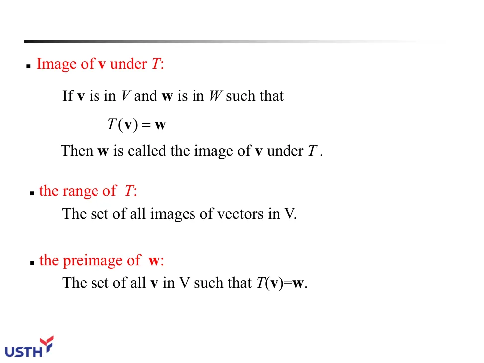
If $T(v)=w$, then $w$ is the image of $v$ under $T$. The range of $T$ is the set of all images of vectors of $V$ (a subset of the codomain $W$). The preimage of $w\in W$ is the set of all $v\in V$ with $T(v)=w$; it may be empty, a single vector, or infinitely many vectors.
Nếu $T(v)=w$ thì $w$ là ảnh của $v$ qua $T$. Miền ảnh (range) của $T$ là tập mọi ảnh của các vectơ trong $V$ (một tập con của miền đích $W$). Tạo ảnh (preimage) của $w\in W$ là tập mọi $v\in V$ với $T(v)=w$; nó có thể rỗng, một vectơ, hoặc vô số vectơ.
For $T(x,y)=(x+y,\ 2x+2y)$: are $(1,2)$ and $(1,3)$ in the range of $T$? Describe the range and the preimage of $(1,2)$.
Với $T(x,y)=(x+y,\ 2x+2y)$: $(1,2)$ và $(1,3)$ có thuộc miền ảnh của $T$ không? Mô tả miền ảnh và tạo ảnh của $(1,2)$.
Answer and solution · Đáp án và lời giải
Answer · Đáp án: $(1,2)$ yes, $(1,3)$ no; range $=\{(s,2s)\}$; preimage of $(1,2)=\{(t,1-t)\}$
$T(x,y)=(x+y)(1,2)$, so the range is the line $\{s(1,2)\}$: $(1,2)$ is in it and $(1,3)$ is not (the system $x+y=1$, $2x+2y=3$ is inconsistent). The preimage of $(1,2)$ is the solution set of $x+y=1$, i.e. $\{(t,1-t)\}$: infinitely many vectors.
$T(x,y)=(x+y)(1,2)$ nên miền ảnh là đường thẳng $\{s(1,2)\}$: $(1,2)$ thuộc nó còn $(1,3)$ thì không (hệ $x+y=1$, $2x+2y=3$ vô nghiệm). Tạo ảnh của $(1,2)$ là tập nghiệm của $x+y=1$, tức $\{(t,1-t)\}$: vô số vectơ.
Example 1: image and preimage for $T(v_1,v_2)=(v_1-v_2,\ v_1+2v_2)$ · Ví dụ 1: ảnh và tạo ảnh với $T(v_1,v_2)=(v_1-v_2,\ v_1+2v_2)$
★★★ Core · Cốt lõi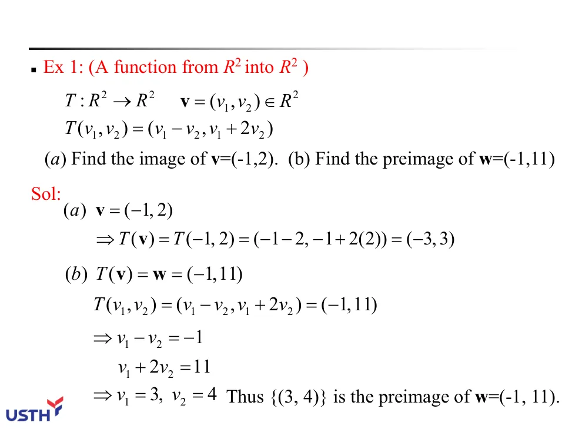
$T:\mathbb R^2\to\mathbb R^2$, $T(v_1,v_2)=(v_1-v_2,\ v_1+2v_2)$. (a) Image of $v=(-1,2)$: $T(-1,2)=(-1-2,\ -1+4)=(-3,3)$. (b) Preimage of $w=(-1,11)$: solve $v_1-v_2=-1$ and $v_1+2v_2=11$; subtracting gives $3v_2=12$, so $v_2=4$ and $v_1=3$. The preimage is the single vector $\{(3,4)\}$.
$T:\mathbb R^2\to\mathbb R^2$, $T(v_1,v_2)=(v_1-v_2,\ v_1+2v_2)$. (a) Ảnh của $v=(-1,2)$: $T(-1,2)=(-1-2,\ -1+4)=(-3,3)$. (b) Tạo ảnh của $w=(-1,11)$: giải $v_1-v_2=-1$ và $v_1+2v_2=11$; trừ hai phương trình được $3v_2=12$ nên $v_2=4$ và $v_1=3$. Tạo ảnh là một vectơ duy nhất $\{(3,4)\}$.
For the same $T$ find the image of $(2,1)$ and the preimage of $(3,6)$.
Với cùng $T$ hãy tìm ảnh của $(2,1)$ và tạo ảnh của $(3,6)$.
Answer and solution · Đáp án và lời giải
Answer · Đáp án: $T(2,1)=(1,4)$; preimage of $(3,6)$ is $\{(4,1)\}$
$T(2,1)=(2-1,\ 2+2)=(1,4)$. For $(3,6)$: $v_1-v_2=3$, $v_1+2v_2=6$ give $3v_2=3$, $v_2=1$, $v_1=4$. Check: $T(4,1)=(3,6)$ ✓.
$T(2,1)=(2-1,\ 2+2)=(1,4)$. Với $(3,6)$: $v_1-v_2=3$, $v_1+2v_2=6$ cho $3v_2=3$, $v_2=1$, $v_1=4$. Kiểm tra: $T(4,1)=(3,6)$ ✓.
Definition: linear transformation · Định nghĩa: phép biến đổi tuyến tính
★★★ Core · Cốt lõi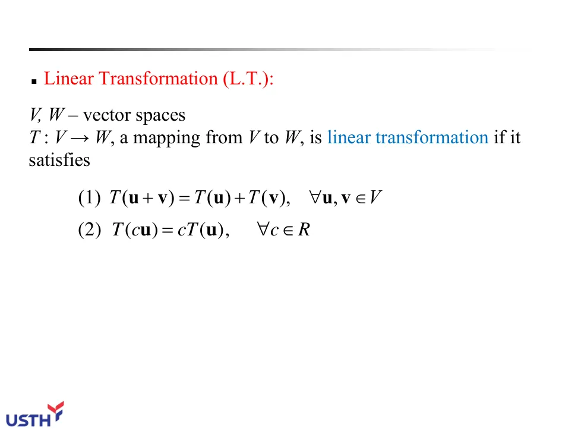
Let $V,W$ be vector spaces. A mapping $T:V\to W$ is a linear transformation (L.T.) if for all $u,v\in V$ and every scalar $c\in\mathbb R$: (1) $T(u+v)=T(u)+T(v)$ and (2) $T(cu)=cT(u)$. Both conditions must hold; to disprove linearity one failure (one numerical counterexample) is enough.
Cho $V,W$ là các không gian vectơ. Ánh xạ $T:V\to W$ là phép biến đổi tuyến tính (L.T.) nếu với mọi $u,v\in V$ và mọi vô hướng $c\in\mathbb R$: (1) $T(u+v)=T(u)+T(v)$ và (2) $T(cu)=cT(u)$. Cả hai điều kiện phải đúng; để bác bỏ tính tuyến tính chỉ cần một lần sai (một phản ví dụ số).
Everything in this chapter follows from these two axioms; every test of linearity is one of them (or a quick consequence such as $T(0)=0$).
Mọi thứ trong chương này suy ra từ hai tiên đề này; mọi phép thử tính tuyến tính đều là một trong hai (hoặc một hệ quả nhanh như $T(0)=0$).
Decide whether (a) $T(x,y)=(x+y,\ x-y)$ and (b) $T(x,y)=(xy,\ x)$ are linear transformations.
Xét xem (a) $T(x,y)=(x+y,\ x-y)$ và (b) $T(x,y)=(xy,\ x)$ có phải phép biến đổi tuyến tính không.
Answer and solution · Đáp án và lời giải
Answer · Đáp án: (a) linear; (b) not linear
(a) Additivity and homogeneity hold because each component is a linear expression in $x,y$ (expand $T(u+v)$ and $T(cu)$). (b) $T(2\cdot(1,1))=T(2,2)=(4,2)$ but $2T(1,1)=2(1,1)=(2,2)$: homogeneity fails.
(a) Tính cộng và tính thuần nhất đúng vì mỗi thành phần là biểu thức tuyến tính theo $x,y$ (khai triển $T(u+v)$ và $T(cu)$). (b) $T(2\cdot(1,1))=T(2,2)=(4,2)$ nhưng $2T(1,1)=2(1,1)=(2,2)$: tính thuần nhất sai.
Notes: operation preserving; linear operators · Lưu ý: bảo toàn phép toán; toán tử tuyến tính
★★ Important · Quan trọng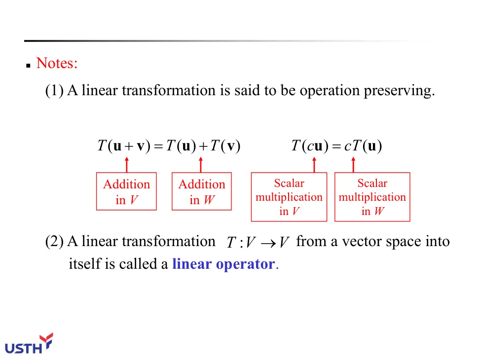
(1) A linear transformation is operation preserving: in $T(u+v)=T(u)+T(v)$ the left plus is the addition of $V$ and the right plus is the addition of $W$; in $T(cu)=cT(u)$ the scalar multiplication on the left is in $V$ and on the right is in $W$. (2) A linear transformation $T:V\to V$ from a space into itself is called a linear operator.
(1) Phép biến đổi tuyến tính bảo toàn phép toán: trong $T(u+v)=T(u)+T(v)$ dấu cộng bên trái là phép cộng của $V$ còn bên phải là phép cộng của $W$; trong $T(cu)=cT(u)$ phép nhân vô hướng bên trái ở $V$ và bên phải ở $W$. (2) Phép biến đổi tuyến tính $T:V\to V$ từ một không gian vào chính nó gọi là toán tử tuyến tính.
Show that $T(x,y)=(2x,\ -y)$ is a linear operator on $\mathbb R^2$.
Chứng tỏ $T(x,y)=(2x,\ -y)$ là toán tử tuyến tính trên $\mathbb R^2$.
Answer and solution · Đáp án và lời giải
Answer · Đáp án: $T(u+v)=T(u)+T(v)$ and $T(cu)=cT(u)$; matrix $\begin{bmatrix}2&0\\0&-1\end{bmatrix}$
For $u=(u_1,u_2)$, $v=(v_1,v_2)$: $T(u+v)=(2u_1+2v_1,\ -u_2-v_2)=T(u)+T(v)$ and $T(cu)=(2cu_1,\ -cu_2)=cT(u)$. The domain and codomain are both $\mathbb R^2$, so $T$ is an operator; it doubles the $x$-coordinate and reflects the $y$-coordinate.
Với $u=(u_1,u_2)$, $v=(v_1,v_2)$: $T(u+v)=(2u_1+2v_1,\ -u_2-v_2)=T(u)+T(v)$ và $T(cu)=(2cu_1,\ -cu_2)=cT(u)$. Miền xác định và miền đích đều là $\mathbb R^2$ nên $T$ là toán tử; nó nhân đôi tọa độ $x$ và lấy đối xứng tọa độ $y$.
Example 2: verifying additivity · Ví dụ 2: kiểm tra tính cộng
★★★ Core · Cốt lõi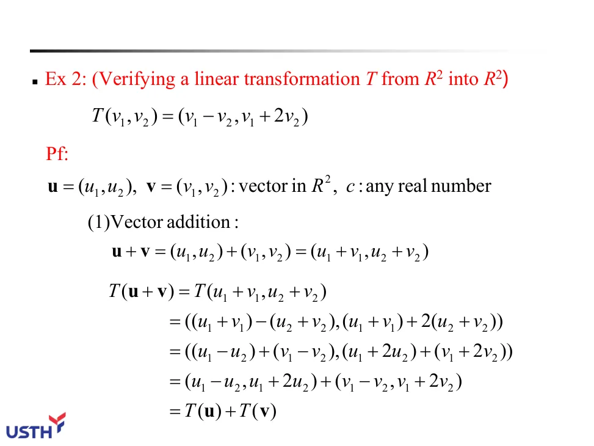
Verify that $T(v_1,v_2)=(v_1-v_2,\ v_1+2v_2)$ is linear. Let $u=(u_1,u_2)$, $v=(v_1,v_2)$, $c\in\mathbb R$. Vector addition: $u+v=(u_1+v_1,\ u_2+v_2)$ and $$\begin{aligned}T(u+v)&=\big((u_1+v_1)-(u_2+v_2),\\&\qquad(u_1+v_1)+2(u_2+v_2)\big)\\&=(u_1-u_2,\ u_1+2u_2)+(v_1-v_2,\ v_1+2v_2)\\&=T(u)+T(v).\end{aligned}$$
Kiểm tra $T(v_1,v_2)=(v_1-v_2,\ v_1+2v_2)$ tuyến tính. Cho $u=(u_1,u_2)$, $v=(v_1,v_2)$, $c\in\mathbb R$. Phép cộng vectơ: $u+v=(u_1+v_1,\ u_2+v_2)$ và $$\begin{aligned}T(u+v)&=\big((u_1+v_1)-(u_2+v_2),\\&\qquad(u_1+v_1)+2(u_2+v_2)\big)\\&=(u_1-u_2,\ u_1+2u_2)+(v_1-v_2,\ v_1+2v_2)\\&=T(u)+T(v).\end{aligned}$$
Verify additivity and homogeneity for $T(x,y,z)=(x-z,\ 2y+z)$.
Kiểm tra tính cộng và tính thuần nhất của $T(x,y,z)=(x-z,\ 2y+z)$.
Answer and solution · Đáp án và lời giải
Answer · Đáp án: both hold, so $T$ is linear
$T(u+v)=\big((u_1+v_1)-(u_3+v_3),\ 2(u_2+v_2)+(u_3+v_3)\big)=T(u)+T(v)$ by regrouping, and $T(cu)=(cu_1-cu_3,\ 2cu_2+cu_3)=cT(u)$.
$T(u+v)=\big((u_1+v_1)-(u_3+v_3),\ 2(u_2+v_2)+(u_3+v_3)\big)=T(u)+T(v)$ nhờ nhóm lại, và $T(cu)=(cu_1-cu_3,\ 2cu_2+cu_3)=cT(u)$.
Example 2: verifying scalar multiplication · Ví dụ 2: kiểm tra phép nhân vô hướng
★★★ Core · Cốt lõi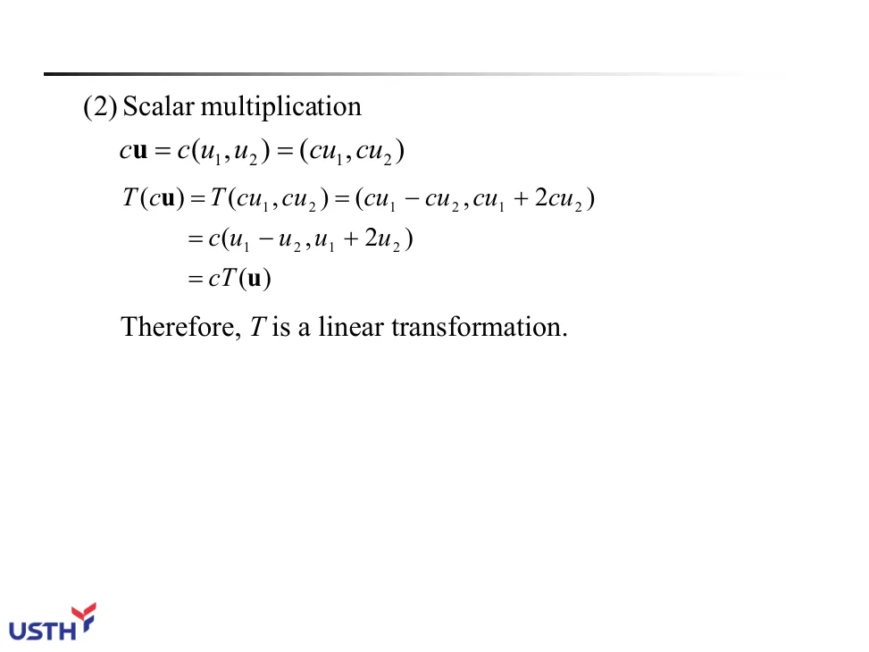
Scalar multiplication: $cu=(cu_1,cu_2)$, so $T(cu)=(cu_1-cu_2,\ cu_1+2cu_2)=c(u_1-u_2,\ u_1+2u_2)=cT(u)$. Both conditions hold, therefore $T$ is a linear transformation. (Shortcut: this $T$ is $T(v)=Av$ with $A=\begin{bmatrix}1&-1\\1&2\end{bmatrix}$, and every matrix map is linear by Theorem 6.2.)
Phép nhân vô hướng: $cu=(cu_1,cu_2)$ nên $T(cu)=(cu_1-cu_2,\ cu_1+2cu_2)=c(u_1-u_2,\ u_1+2u_2)=cT(u)$. Cả hai điều kiện đúng, vậy $T$ là phép biến đổi tuyến tính. (Cách tắt: $T$ này là $T(v)=Av$ với $A=\begin{bmatrix}1&-1\\1&2\end{bmatrix}$, và mọi ánh xạ ma trận đều tuyến tính theo Định lý 6.2.)
For $T(x,y)=(3x-y,\ x+4y)$ check $T(2u)=2T(u)$ for $u=(1,5)$ and find the matrix of $T$.
Với $T(x,y)=(3x-y,\ x+4y)$ hãy kiểm tra $T(2u)=2T(u)$ với $u=(1,5)$ và tìm ma trận của $T$.
Answer and solution · Đáp án và lời giải
Answer · Đáp án: $T(2,10)=(-4,42)=2T(1,5)$; matrix $\begin{bmatrix}3&-1\\1&4\end{bmatrix}$
$T(1,5)=(3-5,\ 1+20)=(-2,21)$, $T(2,10)=(6-10,\ 2+40)=(-4,42)=2(-2,21)$ ✓. The coefficients of $x,y$ in each output component are the rows: $\begin{bmatrix}3&-1\\1&4\end{bmatrix}$.
$T(1,5)=(3-5,\ 1+20)=(-2,21)$, $T(2,10)=(6-10,\ 2+40)=(-4,42)=2(-2,21)$ ✓. Hệ số của $x,y$ trong mỗi thành phần đầu ra là các hàng: $\begin{bmatrix}3&-1\\1&4\end{bmatrix}$.
Example 3: functions that are not linear transformations · Ví dụ 3: các hàm không phải phép biến đổi tuyến tính
★★★ Core · Cốt lõi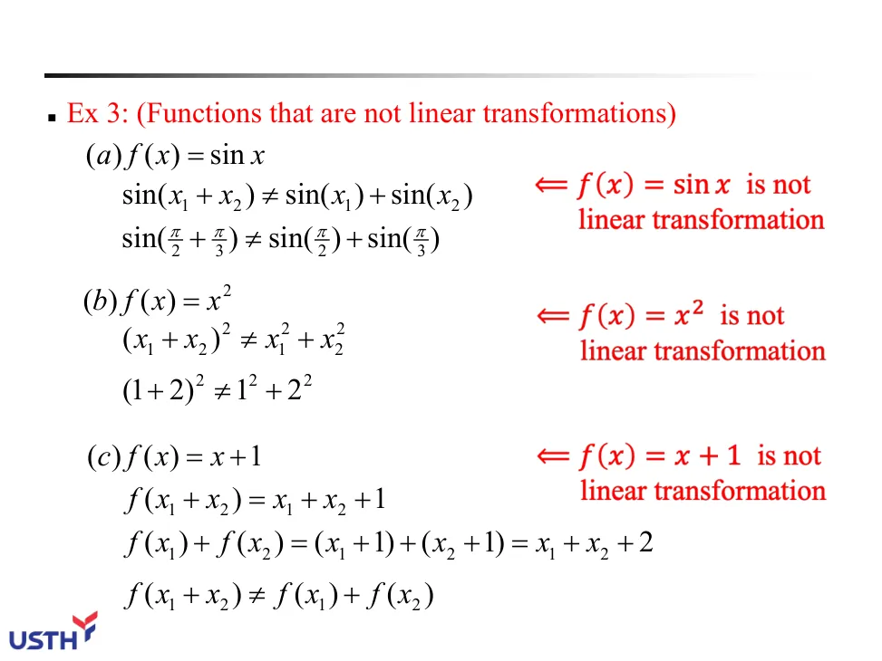
Three functions $\mathbb R\to\mathbb R$ that fail. (a) $f(x)=\sin x$: $\sin(x_1+x_2)\ne\sin x_1+\sin x_2$, e.g. $\sin\left(\frac\pi2+\frac\pi3\right)\ne\sin\frac\pi2+\sin\frac\pi3$. (b) $f(x)=x^2$: $(x_1+x_2)^2\ne x_1^2+x_2^2$, e.g. $(1+2)^2\ne1^2+2^2$. (c) $f(x)=x+1$: $f(x_1+x_2)=x_1+x_2+1$ but $f(x_1)+f(x_2)=x_1+x_2+2$. One numerical counterexample is a complete proof of non-linearity.
Ba hàm $\mathbb R\to\mathbb R$ không thỏa. (a) $f(x)=\sin x$: $\sin(x_1+x_2)\ne\sin x_1+\sin x_2$, ví dụ $\sin\left(\frac\pi2+\frac\pi3\right)\ne\sin\frac\pi2+\sin\frac\pi3$. (b) $f(x)=x^2$: $(x_1+x_2)^2\ne x_1^2+x_2^2$, ví dụ $(1+2)^2\ne1^2+2^2$. (c) $f(x)=x+1$: $f(x_1+x_2)=x_1+x_2+1$ nhưng $f(x_1)+f(x_2)=x_1+x_2+2$. Một phản ví dụ số là đủ để chứng minh không tuyến tính.
Show that $f(x)=2x+3$, $f(x)=|x|$ and $f(x)=e^x$ are not linear transformations $\mathbb R\to\mathbb R$.
Chứng tỏ $f(x)=2x+3$, $f(x)=|x|$ và $f(x)=e^x$ không phải phép biến đổi tuyến tính $\mathbb R\to\mathbb R$.
Answer and solution · Đáp án và lời giải
Answer · Đáp án: $f(0)=3\ne0$; $|{-1}+1|=0\ne2$; $e^{1+1}\ne e+e$
A linear $f$ must have $f(0)=0$: $2\cdot0+3=3$. For $|x|$: $f(-1+1)=0$ but $f(-1)+f(1)=2$. For $e^x$: $f(1+1)=e^2\approx7.39$ but $f(1)+f(1)=2e\approx5.44$.
$f$ tuyến tính phải có $f(0)=0$: $2\cdot0+3=3$. Với $|x|$: $f(-1+1)=0$ nhưng $f(-1)+f(1)=2$. Với $e^x$: $f(1+1)=e^2\approx7{,}39$ nhưng $f(1)+f(1)=2e\approx5{,}44$.
Notes: two uses of the word “linear” · Lưu ý: hai nghĩa của từ “tuyến tính”
★★ Important · Quan trọng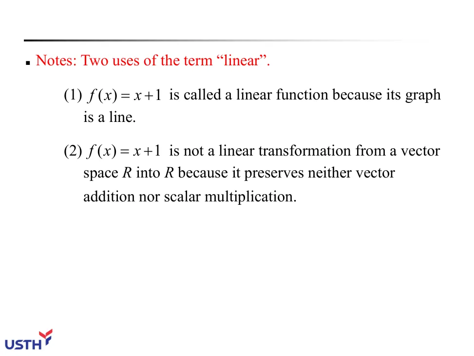
(1) $f(x)=x+1$ is called a linear function because its graph is a line. (2) $f(x)=x+1$ is not a linear transformation $\mathbb R\to\mathbb R$ because it preserves neither vector addition nor scalar multiplication. In linear algebra “linear” means homogeneous of the form $x\mapsto mx$ (no constant term).
(1) $f(x)=x+1$ gọi là hàm tuyến tính vì đồ thị của nó là đường thẳng. (2) $f(x)=x+1$ không là phép biến đổi tuyến tính $\mathbb R\to\mathbb R$ vì nó không bảo toàn phép cộng vectơ cũng như phép nhân vô hướng. Trong đại số tuyến tính “tuyến tính” nghĩa là thuần nhất dạng $x\mapsto mx$ (không có hằng số).
For which $m,b$ is $f(x)=mx+b$ a linear transformation $\mathbb R\to\mathbb R$?
Với những $m,b$ nào thì $f(x)=mx+b$ là phép biến đổi tuyến tính $\mathbb R\to\mathbb R$?
Answer and solution · Đáp án và lời giải
Answer · Đáp án: exactly when $b=0$
$f(x_1+x_2)-f(x_1)-f(x_2)=m(x_1+x_2)+b-(mx_1+b)-(mx_2+b)=-b$, which is $0$ for all $x_1,x_2$ iff $b=0$; and then $f(cx)=mcx=cf(x)$. Any $m$ is allowed.
$f(x_1+x_2)-f(x_1)-f(x_2)=m(x_1+x_2)+b-(mx_1+b)-(mx_2+b)=-b$, bằng $0$ với mọi $x_1,x_2$ khi và chỉ khi $b=0$; và khi đó $f(cx)=mcx=cf(x)$. $m$ tùy ý.
Zero and identity transformations; Theorem 6.1 · Phép biến đổi không, phép đồng nhất; Định lý 6.1
★★★ Core · Cốt lõi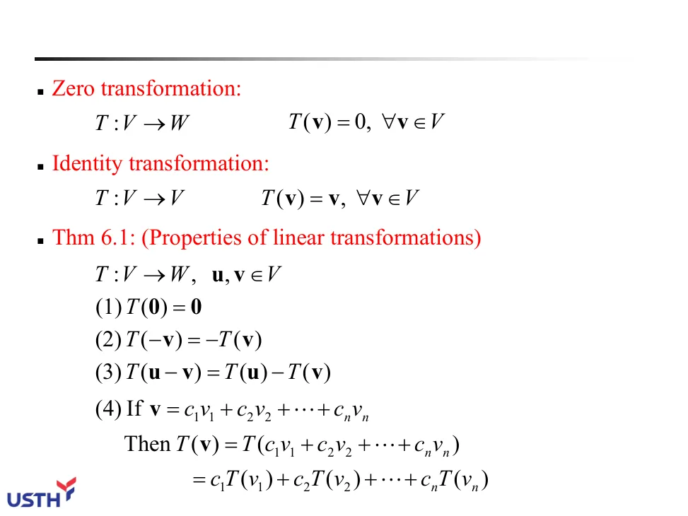
The zero transformation $T:V\to W$ has $T(v)=0$ for all $v$; the identity transformation $T:V\to V$ has $T(v)=v$. Theorem 6.1 (properties of a linear transformation $T:V\to W$): (1) $T(0)=0$; (2) $T(-v)=-T(v)$; (3) $T(u-v)=T(u)-T(v)$; (4) if $v=c_1v_1+\cdots+c_nv_n$ then $T(v)=c_1T(v_1)+\cdots+c_nT(v_n)$. Property (1) gives a fast test: if $T(0)\ne0$ the map is not linear.
Phép biến đổi không $T:V\to W$ có $T(v)=0$ với mọi $v$; phép đồng nhất $T:V\to V$ có $T(v)=v$. Định lý 6.1 (tính chất của phép biến đổi tuyến tính $T:V\to W$): (1) $T(0)=0$; (2) $T(-v)=-T(v)$; (3) $T(u-v)=T(u)-T(v)$; (4) nếu $v=c_1v_1+\cdots+c_nv_n$ thì $T(v)=c_1T(v_1)+\cdots+c_nT(v_n)$. Tính chất (1) cho phép thử nhanh: nếu $T(0)\ne0$ thì ánh xạ không tuyến tính.
A linear $T:\mathbb R^2\to\mathbb R^2$ has $T(1,0)=(2,3)$ and $T(0,1)=(-1,4)$. Find $T(3,-2)$ and $T(0,0)$. Why is $S(x,y)=(x+1,\ y)$ not linear?
Phép biến đổi tuyến tính $T:\mathbb R^2\to\mathbb R^2$ có $T(1,0)=(2,3)$ và $T(0,1)=(-1,4)$. Tìm $T(3,-2)$ và $T(0,0)$. Vì sao $S(x,y)=(x+1,\ y)$ không tuyến tính?
Answer and solution · Đáp án và lời giải
Answer · Đáp án: $T(3,-2)=(8,1)$; $T(0,0)=(0,0)$; $S(0,0)=(1,0)\ne(0,0)$
$T(3,-2)=3T(1,0)-2T(0,1)=(6,9)-(-2,8)=(8,1)$ by property (4), and $T(0,0)=0$ by (1). For $S$: $S(0,0)=(1,0)\ne(0,0)$, violating $T(0)=0$.
$T(3,-2)=3T(1,0)-2T(0,1)=(6,9)-(-2,8)=(8,1)$ theo tính chất (4), và $T(0,0)=0$ theo (1). Với $S$: $S(0,0)=(1,0)\ne(0,0)$, vi phạm $T(0)=0$.
Example 4: a linear transformation is determined by the images of a basis · Ví dụ 4: phép biến đổi tuyến tính được xác định bởi ảnh của một cơ sở
★★★ Core · Cốt lõi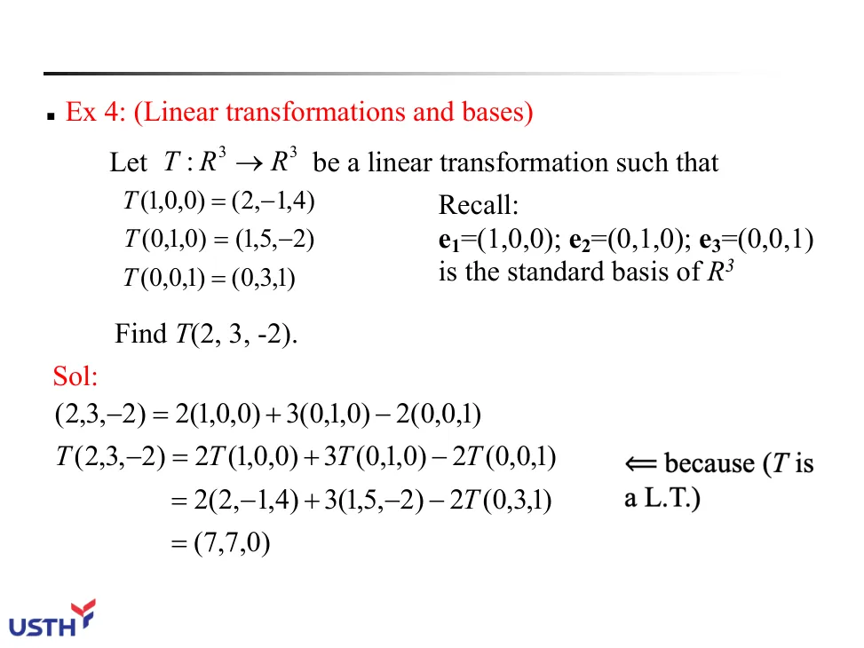
$T:\mathbb R^3\to\mathbb R^3$ is linear with $T(1,0,0)=(2,-1,4)$, $T(0,1,0)=(1,5,-2)$, $T(0,0,1)=(0,3,1)$. Find $T(2,3,-2)$. Write $(2,3,-2)=2e_1+3e_2-2e_3$ and use Theorem 6.1(4): $$\begin{aligned}T(2,3,-2)&=2(2,-1,4)+3(1,5,-2)-2(0,3,1)\\&=(4+3-0,\ -2+15-6,\ 8-6-2)=(7,7,0).\end{aligned}$$ Key idea: knowing $T$ on a basis determines $T$ everywhere.
$T:\mathbb R^3\to\mathbb R^3$ tuyến tính với $T(1,0,0)=(2,-1,4)$, $T(0,1,0)=(1,5,-2)$, $T(0,0,1)=(0,3,1)$. Tìm $T(2,3,-2)$. Viết $(2,3,-2)=2e_1+3e_2-2e_3$ và dùng Định lý 6.1(4): $$\begin{aligned}T(2,3,-2)&=2(2,-1,4)+3(1,5,-2)-2(0,3,1)\\&=(4+3-0,\ -2+15-6,\ 8-6-2)=(7,7,0).\end{aligned}$$ Ý chính: biết $T$ trên một cơ sở là xác định $T$ ở mọi nơi.
(a) $T:\mathbb R^3\to\mathbb R^3$ is linear with $T(e_1)=(1,0,2)$, $T(e_2)=(0,1,1)$, $T(e_3)=(1,1,0)$: find $T(2,-1,3)$. (b) A linear $T:\mathbb R^2\to\mathbb R^2$ has $T(1,1)=(3,1)$ and $T(1,-1)=(1,3)$: find $T(5,1)$.
(a) $T:\mathbb R^3\to\mathbb R^3$ tuyến tính với $T(e_1)=(1,0,2)$, $T(e_2)=(0,1,1)$, $T(e_3)=(1,1,0)$: tìm $T(2,-1,3)$. (b) $T:\mathbb R^2\to\mathbb R^2$ tuyến tính có $T(1,1)=(3,1)$ và $T(1,-1)=(1,3)$: tìm $T(5,1)$.
Answer and solution · Đáp án và lời giải
Answer · Đáp án: (a) $(5,2,3)$; (b) $(11,9)$
(a) $T(2,-1,3)=2(1,0,2)-(0,1,1)+3(1,1,0)=(5,2,3)$. (b) The basis here is $\{(1,1),(1,-1)\}$: $(5,1)=3(1,1)+2(1,-1)$, so $T(5,1)=3(3,1)+2(1,3)=(11,9)$.
(a) $T(2,-1,3)=2(1,0,2)-(0,1,1)+3(1,1,0)=(5,2,3)$. (b) Cơ sở ở đây là $\{(1,1),(1,-1)\}$: $(5,1)=3(1,1)+2(1,-1)$ nên $T(5,1)=3(3,1)+2(1,3)=(11,9)$.
Example 5: a linear transformation defined by a matrix · Ví dụ 5: phép biến đổi tuyến tính xác định bởi ma trận
★★★ Core · Cốt lõi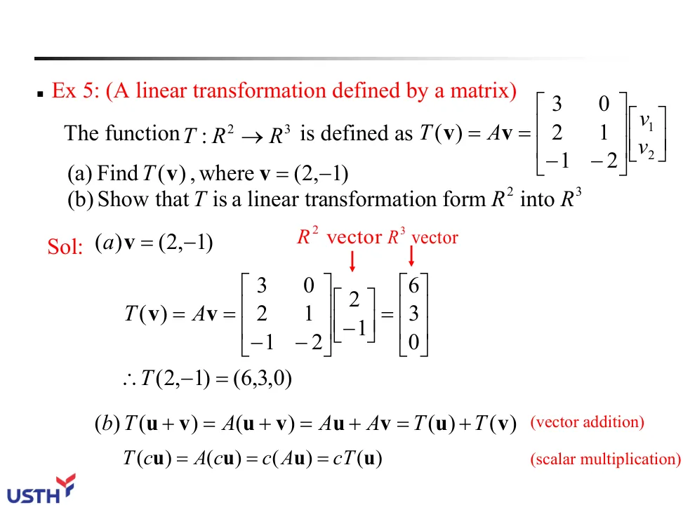
$T:\mathbb R^2\to\mathbb R^3$, $T(v)=Av$ with $A=\begin{bmatrix}3&0\\2&1\\-1&-2\end{bmatrix}$. (a) $T(2,-1)=A\begin{bmatrix}2\\-1\end{bmatrix}=\begin{bmatrix}6\\3\\0\end{bmatrix}$, so $T(2,-1)=(6,3,0)$: an $\mathbb R^2$ vector goes in and an $\mathbb R^3$ vector comes out. (b) $T$ is linear because $A(u+v)=Au+Av$ and $A(cu)=c(Au)$ are the distributive and scalar rules of matrix multiplication.
$T:\mathbb R^2\to\mathbb R^3$, $T(v)=Av$ với $A=\begin{bmatrix}3&0\\2&1\\-1&-2\end{bmatrix}$. (a) $T(2,-1)=A\begin{bmatrix}2\\-1\end{bmatrix}=\begin{bmatrix}6\\3\\0\end{bmatrix}$, tức $T(2,-1)=(6,3,0)$: vào là vectơ của $\mathbb R^2$, ra là vectơ của $\mathbb R^3$. (b) $T$ tuyến tính vì $A(u+v)=Au+Av$ và $A(cu)=c(Au)$ là các quy tắc phân phối và nhân vô hướng của phép nhân ma trận.
For $A=\begin{bmatrix}1&2\\0&1\\3&-1\end{bmatrix}$ and $T(v)=Av$ find $T(1,-2)$ and state the domain and codomain.
Với $A=\begin{bmatrix}1&2\\0&1\\3&-1\end{bmatrix}$ và $T(v)=Av$ tìm $T(1,-2)$ và nêu miền xác định, miền đích.
Answer and solution · Đáp án và lời giải
Answer · Đáp án: $T(1,-2)=(-3,-2,5)$; $T:\mathbb R^2\to\mathbb R^3$
$A\begin{bmatrix}1\\-2\end{bmatrix}=\begin{bmatrix}1-4\\0-2\\3+2\end{bmatrix}=\begin{bmatrix}-3\\-2\\5\end{bmatrix}$. $A$ is $3\times2$: it takes $\mathbb R^2$ vectors to $\mathbb R^3$ vectors.
$A\begin{bmatrix}1\\-2\end{bmatrix}=\begin{bmatrix}1-4\\0-2\\3+2\end{bmatrix}=\begin{bmatrix}-3\\-2\\5\end{bmatrix}$. $A$ cỡ $3\times2$: nhận vectơ của $\mathbb R^2$ và cho vectơ của $\mathbb R^3$.
Theorem 6.2: a matrix defines a linear transformation · Định lý 6.2: ma trận xác định một phép biến đổi tuyến tính
★★★ Core · Cốt lõi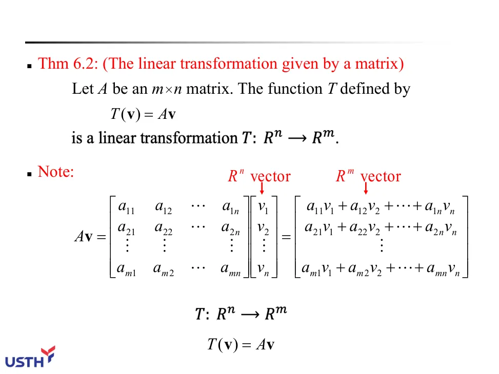
Theorem 6.2. Let $A$ be an $m\times n$ matrix. The function $T(v)=Av$ is a linear transformation $T:\mathbb R^n\to\mathbb R^m$. In components, $Av$ has $i$-th entry $a_{i1}v_1+a_{i2}v_2+\cdots+a_{in}v_n$: an $\mathbb R^n$ vector in, an $\mathbb R^m$ vector out (columns of $A$ = size of input, rows of $A$ = size of output).
Định lý 6.2. Cho $A$ là ma trận $m\times n$. Hàm $T(v)=Av$ là phép biến đổi tuyến tính $T:\mathbb R^n\to\mathbb R^m$. Theo thành phần, $Av$ có phần tử thứ $i$ là $a_{i1}v_1+a_{i2}v_2+\cdots+a_{in}v_n$: vào là vectơ $\mathbb R^n$, ra là vectơ $\mathbb R^m$ (số cột của $A$ = cỡ đầu vào, số hàng của $A$ = cỡ đầu ra).
For $A=\begin{bmatrix}1&2&3\\4&5&6\end{bmatrix}$ give the domain and codomain of $T(v)=Av$ and compute $T(e_1),T(e_2),T(e_3)$.
Với $A=\begin{bmatrix}1&2&3\\4&5&6\end{bmatrix}$ nêu miền xác định, miền đích của $T(v)=Av$ và tính $T(e_1),T(e_2),T(e_3)$.
Answer and solution · Đáp án và lời giải
Answer · Đáp án: $T:\mathbb R^3\to\mathbb R^2$; $T(e_1)=(1,4)$, $T(e_2)=(2,5)$, $T(e_3)=(3,6)$
$A$ is $2\times3$, so $T:\mathbb R^3\to\mathbb R^2$. $Ae_i$ picks out the $i$-th column of $A$: $(1,4)$, $(2,5)$, $(3,6)$. This observation is the heart of Theorem 6.10 below.
$A$ cỡ $2\times3$ nên $T:\mathbb R^3\to\mathbb R^2$. $Ae_i$ lấy ra cột thứ $i$ của $A$: $(1,4)$, $(2,5)$, $(3,6)$. Nhận xét này là cốt lõi của Định lý 6.10 bên dưới.
Example 7: rotation in the plane (setup) · Ví dụ 7: phép quay trong mặt phẳng (thiết lập)
★★★ Core · Cốt lõi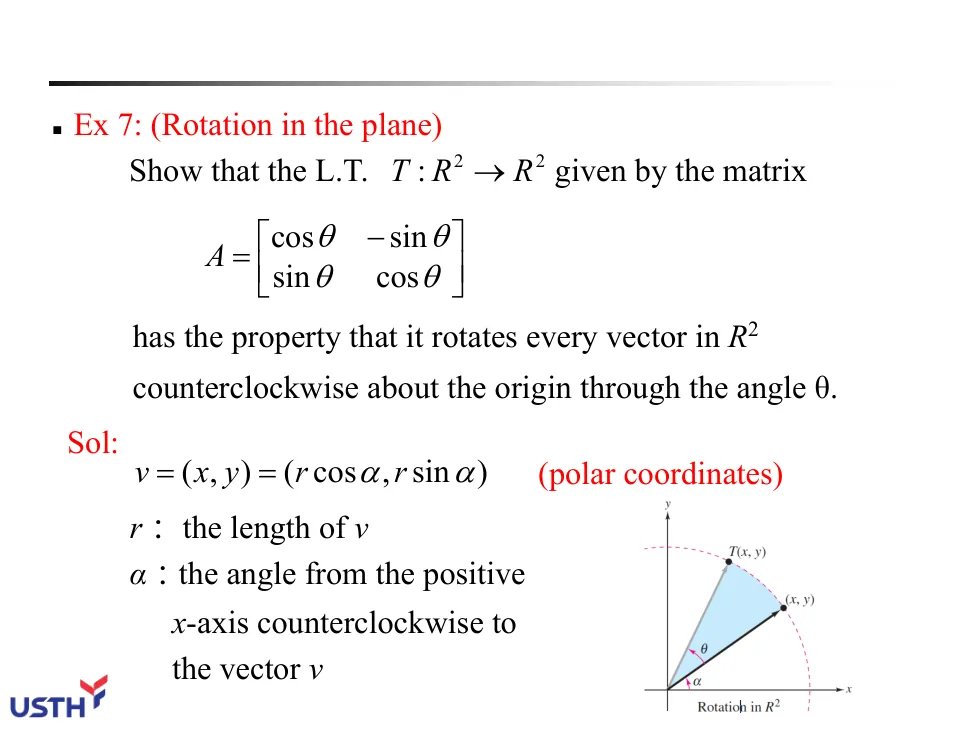
Show that the linear transformation $T:\mathbb R^2\to\mathbb R^2$ given by $A=\begin{bmatrix}\cos\theta&-\sin\theta\\\sin\theta&\cos\theta\end{bmatrix}$ rotates every vector counterclockwise about the origin through the angle $\theta$. Write $v=(x,y)=(r\cos\alpha,\ r\sin\alpha)$ in polar coordinates: $r$ is the length of $v$ and $\alpha$ is the angle from the positive $x$-axis counterclockwise to $v$.
Chứng minh phép biến đổi tuyến tính $T:\mathbb R^2\to\mathbb R^2$ cho bởi $A=\begin{bmatrix}\cos\theta&-\sin\theta\\\sin\theta&\cos\theta\end{bmatrix}$ quay mọi vectơ ngược chiều kim đồng hồ quanh gốc một góc $\theta$. Viết $v=(x,y)=(r\cos\alpha,\ r\sin\alpha)$ theo tọa độ cực: $r$ là độ dài của $v$ và $\alpha$ là góc từ tia $Ox$ dương ngược chiều kim đồng hồ tới $v$.
Write the rotation matrix for $\theta=90^\circ$ and use it to rotate $(1,0)$ and $(0,1)$.
Viết ma trận quay với $\theta=90^\circ$ và dùng nó để quay $(1,0)$ và $(0,1)$.
Answer and solution · Đáp án và lời giải
Answer · Đáp án: $\begin{bmatrix}0&-1\\1&0\end{bmatrix}$; $(1,0)\mapsto(0,1)$, $(0,1)\mapsto(-1,0)$
$\cos90^\circ=0$, $\sin90^\circ=1$, so $A=\begin{bmatrix}0&-1\\1&0\end{bmatrix}$. Its columns are the images: $e_1\mapsto(0,1)$ and $e_2\mapsto(-1,0)$, a quarter turn counterclockwise.
$\cos90^\circ=0$, $\sin90^\circ=1$ nên $A=\begin{bmatrix}0&-1\\1&0\end{bmatrix}$. Các cột là ảnh: $e_1\mapsto(0,1)$ và $e_2\mapsto(-1,0)$, một phần tư vòng ngược chiều kim đồng hồ.
Example 7: the rotation proof · Ví dụ 7: chứng minh phép quay
★★★ Core · Cốt lõi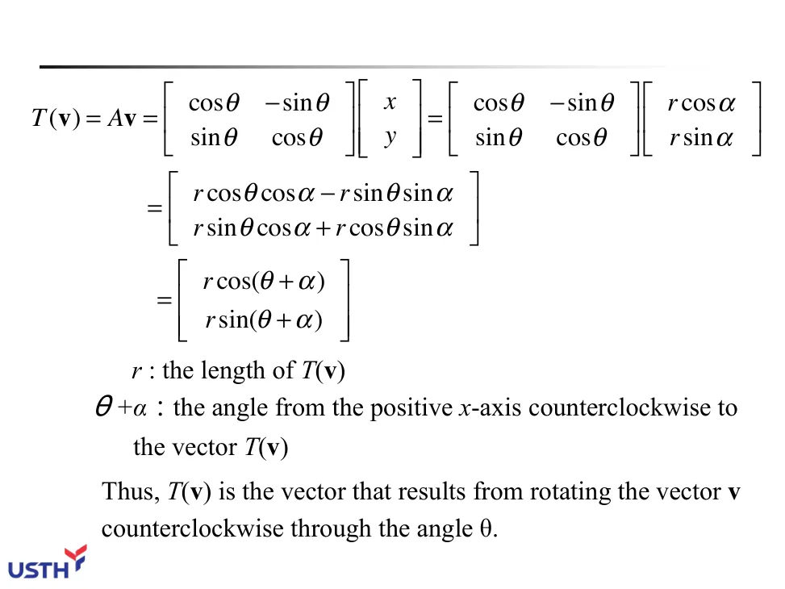
$T(v)=Av=\begin{bmatrix}\cos\theta&-\sin\theta\\\sin\theta&\cos\theta\end{bmatrix}\begin{bmatrix}r\cos\alpha\\r\sin\alpha\end{bmatrix}=\begin{bmatrix}r\cos\theta\cos\alpha-r\sin\theta\sin\alpha\\r\sin\theta\cos\alpha+r\cos\theta\sin\alpha\end{bmatrix}=\begin{bmatrix}r\cos(\theta+\alpha)\\r\sin(\theta+\alpha)\end{bmatrix}$ by the angle-addition formulas. So $T(v)$ has the same length $r$ and the angle $\theta+\alpha$: it is $v$ rotated counterclockwise through $\theta$.
$T(v)=Av=\begin{bmatrix}\cos\theta&-\sin\theta\\\sin\theta&\cos\theta\end{bmatrix}\begin{bmatrix}r\cos\alpha\\r\sin\alpha\end{bmatrix}=\begin{bmatrix}r\cos\theta\cos\alpha-r\sin\theta\sin\alpha\\r\sin\theta\cos\alpha+r\cos\theta\sin\alpha\end{bmatrix}=\begin{bmatrix}r\cos(\theta+\alpha)\\r\sin(\theta+\alpha)\end{bmatrix}$ theo công thức cộng góc. Vậy $T(v)$ có cùng độ dài $r$ và góc $\theta+\alpha$: đó là $v$ quay ngược chiều kim đồng hồ một góc $\theta$.
Rotate $v=(3,4)$ through $45^\circ$ and show the length stays $5$. Also show that rotating by $\theta$ and then by $-\theta$ gives the identity.
Quay $v=(3,4)$ một góc $45^\circ$ và chứng tỏ độ dài vẫn bằng $5$. Chứng tỏ quay $\theta$ rồi quay $-\theta$ cho phép đồng nhất.
Answer and solution · Đáp án và lời giải
Answer · Đáp án: $T(v)=\left(-\frac{\sqrt2}2,\ \frac{7\sqrt2}2\right)$, length $5$; $R(\theta)R(-\theta)=I$
$T(v)=\frac{\sqrt2}2\begin{bmatrix}3-4\\3+4\end{bmatrix}=\left(-\frac{\sqrt2}2,\frac{7\sqrt2}2\right)$ and its length is $\sqrt{\frac12+\frac{49}2}=5$. For the product, $R(\theta)R(-\theta)=\begin{bmatrix}\cos^2\theta+\sin^2\theta&0\\0&\sin^2\theta+\cos^2\theta\end{bmatrix}=I$.
$T(v)=\frac{\sqrt2}2\begin{bmatrix}3-4\\3+4\end{bmatrix}=\left(-\frac{\sqrt2}2,\frac{7\sqrt2}2\right)$ và độ dài của nó là $\sqrt{\frac12+\frac{49}2}=5$. Với tích, $R(\theta)R(-\theta)=\begin{bmatrix}\cos^2\theta+\sin^2\theta&0\\0&\sin^2\theta+\cos^2\theta\end{bmatrix}=I$.
Example 8: a projection in $\mathbb R^3$ · Ví dụ 8: phép chiếu trong $\mathbb R^3$
★★ Important · Quan trọng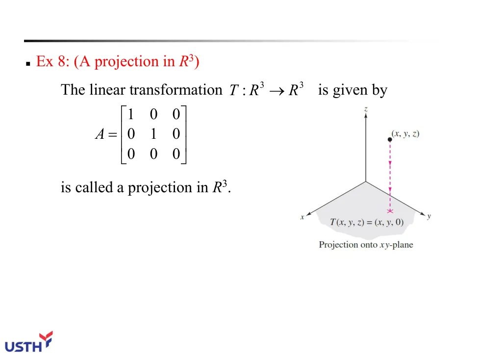
$T:\mathbb R^3\to\mathbb R^3$ with $A=\begin{bmatrix}1&0&0\\0&1&0\\0&0&0\end{bmatrix}$ gives $T(x,y,z)=(x,y,0)$: the projection onto the $xy$-plane (drop the $z$-coordinate). The figure shows the point $(x,y,z)$ and its foot $(x,y,0)$ directly below it.
$T:\mathbb R^3\to\mathbb R^3$ với $A=\begin{bmatrix}1&0&0\\0&1&0\\0&0&0\end{bmatrix}$ cho $T(x,y,z)=(x,y,0)$: phép chiếu lên mặt phẳng $xy$ (bỏ tọa độ $z$). Hình vẽ cho thấy điểm $(x,y,z)$ và chân $(x,y,0)$ ngay bên dưới.
Project $(3,-2,5)$ onto the $xy$-plane and onto the $xz$-plane. Show that projecting twice equals projecting once ($A^2=A$).
Chiếu $(3,-2,5)$ lên mặt phẳng $xy$ và lên mặt phẳng $xz$. Chứng tỏ chiếu hai lần bằng chiếu một lần ($A^2=A$).
Answer and solution · Đáp án và lời giải
Answer · Đáp án: $(3,-2,0)$ and $(3,0,5)$; $A^2=A$
The $xy$-plane projection is $\operatorname{diag}(1,1,0)$ and the $xz$-plane projection is $\operatorname{diag}(1,0,1)$. A diagonal matrix of $0$s and $1$s satisfies $A^2=A$: once the $z$-coordinate is dropped, dropping it again changes nothing.
Phép chiếu lên mặt phẳng $xy$ là $\operatorname{diag}(1,1,0)$ và lên mặt phẳng $xz$ là $\operatorname{diag}(1,0,1)$. Ma trận chéo gồm các số $0$ và $1$ thỏa $A^2=A$: đã bỏ tọa độ $z$ thì bỏ lần nữa không đổi gì.
Example 9: the transpose is a linear transformation · Ví dụ 9: phép chuyển vị là phép biến đổi tuyến tính
★★★ Core · Cốt lõi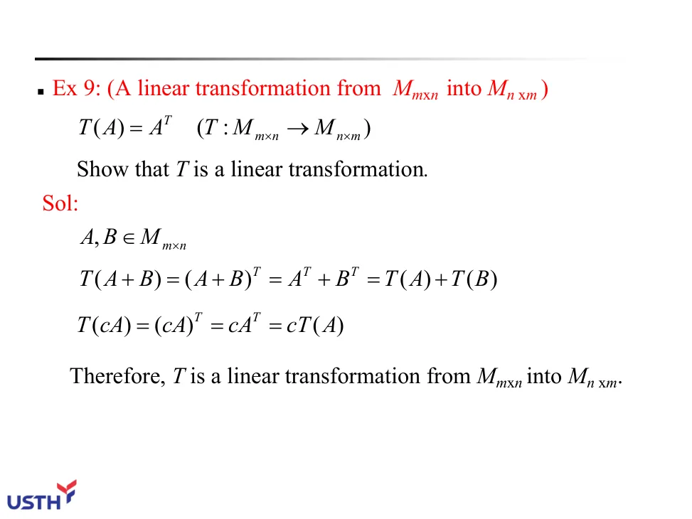
$T:M_{m\times n}\to M_{n\times m}$, $T(A)=A^T$. For $A,B\in M_{m\times n}$: $T(A+B)=(A+B)^T=A^T+B^T=T(A)+T(B)$ and $T(cA)=(cA)^T=cA^T=cT(A)$. So $T$ is a linear transformation. Notice that the vectors here are matrices: linear transformations act on any vector space, not only on $\mathbb R^n$.
$T:M_{m\times n}\to M_{n\times m}$, $T(A)=A^T$. Với $A,B\in M_{m\times n}$: $T(A+B)=(A+B)^T=A^T+B^T=T(A)+T(B)$ và $T(cA)=(cA)^T=cA^T=cT(A)$. Vậy $T$ là phép biến đổi tuyến tính. Lưu ý các “vectơ” ở đây là ma trận: phép biến đổi tuyến tính tác động lên mọi không gian vectơ, không chỉ $\mathbb R^n$.
Is $\det:M_{2\times2}\to\mathbb R$ a linear transformation? Is $\operatorname{tr}:M_{2\times2}\to\mathbb R$?
$\det:M_{2\times2}\to\mathbb R$ có là phép biến đổi tuyến tính không? $\operatorname{tr}:M_{2\times2}\to\mathbb R$ thì sao?
Answer and solution · Đáp án và lời giải
Answer · Đáp án: $\det$ is not linear; $\operatorname{tr}$ is linear
$\det(I+I)=\det(2I)=4$ but $\det I+\det I=2$ (also $\det(2I)=4\ne2\det I$), so additivity and homogeneity fail. For the trace, $\operatorname{tr}(A+B)=\operatorname{tr}A+\operatorname{tr}B$ and $\operatorname{tr}(cA)=c\operatorname{tr}A$ (the trace is a sum of diagonal entries).
$\det(I+I)=\det(2I)=4$ nhưng $\det I+\det I=2$ (và $\det(2I)=4\ne2\det I$) nên tính cộng và tính thuần nhất sai. Với vết, $\operatorname{tr}(A+B)=\operatorname{tr}A+\operatorname{tr}B$ và $\operatorname{tr}(cA)=c\operatorname{tr}A$ (vết là tổng các phần tử đường chéo).
6.2 The kernel of a linear transformation · 6.2 Hạt nhân của phép biến đổi tuyến tính
★★★ Core · Cốt lõi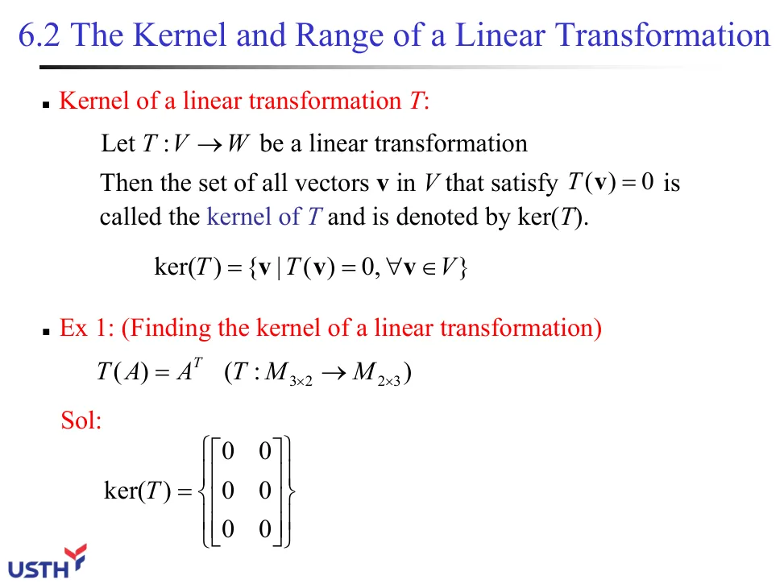
Let $T:V\to W$ be linear. The set of all $v\in V$ with $T(v)=0$ is the kernel of $T$: $\ker(T)=\{v\mid T(v)=0,\ v\in V\}$. Example 1: for $T(A)=A^T$ on $M_{3\times2}$, $T(A)=0$ only for the $3\times2$ zero matrix, so $\ker(T)$ consists of that single matrix.
Cho $T:V\to W$ tuyến tính. Tập mọi $v\in V$ với $T(v)=0$ là hạt nhân (kernel) của $T$: $\ker(T)=\{v\mid T(v)=0,\ v\in V\}$. Ví dụ 1: với $T(A)=A^T$ trên $M_{3\times2}$, $T(A)=0$ chỉ khi $A$ là ma trận không $3\times2$, nên $\ker(T)$ gồm đúng ma trận đó.
Find $\ker(T)$ for $T(x,y)=(x-y,\ 2x-2y)$.
Tìm $\ker(T)$ với $T(x,y)=(x-y,\ 2x-2y)$.
Answer and solution · Đáp án và lời giải
Answer · Đáp án: $\ker(T)=\{t(1,1)\mid t\in\mathbb R\}=\operatorname{span}\{(1,1)\}$
$T(x,y)=0$ means $x-y=0$ and $2x-2y=0$, the same equation: $y=x$. So $\ker(T)$ is the line $\{(t,t)\}$.
$T(x,y)=0$ nghĩa là $x-y=0$ và $2x-2y=0$, cùng một phương trình: $y=x$. Vậy $\ker(T)$ là đường thẳng $\{(t,t)\}$.
Examples 2 and 3: kernels of the zero, identity and projection maps · Ví dụ 2 và 3: hạt nhân của phép không, phép đồng nhất và phép chiếu
★★★ Core · Cốt lõi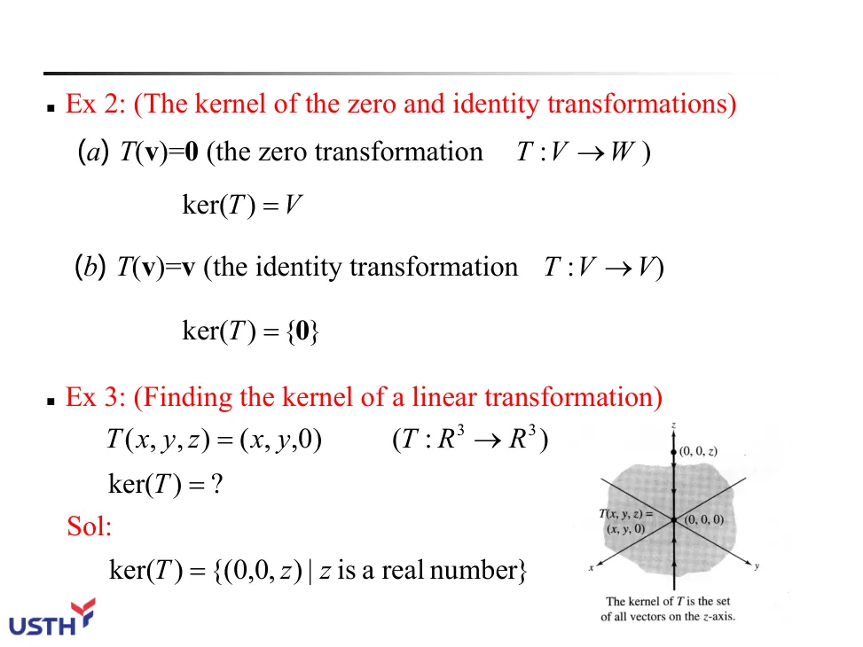
Example 2: (a) for the zero transformation $T(v)=0$, $\ker(T)=V$ (everything is sent to $0$); (b) for the identity $T(v)=v$, $\ker(T)=\{0\}$. Example 3: $T(x,y,z)=(x,y,0)$ on $\mathbb R^3$ has $T(x,y,z)=0$ iff $x=y=0$, so $\ker(T)=\{(0,0,z)\mid z\in\mathbb R\}$, the $z$-axis (the figure shows the kernel as the vertical line over the origin).
Ví dụ 2: (a) với phép không $T(v)=0$, $\ker(T)=V$ (mọi thứ bị đưa về $0$); (b) với phép đồng nhất $T(v)=v$, $\ker(T)=\{0\}$. Ví dụ 3: $T(x,y,z)=(x,y,0)$ trên $\mathbb R^3$ có $T(x,y,z)=0$ khi và chỉ khi $x=y=0$ nên $\ker(T)=\{(0,0,z)\mid z\in\mathbb R\}$, trục $z$ (hình vẽ cho thấy hạt nhân là đường thẳng đứng qua gốc).
Find the kernel of the projection onto the $xz$-plane, $T(x,y,z)=(x,0,z)$, and describe it geometrically.
Tìm hạt nhân của phép chiếu lên mặt phẳng $xz$, $T(x,y,z)=(x,0,z)$, và mô tả hình học.
Answer and solution · Đáp án và lời giải
Answer · Đáp án: $\ker(T)=\{(0,t,0)\}$, the $y$-axis
$T(x,y,z)=(x,0,z)=0$ iff $x=z=0$, with $y$ free: the $y$-axis. The kernel is the set of points that the projection collapses onto the origin.
$T(x,y,z)=(x,0,z)=0$ khi và chỉ khi $x=z=0$, $y$ tự do: trục $y$. Hạt nhân là tập các điểm mà phép chiếu nén về gốc.
Example 5: kernel of a matrix transformation (setup) · Ví dụ 5: hạt nhân của phép biến đổi ma trận (thiết lập)
★★★ Core · Cốt lõi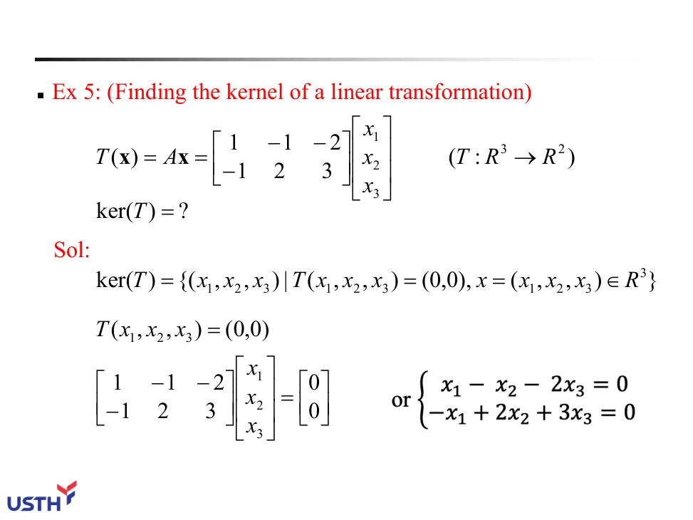
$T:\mathbb R^3\to\mathbb R^2$, $T(x)=Ax$ with $A=\begin{bmatrix}1&-1&-2\\-1&2&3\end{bmatrix}$. By definition $\ker(T)=\{x\in\mathbb R^3\mid T(x)=(0,0)\}$, i.e. the solutions of the homogeneous system $x_1-x_2-2x_3=0$, $-x_1+2x_2+3x_3=0$. So finding a kernel = solving $Ax=0$.
$T:\mathbb R^3\to\mathbb R^2$, $T(x)=Ax$ với $A=\begin{bmatrix}1&-1&-2\\-1&2&3\end{bmatrix}$. Theo định nghĩa $\ker(T)=\{x\in\mathbb R^3\mid T(x)=(0,0)\}$, tức nghiệm của hệ thuần nhất $x_1-x_2-2x_3=0$, $-x_1+2x_2+3x_3=0$. Vậy tìm hạt nhân = giải $Ax=0$.
Find $\ker(T)$ for $T(x)=Ax$ with $A=\begin{bmatrix}1&2&-1\\2&1&1\end{bmatrix}$.
Tìm $\ker(T)$ với $T(x)=Ax$, $A=\begin{bmatrix}1&2&-1\\2&1&1\end{bmatrix}$.
Answer and solution · Đáp án và lời giải
Answer · Đáp án: $\ker(T)=\operatorname{span}\{(-1,1,1)\}$
$R_2-2R_1$ gives $-3x_2+3x_3=0$, so $x_2=x_3$; then $x_1=-2x_2+x_3=-x_3$. With $x_3=t$: $x=t(-1,1,1)$.
$R_2-2R_1$ cho $-3x_2+3x_3=0$ nên $x_2=x_3$; rồi $x_1=-2x_2+x_3=-x_3$. Với $x_3=t$: $x=t(-1,1,1)$.
Example 5: the kernel found by Gauss–Jordan elimination · Ví dụ 5: tìm hạt nhân bằng khử Gauss–Jordan
★★★ Core · Cốt lõi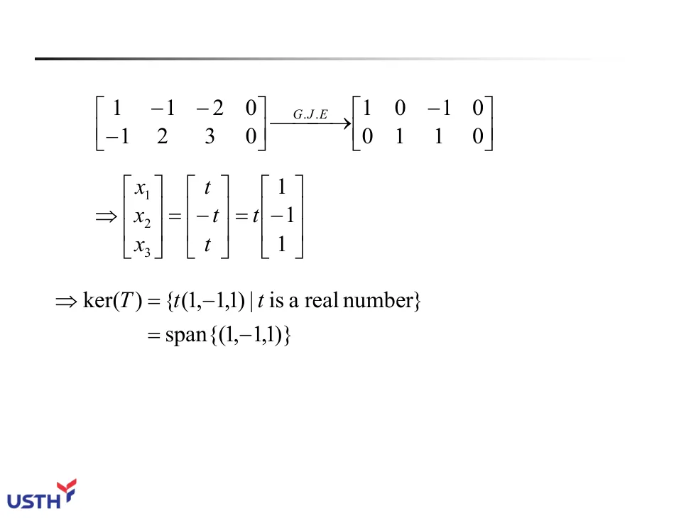
$\begin{bmatrix}1&-1&-2&0\\-1&2&3&0\end{bmatrix}\xrightarrow{\text{G.J.E.}}\begin{bmatrix}1&0&-1&0\\0&1&1&0\end{bmatrix}$, so $x_1=t$, $x_2=-t$, $x_3=t$ ($x_3$ is free): $x=t(1,-1,1)$. Therefore $\ker(T)=\{t(1,-1,1)\mid t\in\mathbb R\}=\operatorname{span}\{(1,-1,1)\}$, a line through the origin: a subspace of the domain $\mathbb R^3$.
$\begin{bmatrix}1&-1&-2&0\\-1&2&3&0\end{bmatrix}\xrightarrow{\text{G.J.E.}}\begin{bmatrix}1&0&-1&0\\0&1&1&0\end{bmatrix}$ nên $x_1=t$, $x_2=-t$, $x_3=t$ ($x_3$ tự do): $x=t(1,-1,1)$. Do đó $\ker(T)=\{t(1,-1,1)\mid t\in\mathbb R\}=\operatorname{span}\{(1,-1,1)\}$, một đường thẳng qua gốc: không gian con của miền xác định $\mathbb R^3$.
Check that $(1,-1,1)$ is sent to $0$ by $A=\begin{bmatrix}1&-1&-2\\-1&2&3\end{bmatrix}$ and that $\dim\ker(T)=3-\operatorname{rank}A=1$.
Kiểm tra $(1,-1,1)$ bị $A=\begin{bmatrix}1&-1&-2\\-1&2&3\end{bmatrix}$ đưa về $0$ và $\dim\ker(T)=3-\operatorname{rank}A=1$.
Answer and solution · Đáp án và lời giải
Answer · Đáp án: $A(1,-1,1)=(0,0)$; $\operatorname{rank}A=2$, nullity $1$
$A(1,-1,1)=(1+1-2,\ -1-2+3)=(0,0)$ ✓. There are two pivots (columns $1,2$) and one free variable, so the kernel has dimension $1$.
$A(1,-1,1)=(1+1-2,\ -1-2+3)=(0,0)$ ✓. Có hai pivot (cột $1,2$) và một biến tự do nên hạt nhân có số chiều $1$.
Theorem 6.3: the kernel is a subspace · Định lý 6.3: hạt nhân là không gian con
★★★ Core · Cốt lõi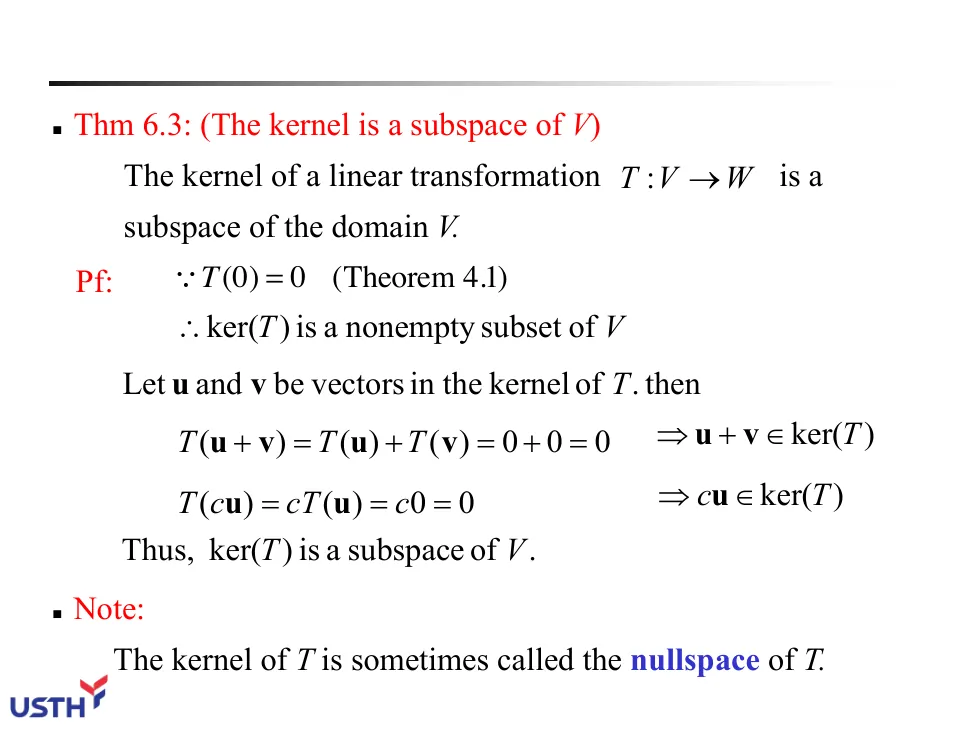
Theorem 6.3. The kernel of a linear transformation $T:V\to W$ is a subspace of the domain $V$. Proof: $T(0)=0$ (Theorem 6.1), so $\ker(T)$ is a nonempty subset of $V$. If $u,v\in\ker(T)$ then $T(u+v)=T(u)+T(v)=0+0=0$, so $u+v\in\ker(T)$; and $T(cu)=cT(u)=c0=0$, so $cu\in\ker(T)$. The kernel is sometimes called the null space of $T$.
Định lý 6.3. Hạt nhân của phép biến đổi tuyến tính $T:V\to W$ là không gian con của miền xác định $V$. Chứng minh: $T(0)=0$ (Định lý 6.1) nên $\ker(T)$ là tập con khác rỗng của $V$. Nếu $u,v\in\ker(T)$ thì $T(u+v)=T(u)+T(v)=0+0=0$ nên $u+v\in\ker(T)$; và $T(cu)=cT(u)=c0=0$ nên $cu\in\ker(T)$. Hạt nhân đôi khi gọi là không gian hạch của $T$.
Show that $W=\{(x,y,z)\mid x+y+z=0\}$ is a subspace of $\mathbb R^3$ as a kernel, and give $\dim W$. Why is $\{(x,y)\mid x+y=1\}$ not a subspace?
Chứng tỏ $W=\{(x,y,z)\mid x+y+z=0\}$ là không gian con của $\mathbb R^3$ nhờ là một hạt nhân, và cho $\dim W$. Vì sao $\{(x,y)\mid x+y=1\}$ không là không gian con?
Answer and solution · Đáp án và lời giải
Answer · Đáp án: $W=\ker T$ for $T(x,y,z)=x+y+z$, $\dim W=2$; the line $x+y=1$ misses $(0,0)$
$T:\mathbb R^3\to\mathbb R$, $T(x,y,z)=x+y+z$ is linear and $W=\ker(T)$, so $W$ is a subspace; it has one equation and three unknowns, hence $\dim W=2$. The set $\{x+y=1\}$ does not contain $(0,0)$ ($0+0\ne1$), so it cannot be a kernel or a subspace.
$T:\mathbb R^3\to\mathbb R$, $T(x,y,z)=x+y+z$ tuyến tính và $W=\ker(T)$ nên $W$ là không gian con; có một phương trình và ba ẩn, do đó $\dim W=2$. Tập $\{x+y=1\}$ không chứa $(0,0)$ ($0+0\ne1$) nên không thể là hạt nhân hay không gian con.
Example 6: a basis for the kernel (setup) · Ví dụ 6: cơ sở của hạt nhân (thiết lập)
★★★ Core · Cốt lõi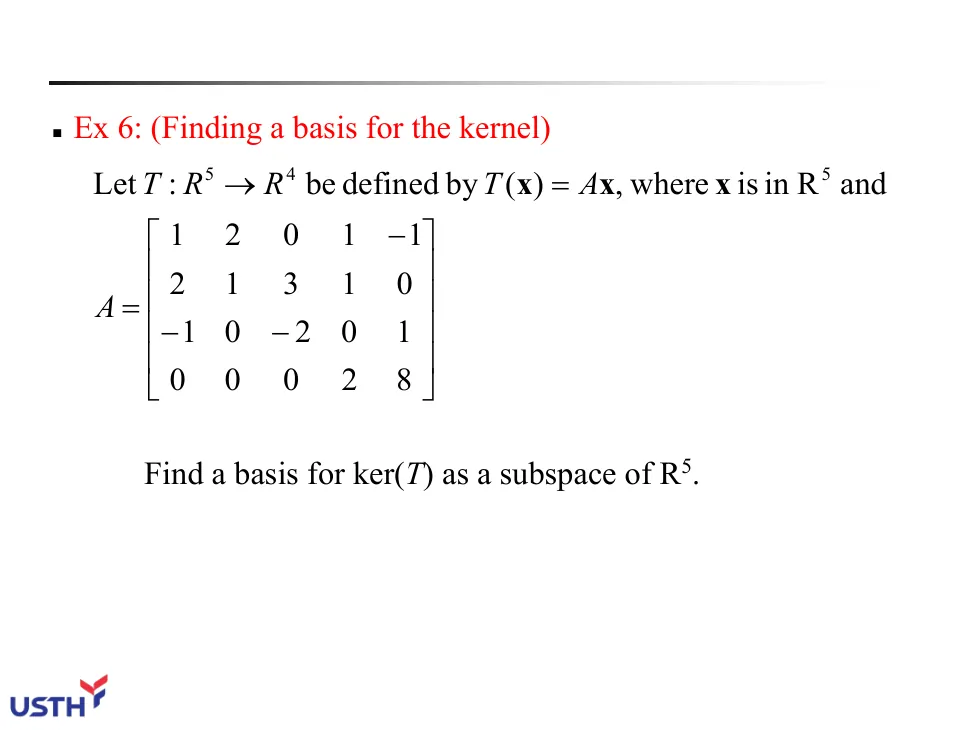
$T:\mathbb R^5\to\mathbb R^4$, $T(x)=Ax$ with $A=\begin{bmatrix}1&2&0&1&-1\\2&1&3&1&0\\-1&0&-2&0&1\\0&0&0&2&8\end{bmatrix}$. Find a basis for $\ker(T)$ as a subspace of $\mathbb R^5$. Method: solve $Ax=0$ by Gauss–Jordan elimination and read the basis from the free variables.
$T:\mathbb R^5\to\mathbb R^4$, $T(x)=Ax$ với $A=\begin{bmatrix}1&2&0&1&-1\\2&1&3&1&0\\-1&0&-2&0&1\\0&0&0&2&8\end{bmatrix}$. Tìm một cơ sở của $\ker(T)$ như không gian con của $\mathbb R^5$. Phương pháp: giải $Ax=0$ bằng khử Gauss–Jordan và đọc cơ sở từ các biến tự do.
Find a basis for the kernel of $T:\mathbb R^4\to\mathbb R^3$, $T(x)=Ax$, with $A=\begin{bmatrix}1&2&0&1\\0&0&1&2\\1&2&1&3\end{bmatrix}$.
Tìm một cơ sở của hạt nhân của $T:\mathbb R^4\to\mathbb R^3$, $T(x)=Ax$, với $A=\begin{bmatrix}1&2&0&1\\0&0&1&2\\1&2&1&3\end{bmatrix}$.
Answer and solution · Đáp án và lời giải
Answer · Đáp án: $\{(-2,1,0,0),\ (-1,0,-2,1)\}$
$R_3-R_1-R_2$ gives a zero row, so the rank is $2$. The system is $x_1+2x_2+x_4=0$, $x_3+2x_4=0$ with free variables $x_2=s$, $x_4=t$: $x=s(-2,1,0,0)+t(-1,0,-2,1)$.
$R_3-R_1-R_2$ cho một hàng không nên hạng bằng $2$. Hệ là $x_1+2x_2+x_4=0$, $x_3+2x_4=0$ với biến tự do $x_2=s$, $x_4=t$: $x=s(-2,1,0,0)+t(-1,0,-2,1)$.
Example 6: the basis for the kernel · Ví dụ 6: cơ sở của hạt nhân
★★★ Core · Cốt lõi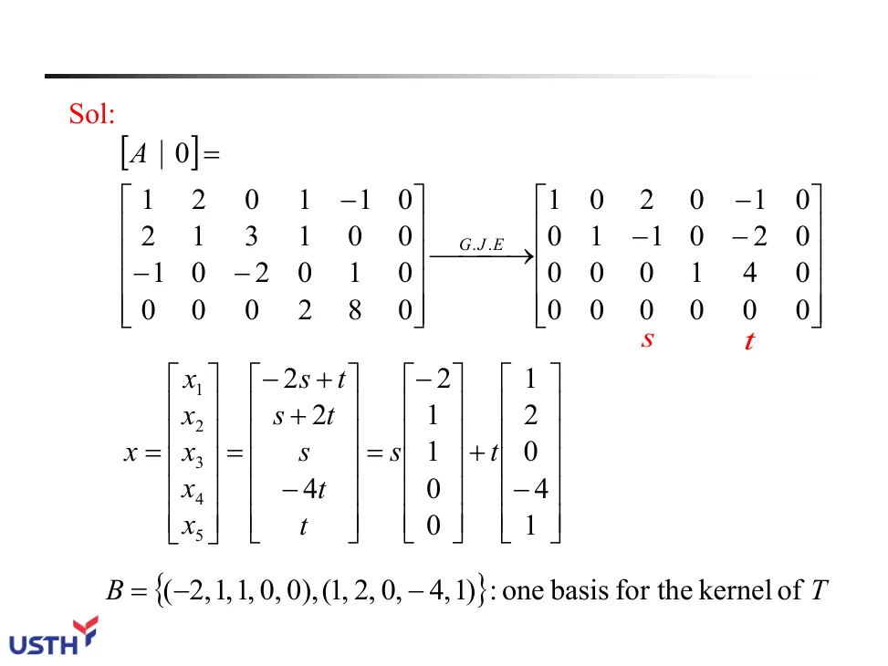
Gauss–Jordan on $[A\mid0]$ gives $\begin{bmatrix}1&0&2&0&-1\\0&1&-1&0&-2\\0&0&0&1&4\\0&0&0&0&0\end{bmatrix}$ with free variables $x_3=s$, $x_5=t$: $x=(-2s+t,\ s+2t,\ s,\ -4t,\ t)=s(-2,1,1,0,0)+t(1,2,0,-4,1)$. So $B=\{(-2,1,1,0,0),\ (1,2,0,-4,1)\}$ is one basis for $\ker(T)$ (the kernel has dimension $2$).
Gauss–Jordan trên $[A\mid0]$ cho $\begin{bmatrix}1&0&2&0&-1\\0&1&-1&0&-2\\0&0&0&1&4\\0&0&0&0&0\end{bmatrix}$ với biến tự do $x_3=s$, $x_5=t$: $x=(-2s+t,\ s+2t,\ s,\ -4t,\ t)=s(-2,1,1,0,0)+t(1,2,0,-4,1)$. Vậy $B=\{(-2,1,1,0,0),\ (1,2,0,-4,1)\}$ là một cơ sở của $\ker(T)$ (hạt nhân có số chiều $2$).
Verify directly that both basis vectors of the slide are mapped to $0$ by $A$ and that $\dim\ker(T)=5-\operatorname{rank}A$.
Kiểm tra trực tiếp cả hai vectơ cơ sở của slide đều bị $A$ đưa về $0$ và $\dim\ker(T)=5-\operatorname{rank}A$.
Answer and solution · Đáp án và lời giải
Answer · Đáp án: $A(-2,1,1,0,0)=0$, $A(1,2,0,-4,1)=0$; $\operatorname{rank}A=3$, nullity $2$
Row by row, $A(1,2,0,-4,1)$: $1+4+0-4-1=0$, $2+2+0-4+0=0$, $-1+0+0+0+1=0$, $0+0+0-8+8=0$; the first vector is checked the same way. There are $3$ pivots (columns $1,2,4$), so $\operatorname{nullity}=5-3=2$ ✓.
Từng hàng, $A(1,2,0,-4,1)$: $1+4+0-4-1=0$, $2+2+0-4+0=0$, $-1+0+0+0+1=0$, $0+0+0-8+8=0$; vectơ đầu kiểm tra tương tự. Có $3$ pivot (cột $1,2,4$) nên $\operatorname{nullity}=5-3=2$ ✓.
Corollary to Theorem 6.3; the range of $T$ · Hệ quả của Định lý 6.3; miền ảnh của $T$
★★★ Core · Cốt lõi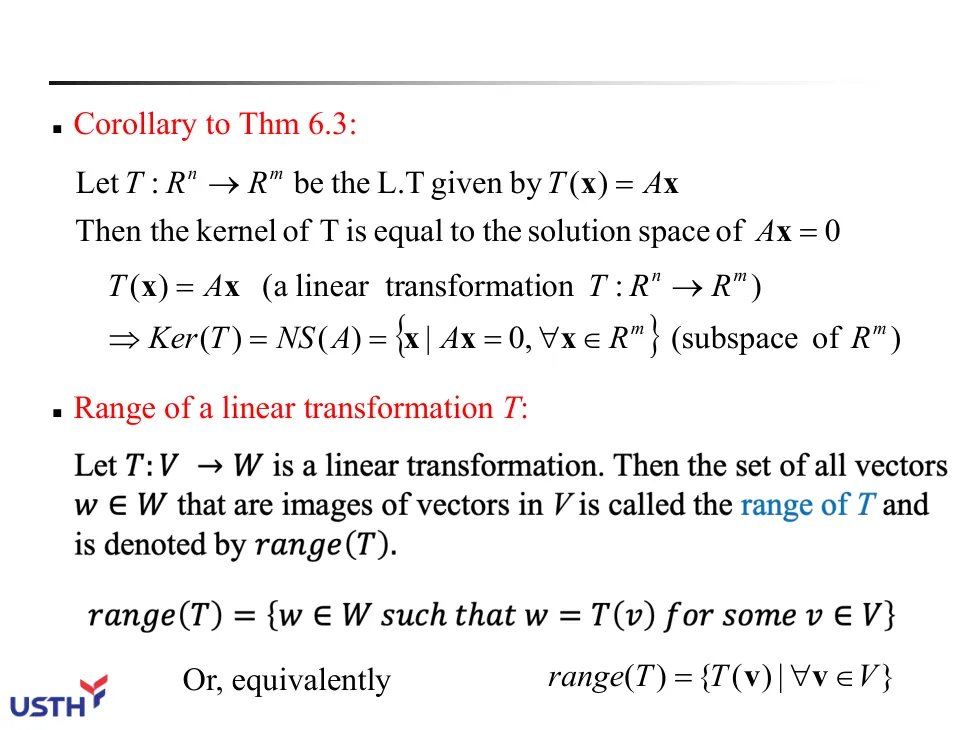
Corollary. For $T:\mathbb R^n\to\mathbb R^m$, $T(x)=Ax$: $\ker(T)=NS(A)=\{x\mid Ax=0\}$, the solution space of $Ax=0$. (The slide writes $x\in\mathbb R^m$ and “subspace of $\mathbb R^m$”; since $A$ is $m\times n$ and $x$ has $n$ entries, the null space is a subspace of $\mathbb R^n$, the domain.) Range: $\operatorname{range}(T)=\{w\in W\mid w=T(v)\text{ for some }v\in V\}=\{T(v)\mid v\in V\}$.
Hệ quả. Với $T:\mathbb R^n\to\mathbb R^m$, $T(x)=Ax$: $\ker(T)=NS(A)=\{x\mid Ax=0\}$, không gian nghiệm của $Ax=0$. (Slide viết $x\in\mathbb R^m$ và “không gian con của $\mathbb R^m$”; vì $A$ cỡ $m\times n$ và $x$ có $n$ phần tử nên không gian hạch là không gian con của $\mathbb R^n$, tức miền xác định.) Miền ảnh: $\operatorname{range}(T)=\{w\in W\mid w=T(v)\text{ với một }v\in V\}=\{T(v)\mid v\in V\}$.
For $T(x)=Ax$, $A=\begin{bmatrix}1&2\\3&6\end{bmatrix}$ find $\ker(T)$ and $\operatorname{range}(T)$.
Với $T(x)=Ax$, $A=\begin{bmatrix}1&2\\3&6\end{bmatrix}$ tìm $\ker(T)$ và $\operatorname{range}(T)$.
Answer and solution · Đáp án và lời giải
Answer · Đáp án: $\ker(T)=\operatorname{span}\{(-2,1)\}$; $\operatorname{range}(T)=\operatorname{span}\{(1,3)\}$
Row $2$ is $3\times$ row $1$, so the rank is $1$. $Ax=0$ means $x_1+2x_2=0$: $x=t(-2,1)$. The columns $(1,3)$ and $(2,6)$ are multiples of $(1,3)$, so the range is the line spanned by $(1,3)$.
Hàng $2$ bằng $3\times$ hàng $1$ nên hạng bằng $1$. $Ax=0$ nghĩa là $x_1+2x_2=0$: $x=t(-2,1)$. Các cột $(1,3)$ và $(2,6)$ là bội của $(1,3)$ nên miền ảnh là đường thẳng sinh bởi $(1,3)$.
Theorem 6.4: the range is a subspace · Định lý 6.4: miền ảnh là không gian con
★★★ Core · Cốt lõi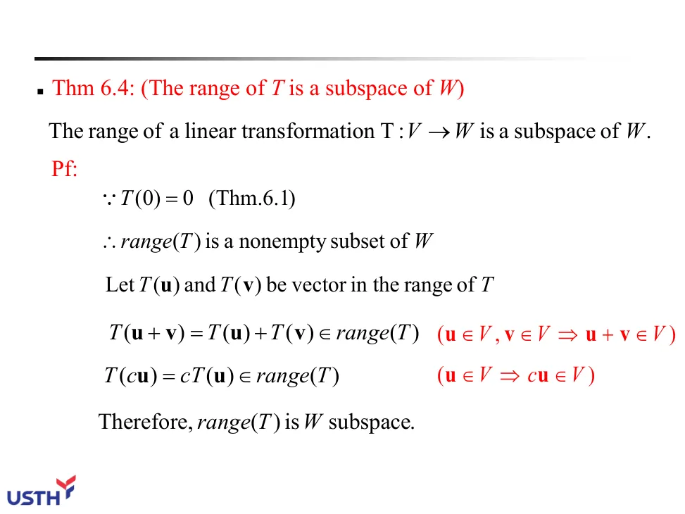
Theorem 6.4. The range of a linear transformation $T:V\to W$ is a subspace of the codomain $W$. Proof: $T(0)=0$, so $\operatorname{range}(T)$ is nonempty. Let $T(u)$ and $T(v)$ be in the range: $T(u)+T(v)=T(u+v)$ with $u+v\in V$, so the sum is in the range; and $cT(u)=T(cu)$ with $cu\in V$, so the multiple is in the range. Hence the range is a subspace of $W$.
Định lý 6.4. Miền ảnh của phép biến đổi tuyến tính $T:V\to W$ là không gian con của miền đích $W$. Chứng minh: $T(0)=0$ nên $\operatorname{range}(T)$ khác rỗng. Cho $T(u)$ và $T(v)$ thuộc miền ảnh: $T(u)+T(v)=T(u+v)$ với $u+v\in V$ nên tổng thuộc miền ảnh; và $cT(u)=T(cu)$ với $cu\in V$ nên bội cũng thuộc miền ảnh. Vậy miền ảnh là không gian con của $W$.
Describe the range of $T(x,y)=(x,\ 2x,\ y)$ and its dimension.
Mô tả miền ảnh của $T(x,y)=(x,\ 2x,\ y)$ và số chiều của nó.
Answer and solution · Đáp án và lời giải
Answer · Đáp án: $\operatorname{range}(T)=\operatorname{span}\{(1,2,0),(0,0,1)\}$, the plane $2x-y=0$; dimension $2$
$T(x,y)=x(1,2,0)+y(0,0,1)$, so the range is spanned by these two independent vectors (the columns of the matrix). Every output satisfies $2x-y=0$, which is the equation of that plane through the origin in $\mathbb R^3$.
$T(x,y)=x(1,2,0)+y(0,0,1)$ nên miền ảnh được sinh bởi hai vectơ độc lập này (các cột của ma trận). Mọi đầu ra thỏa $2x-y=0$, đó là phương trình của mặt phẳng qua gốc trong $\mathbb R^3$.
Notes and Corollary to Theorem 6.4: range = column space · Lưu ý và Hệ quả của Định lý 6.4: miền ảnh = không gian cột
★★★ Core · Cốt lõi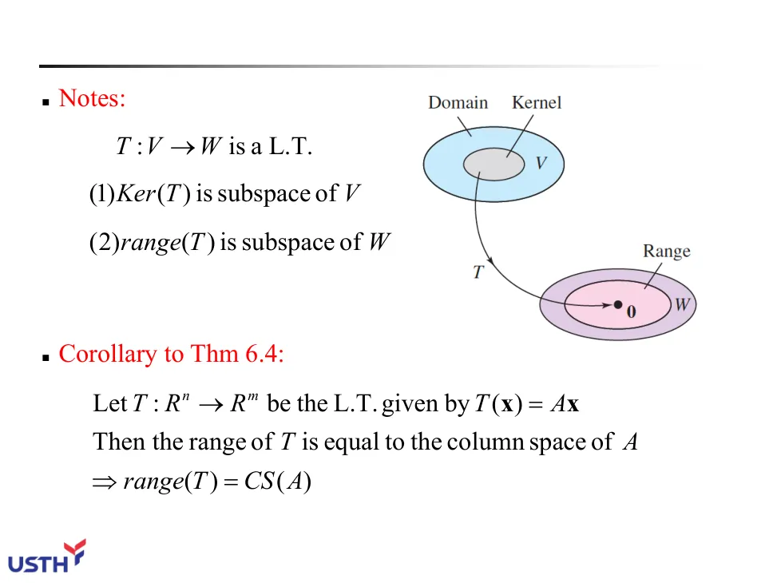
Notes: (1) for a linear transformation $T:V\to W$, $\ker(T)$ is a subspace of $V$; (2) $\operatorname{range}(T)$ is a subspace of $W$. Corollary. For $T:\mathbb R^n\to\mathbb R^m$, $T(x)=Ax$: $\operatorname{range}(T)=CS(A)$, the column space of $A$ (because $Ax$ is a linear combination of the columns). So the kernel lives in the domain and the range lives in the codomain.
Lưu ý: (1) với phép biến đổi tuyến tính $T:V\to W$, $\ker(T)$ là không gian con của $V$; (2) $\operatorname{range}(T)$ là không gian con của $W$. Hệ quả. Với $T:\mathbb R^n\to\mathbb R^m$, $T(x)=Ax$: $\operatorname{range}(T)=CS(A)$, không gian cột của $A$ (vì $Ax$ là tổ hợp tuyến tính của các cột). Vậy hạt nhân nằm trong miền xác định còn miền ảnh nằm trong miền đích.
For $T$ of slide 24 ($A$ is $4\times5$) say in which spaces $\ker(T)$ and $\operatorname{range}(T)$ live and give their dimensions.
Với $T$ của slide 24 ($A$ cỡ $4\times5$) cho biết $\ker(T)$ và $\operatorname{range}(T)$ nằm trong không gian nào và số chiều của chúng.
Answer and solution · Đáp án và lời giải
Answer · Đáp án: $\ker(T)\subseteq\mathbb R^5$ with $\dim2$; $\operatorname{range}(T)\subseteq\mathbb R^4$ with $\dim3$
$T:\mathbb R^5\to\mathbb R^4$. The kernel is the null space, a subspace of the domain $\mathbb R^5$, of dimension $5-3=2$. The range is the column space, a subspace of the codomain $\mathbb R^4$, of dimension $\operatorname{rank}A=3$.
$T:\mathbb R^5\to\mathbb R^4$. Hạt nhân là không gian hạch, không gian con của miền xác định $\mathbb R^5$, số chiều $5-3=2$. Miền ảnh là không gian cột, không gian con của miền đích $\mathbb R^4$, số chiều $\operatorname{rank}A=3$.
Example 7: a basis for the range (setup) · Ví dụ 7: cơ sở của miền ảnh (thiết lập)
★★★ Core · Cốt lõi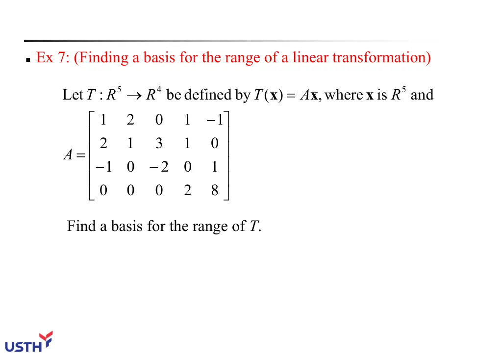
Same transformation as Example 6: $T:\mathbb R^5\to\mathbb R^4$, $T(x)=Ax$ with $A=\begin{bmatrix}1&2&0&1&-1\\2&1&3&1&0\\-1&0&-2&0&1\\0&0&0&2&8\end{bmatrix}$. Find a basis for the range of $T$. Since $\operatorname{range}(T)=CS(A)$ we need a basis for the column space: the pivot columns of $A$ after row reduction.
Cùng phép biến đổi của Ví dụ 6: $T:\mathbb R^5\to\mathbb R^4$, $T(x)=Ax$ với $A=\begin{bmatrix}1&2&0&1&-1\\2&1&3&1&0\\-1&0&-2&0&1\\0&0&0&2&8\end{bmatrix}$. Tìm cơ sở của miền ảnh của $T$. Vì $\operatorname{range}(T)=CS(A)$ ta cần cơ sở của không gian cột: các cột pivot của $A$ sau khi rút gọn hàng.
Find a basis for the range of $T:\mathbb R^4\to\mathbb R^3$, $T(x)=Ax$, with $A=\begin{bmatrix}1&2&0&1\\0&0&1&2\\1&2&1&3\end{bmatrix}$.
Tìm cơ sở của miền ảnh của $T:\mathbb R^4\to\mathbb R^3$, $T(x)=Ax$, với $A=\begin{bmatrix}1&2&0&1\\0&0&1&2\\1&2&1&3\end{bmatrix}$.
Answer and solution · Đáp án và lời giải
Answer · Đáp án: $\{(1,0,1),\ (0,1,1)\}$ (columns $1$ and $3$ of $A$)
Reduce: pivots are in columns $1$ and $3$. Take those columns of the original $A$: $(1,0,1)$ and $(0,1,1)$. The range is a plane in $\mathbb R^3$ and $\operatorname{rank}+\operatorname{nullity}=2+2=4$.
Rút gọn: pivot ở cột $1$ và $3$. Lấy các cột đó của $A$ gốc: $(1,0,1)$ và $(0,1,1)$. Miền ảnh là một mặt phẳng trong $\mathbb R^3$ và $\operatorname{rank}+\operatorname{nullity}=2+2=4$.
Example 7: the basis for the range · Ví dụ 7: cơ sở của miền ảnh
★★★ Core · Cốt lõi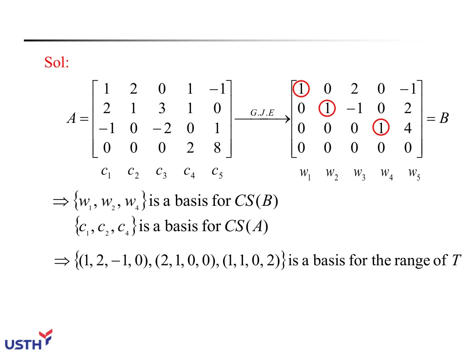
Gauss–Jordan elimination of $A$ gives $B$ with pivots in columns $w_1,w_2,w_4$ (circled). Then $\{w_1,w_2,w_4\}$ is a basis for $CS(B)$ but $\{c_1,c_2,c_4\}$ (the columns of the original $A$) is a basis for $CS(A)$: the basis of the range is $\{(1,2,-1,0),\ (2,1,0,0),\ (1,1,0,2)\}$. Note: the slide prints $2$ in row $2$, column $5$ of $B$; the correct entry is $-2$ (compare slide 25), and this does not change the pivot columns.
Khử Gauss–Jordan $A$ cho $B$ có pivot ở các cột $w_1,w_2,w_4$ (được khoanh tròn). Khi đó $\{w_1,w_2,w_4\}$ là cơ sở của $CS(B)$ nhưng $\{c_1,c_2,c_4\}$ (các cột của $A$ gốc) mới là cơ sở của $CS(A)$: cơ sở của miền ảnh là $\{(1,2,-1,0),\ (2,1,0,0),\ (1,1,0,2)\}$. Lưu ý: slide in số $2$ ở hàng $2$, cột $5$ của $B$; giá trị đúng là $-2$ (so với slide 25), và điều này không đổi các cột pivot.
Check that columns $3$ and $5$ of $A$ are combinations of the pivot columns: $c_3=2c_1-c_2$ and $c_5=-c_1-2c_2+4c_4$.
Kiểm tra cột $3$ và cột $5$ của $A$ là tổ hợp của các cột pivot: $c_3=2c_1-c_2$ và $c_5=-c_1-2c_2+4c_4$.
Answer and solution · Đáp án và lời giải
Answer · Đáp án: $c_3=(0,3,-2,0)=2c_1-c_2$; $c_5=(-1,0,1,8)=-c_1-2c_2+4c_4$
$2(1,2,-1,0)-(2,1,0,0)=(0,3,-2,0)=c_3$ ✓. $-(1,2,-1,0)-2(2,1,0,0)+4(1,1,0,2)=(-1-4+4,\ -2-2+4,\ 1,\ 8)=(-1,0,1,8)=c_5$ ✓. These coefficients are exactly the entries of the reduced columns $(2,-1,0,0)$ and $(-1,-2,4,0)$.
$2(1,2,-1,0)-(2,1,0,0)=(0,3,-2,0)=c_3$ ✓. $-(1,2,-1,0)-2(2,1,0,0)+4(1,1,0,2)=(-1-4+4,\ -2-2+4,\ 1,\ 8)=(-1,0,1,8)=c_5$ ✓. Các hệ số này đúng là các phần tử của các cột rút gọn $(2,-1,0,0)$ và $(-1,-2,4,0)$.
Rank and nullity of a linear transformation · Hạng và số chiều hạt nhân của phép biến đổi tuyến tính
★★★ Core · Cốt lõi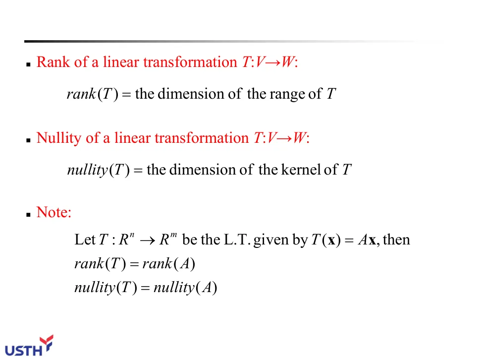
For $T:V\to W$: the rank of $T$ is the dimension of the range, $\operatorname{rank}(T)=\dim(\operatorname{range}(T))$; the nullity of $T$ is the dimension of the kernel, $\operatorname{nullity}(T)=\dim(\ker(T))$. For $T(x)=Ax$: $\operatorname{rank}(T)=\operatorname{rank}(A)$ and $\operatorname{nullity}(T)=\operatorname{nullity}(A)$.
Với $T:V\to W$: hạng của $T$ là số chiều của miền ảnh, $\operatorname{rank}(T)=\dim(\operatorname{range}(T))$; số chiều hạt nhân (nullity) của $T$ là số chiều của hạt nhân, $\operatorname{nullity}(T)=\dim(\ker(T))$. Với $T(x)=Ax$: $\operatorname{rank}(T)=\operatorname{rank}(A)$ và $\operatorname{nullity}(T)=\operatorname{nullity}(A)$.
Find $\operatorname{rank}(T)$ and $\operatorname{nullity}(T)$ for $T(x)=Ax$, $A=\begin{bmatrix}1&2&3\\2&4&6\end{bmatrix}$.
Tìm $\operatorname{rank}(T)$ và $\operatorname{nullity}(T)$ với $T(x)=Ax$, $A=\begin{bmatrix}1&2&3\\2&4&6\end{bmatrix}$.
Answer and solution · Đáp án và lời giải
Answer · Đáp án: $\operatorname{rank}(T)=1$, $\operatorname{nullity}(T)=2$
Row $2$ is $2\times$ row $1$, so $\operatorname{rank}A=1$ (the range is the line spanned by $(1,2)$). The kernel is the plane $x_1+2x_2+3x_3=0$, of dimension $2$; and $1+2=3$.
Hàng $2$ bằng $2\times$ hàng $1$ nên $\operatorname{rank}A=1$ (miền ảnh là đường thẳng sinh bởi $(1,2)$). Hạt nhân là mặt phẳng $x_1+2x_2+3x_3=0$, số chiều $2$; và $1+2=3$.
Theorem 6.5: rank plus nullity · Định lý 6.5: hạng cộng số chiều hạt nhân
★★★ Core · Cốt lõi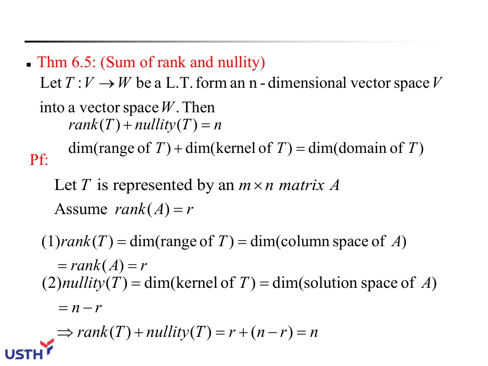
Theorem 6.5. Let $T:V\to W$ be a linear transformation from an $n$-dimensional vector space $V$ into a vector space $W$. Then $\operatorname{rank}(T)+\operatorname{nullity}(T)=n$, i.e. $\dim(\operatorname{range})+\dim(\ker)=\dim(\text{domain})$. Proof (for a matrix $A$, $m\times n$): with $\operatorname{rank}A=r$, $\operatorname{rank}(T)=\dim CS(A)=r$ and $\operatorname{nullity}(T)=\dim(\text{solution space of }Ax=0)=n-r$; add: $r+(n-r)=n$.
Định lý 6.5. Cho $T:V\to W$ là phép biến đổi tuyến tính từ không gian vectơ $n$ chiều $V$ vào không gian vectơ $W$. Khi đó $\operatorname{rank}(T)+\operatorname{nullity}(T)=n$, tức $\dim(\operatorname{range})+\dim(\ker)=\dim(\text{miền xác định})$. Chứng minh (với ma trận $A$ cỡ $m\times n$): với $\operatorname{rank}A=r$, $\operatorname{rank}(T)=\dim CS(A)=r$ và $\operatorname{nullity}(T)=\dim(\text{không gian nghiệm của }Ax=0)=n-r$; cộng lại: $r+(n-r)=n$.
Pivots plus free variables equals the number of unknowns: this one count solves most dimension questions (and reappears as $\operatorname{rank}A+\operatorname{nullity}A=n$ from Lecture 4).
Pivot cộng biến tự do bằng số ẩn: phép đếm này giải hầu hết các câu hỏi về số chiều (và là $\operatorname{rank}A+\operatorname{nullity}A=n$ của Bài 4).
(a) $T:\mathbb R^6\to\mathbb R^4$ is onto: find $\operatorname{nullity}(T)$. (b) $T:\mathbb R^7\to\mathbb R^5$ has nullity $3$: find $\operatorname{rank}(T)$. (c) Confirm with a $4\times6$ matrix of rank $4$.
(a) $T:\mathbb R^6\to\mathbb R^4$ là toàn ánh: tìm $\operatorname{nullity}(T)$. (b) $T:\mathbb R^7\to\mathbb R^5$ có nullity $3$: tìm $\operatorname{rank}(T)$. (c) Kiểm chứng với ma trận $4\times6$ hạng $4$.
Answer and solution · Đáp án và lời giải
Answer · Đáp án: (a) $2$; (b) $4$; (c) rank $4$, nullity $2$
(a) Onto means $\operatorname{range}=\mathbb R^4$, so $\operatorname{rank}=4$ and $\operatorname{nullity}=6-4=2$. (b) $\operatorname{rank}=7-3=4$. (c) The Vandermonde-type matrix with entries $(i+1)^j$ has four independent rows, so rank $4$ and a $2$-dimensional null space.
(a) Toàn ánh nghĩa là $\operatorname{range}=\mathbb R^4$ nên $\operatorname{rank}=4$ và $\operatorname{nullity}=6-4=2$. (b) $\operatorname{rank}=7-3=4$. (c) Ma trận dạng Vandermonde với phần tử $(i+1)^j$ có bốn hàng độc lập nên hạng $4$ và không gian hạch $2$ chiều.
Example 8: rank and nullity of a matrix transformation · Ví dụ 8: hạng và số chiều hạt nhân của phép biến đổi ma trận
★★★ Core · Cốt lõi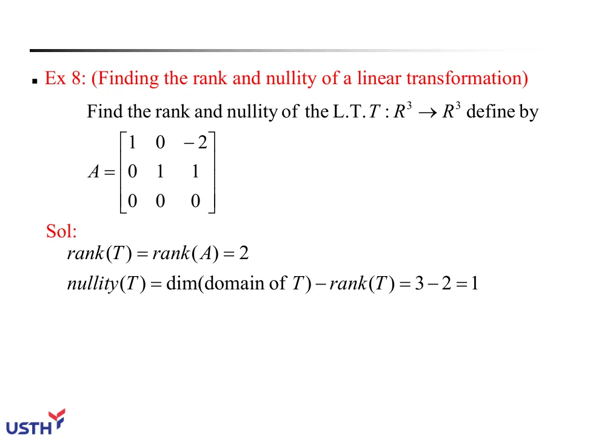
$T:\mathbb R^3\to\mathbb R^3$ with $A=\begin{bmatrix}1&0&-2\\0&1&1\\0&0&0\end{bmatrix}$ (already reduced). $\operatorname{rank}(T)=\operatorname{rank}(A)=2$ and $\operatorname{nullity}(T)=\dim(\text{domain})-\operatorname{rank}(T)=3-2=1$.
$T:\mathbb R^3\to\mathbb R^3$ với $A=\begin{bmatrix}1&0&-2\\0&1&1\\0&0&0\end{bmatrix}$ (đã rút gọn). $\operatorname{rank}(T)=\operatorname{rank}(A)=2$ và $\operatorname{nullity}(T)=\dim(\text{miền xác định})-\operatorname{rank}(T)=3-2=1$.
Find the rank and nullity of $T(x)=Ax$ for $A=\begin{bmatrix}1&2&3\\2&4&6\\1&2&4\end{bmatrix}$.
Tìm hạng và nullity của $T(x)=Ax$ với $A=\begin{bmatrix}1&2&3\\2&4&6\\1&2&4\end{bmatrix}$.
Answer and solution · Đáp án và lời giải
Answer · Đáp án: $\operatorname{rank}(T)=2$, $\operatorname{nullity}(T)=1$
Row $2=2\,$row $1$, while rows $1$ and $3$ are independent, so $\operatorname{rank}A=2$ and $\operatorname{nullity}=3-2=1$ (the kernel is the line spanned by $(-2,1,0)$).
Hàng $2=2\,$hàng $1$, còn hàng $1$ và $3$ độc lập, nên $\operatorname{rank}A=2$ và $\operatorname{nullity}=3-2=1$ (hạt nhân là đường thẳng sinh bởi $(-2,1,0)$).
Example 9: rank and nullity from dimensions alone · Ví dụ 9: hạng và số chiều hạt nhân chỉ từ số chiều
★★★ Core · Cốt lõi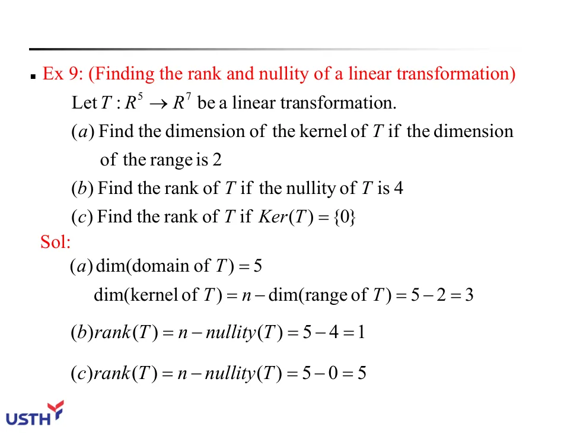
$T:\mathbb R^5\to\mathbb R^7$ is linear (domain dimension $5$). (a) If $\dim\operatorname{range}=2$ then $\dim\ker=5-2=3$. (b) If the nullity is $4$ then $\operatorname{rank}=5-4=1$. (c) If $\ker(T)=\{0\}$ then the nullity is $0$ and $\operatorname{rank}=5-0=5$. No matrix is needed: only $\operatorname{rank}+\operatorname{nullity}=n$.
$T:\mathbb R^5\to\mathbb R^7$ tuyến tính (số chiều miền xác định $5$). (a) Nếu $\dim\operatorname{range}=2$ thì $\dim\ker=5-2=3$. (b) Nếu nullity bằng $4$ thì $\operatorname{rank}=5-4=1$. (c) Nếu $\ker(T)=\{0\}$ thì nullity bằng $0$ và $\operatorname{rank}=5-0=5$. Không cần ma trận: chỉ dùng $\operatorname{rank}+\operatorname{nullity}=n$.
For a linear $T:\mathbb R^4\to\mathbb R^6$: what is the largest possible rank, can $T$ be onto, and what is the smallest possible nullity?
Với $T:\mathbb R^4\to\mathbb R^6$ tuyến tính: hạng lớn nhất có thể là bao nhiêu, $T$ có thể toàn ánh không, và nullity nhỏ nhất có thể là bao nhiêu?
Answer and solution · Đáp án và lời giải
Answer · Đáp án: largest rank $4$; $T$ cannot be onto; smallest nullity $0$
$\operatorname{rank}(T)\le\dim(\text{domain})=4$, so the range is at most $4$-dimensional and cannot fill the $6$-dimensional codomain: $T$ is never onto. The bound is attained (e.g. by a $6\times4$ matrix with independent columns), and then $\operatorname{nullity}=4-4=0$.
$\operatorname{rank}(T)\le\dim(\text{miền xác định})=4$ nên miền ảnh nhiều nhất $4$ chiều, không thể lấp đầy miền đích $6$ chiều: $T$ không bao giờ toàn ánh. Cận này đạt được (ví dụ ma trận $6\times4$ có các cột độc lập), khi đó $\operatorname{nullity}=4-4=0$.
One-to-one transformations · Phép biến đổi đơn ánh
★★★ Core · Cốt lõi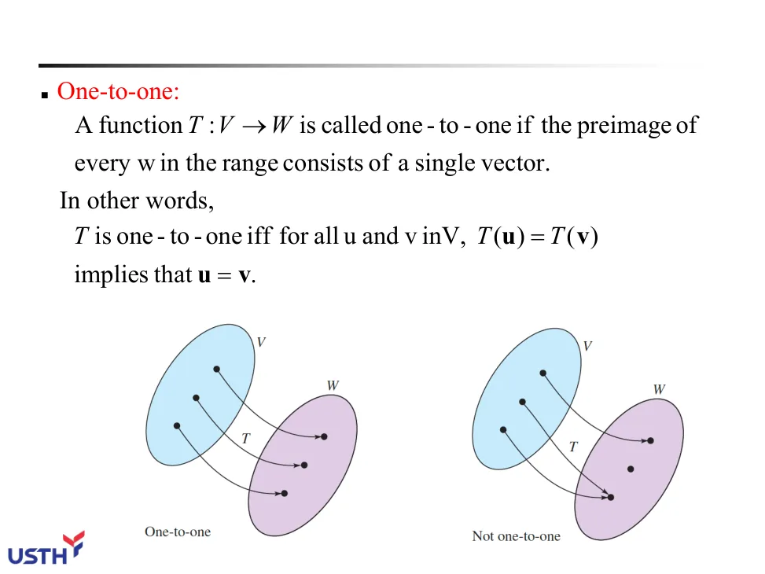
$T:V\to W$ is one-to-one (injective) if the preimage of every $w$ in the range consists of a single vector. Equivalently: $T(u)=T(v)$ implies $u=v$ for all $u,v\in V$. In the figure, the left map sends different points to different points (one-to-one); in the right map two points land on the same image (not one-to-one).
$T:V\to W$ là đơn ánh (one-to-one) nếu tạo ảnh của mọi $w$ trong miền ảnh chỉ gồm một vectơ. Tương đương: $T(u)=T(v)$ kéo theo $u=v$ với mọi $u,v\in V$. Trong hình, ánh xạ bên trái đưa các điểm khác nhau tới các điểm khác nhau (đơn ánh); ở ánh xạ bên phải hai điểm cùng rơi vào một ảnh (không đơn ánh).
Is $T(x,y)=(x+y,\ x-y)$ one-to-one? Is $S(x,y)=(x+y,\ 2x+2y)$?
$T(x,y)=(x+y,\ x-y)$ có đơn ánh không? $S(x,y)=(x+y,\ 2x+2y)$ thì sao?
Answer and solution · Đáp án và lời giải
Answer · Đáp án: $T$ yes; $S$ no ($S(1,-1)=S(0,0)$)
$T(u)=T(v)$ gives $u_1+u_2=v_1+v_2$ and $u_1-u_2=v_1-v_2$, so $u=v$. For $S$: $S(1,-1)=(0,0)=S(0,0)$ with $(1,-1)\ne(0,0)$.
$T(u)=T(v)$ cho $u_1+u_2=v_1+v_2$ và $u_1-u_2=v_1-v_2$ nên $u=v$. Với $S$: $S(1,-1)=(0,0)=S(0,0)$ mà $(1,-1)\ne(0,0)$.
Onto transformations · Phép biến đổi toàn ánh
★★★ Core · Cốt lõi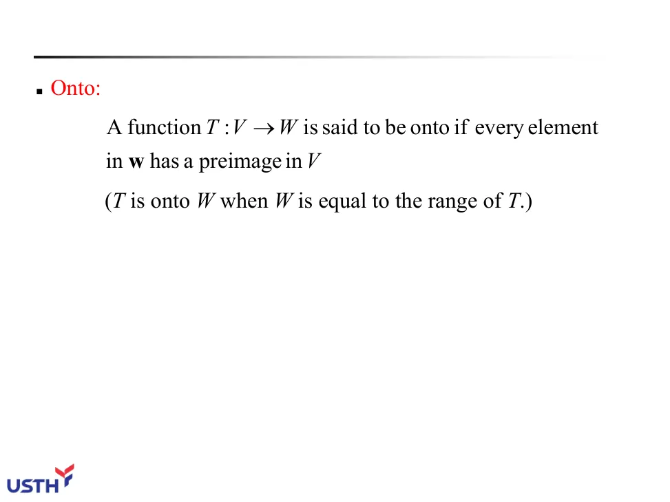
$T:V\to W$ is onto (surjective) if every element $w\in W$ has a preimage in $V$; in other words $T$ is onto $W$ when $W$ equals the range of $T$. (One-to-one is about at most one preimage; onto is about at least one.)
$T:V\to W$ là toàn ánh (onto) nếu mọi phần tử $w\in W$ đều có tạo ảnh trong $V$; nói cách khác $T$ là toàn ánh lên $W$ khi $W$ bằng miền ảnh của $T$. (Đơn ánh là nhiều nhất một tạo ảnh; toàn ánh là ít nhất một tạo ảnh.)
Is $T(x,y,z)=(x+y,\ y+z)$ onto $\mathbb R^2$? Is $S(x,y)=(x,\ y,\ x+y)$ onto $\mathbb R^3$?
$T(x,y,z)=(x+y,\ y+z)$ có toàn ánh lên $\mathbb R^2$ không? $S(x,y)=(x,\ y,\ x+y)$ có toàn ánh lên $\mathbb R^3$ không?
Answer and solution · Đáp án và lời giải
Answer · Đáp án: $T$ onto; $S$ not onto (nothing maps to $(0,0,1)$)
$T$ has rank $2=\dim\mathbb R^2$, so every $(a,b)$ is hit. $S$ has rank $2<3$: the range is the plane $z=x+y$, and $(0,0,1)$ has no preimage ($x=0$, $y=0$, $x+y=1$ is inconsistent).
$T$ có hạng $2=\dim\mathbb R^2$ nên mọi $(a,b)$ đều được chạm tới. $S$ có hạng $2<3$: miền ảnh là mặt phẳng $z=x+y$, và $(0,0,1)$ không có tạo ảnh ($x=0$, $y=0$, $x+y=1$ mâu thuẫn).
Theorem 6.6: one-to-one means trivial kernel · Định lý 6.6: đơn ánh nghĩa là hạt nhân tầm thường
★★★ Core · Cốt lõi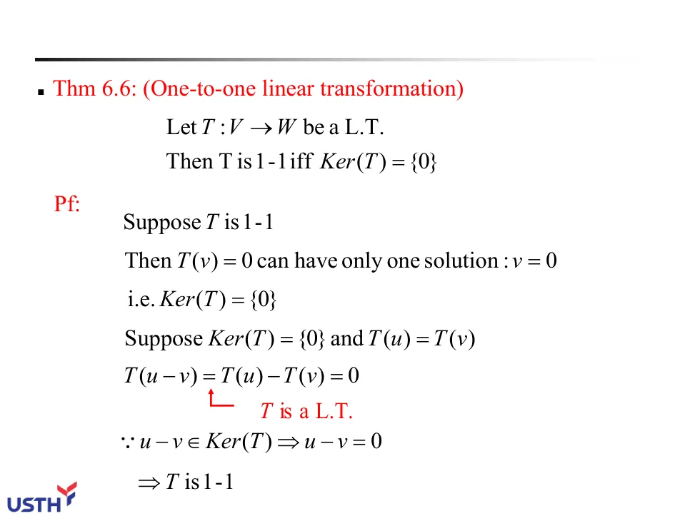
Theorem 6.6. $T:V\to W$ is one-to-one if and only if $\ker(T)=\{0\}$. Proof: ($\Rightarrow$) if $T$ is one-to-one, $T(v)=0=T(0)$ forces $v=0$. ($\Leftarrow$) if $\ker(T)=\{0\}$ and $T(u)=T(v)$, then $T(u-v)=T(u)-T(v)=0$, so $u-v\in\ker(T)=\{0\}$ and $u=v$. This replaces the test “$T(u)=T(v)\Rightarrow u=v$” by the easier test “$Tv=0\Rightarrow v=0$”.
Định lý 6.6. $T:V\to W$ là đơn ánh khi và chỉ khi $\ker(T)=\{0\}$. Chứng minh: ($\Rightarrow$) nếu $T$ đơn ánh, $T(v)=0=T(0)$ buộc $v=0$. ($\Leftarrow$) nếu $\ker(T)=\{0\}$ và $T(u)=T(v)$ thì $T(u-v)=T(u)-T(v)=0$ nên $u-v\in\ker(T)=\{0\}$ và $u=v$. Định lý thay phép thử “$T(u)=T(v)\Rightarrow u=v$” bằng phép thử dễ hơn “$Tv=0\Rightarrow v=0$”.
Use Theorem 6.6 on $T(x,y,z)=(x-y,\ y-z,\ z-x)$ and on $S(x,y)=(x,\ y,\ x+y)$.
Dùng Định lý 6.6 cho $T(x,y,z)=(x-y,\ y-z,\ z-x)$ và $S(x,y)=(x,\ y,\ x+y)$.
Answer and solution · Đáp án và lời giải
Answer · Đáp án: $T$ not one-to-one ($\ker T=\operatorname{span}\{(1,1,1)\}$); $S$ one-to-one ($\ker S=\{0\}$)
$T(x,y,z)=0$ iff $x=y=z$: the kernel is the line through $(1,1,1)$, so $T$ is not one-to-one (indeed $T(1,1,1)=T(0,0,0)$). For $S$, $x=0$ and $y=0$ force $v=0$: the kernel is $\{0\}$.
$T(x,y,z)=0$ khi và chỉ khi $x=y=z$: hạt nhân là đường thẳng qua $(1,1,1)$ nên $T$ không đơn ánh (thật vậy $T(1,1,1)=T(0,0,0)$). Với $S$, $x=0$ và $y=0$ buộc $v=0$: hạt nhân là $\{0\}$.
Example 10: one-to-one and not one-to-one · Ví dụ 10: đơn ánh và không đơn ánh
★★★ Core · Cốt lõi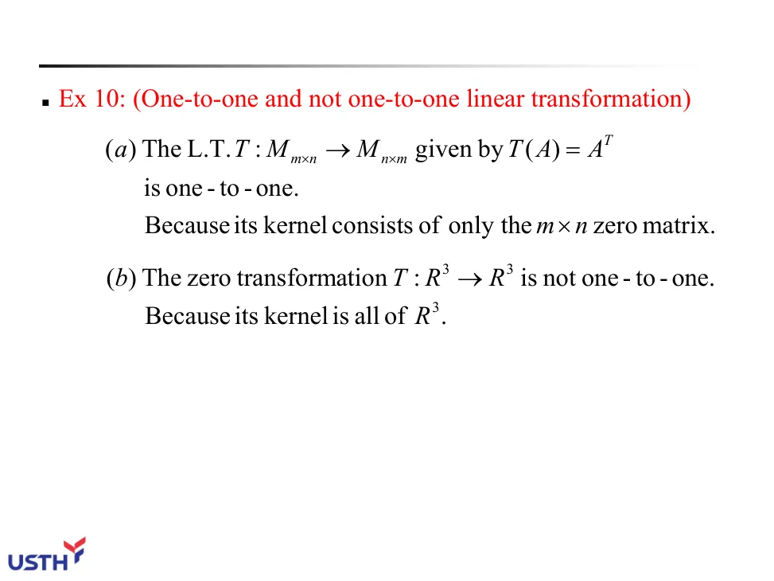
(a) $T:M_{m\times n}\to M_{n\times m}$, $T(A)=A^T$ is one-to-one because its kernel consists of the zero matrix only. (b) The zero transformation $T:\mathbb R^3\to\mathbb R^3$ is not one-to-one because its kernel is all of $\mathbb R^3$ (every vector goes to $0$).
(a) $T:M_{m\times n}\to M_{n\times m}$, $T(A)=A^T$ là đơn ánh vì hạt nhân của nó chỉ gồm ma trận không. (b) Phép không $T:\mathbb R^3\to\mathbb R^3$ không đơn ánh vì hạt nhân của nó là toàn bộ $\mathbb R^3$ (mọi vectơ đều về $0$).
Show that $T:\mathbb R^3\to\mathbb R^2$, $T(x,y,z)=(x,y)$ is onto but not one-to-one.
Chứng tỏ $T:\mathbb R^3\to\mathbb R^2$, $T(x,y,z)=(x,y)$ là toàn ánh nhưng không đơn ánh.
Answer and solution · Đáp án và lời giải
Answer · Đáp án: rank $2=\dim\mathbb R^2$ (onto); $\ker T$ = the $z$-axis (not one-to-one)
Every $(a,b)$ equals $T(a,b,0)$, so $T$ is onto (rank $2$). But $\ker T=\{(0,0,z)\}\ne\{0\}$, so $T$ is not one-to-one; consistent with $\operatorname{rank}+\operatorname{nullity}=2+1=3$.
Mọi $(a,b)$ bằng $T(a,b,0)$ nên $T$ toàn ánh (hạng $2$). Nhưng $\ker T=\{(0,0,z)\}\ne\{0\}$ nên $T$ không đơn ánh; phù hợp với $\operatorname{rank}+\operatorname{nullity}=2+1=3$.
Theorems 6.7 and 6.8: onto and one-to-one by dimension · Định lý 6.7 và 6.8: toàn ánh và đơn ánh theo số chiều
★★★ Core · Cốt lõi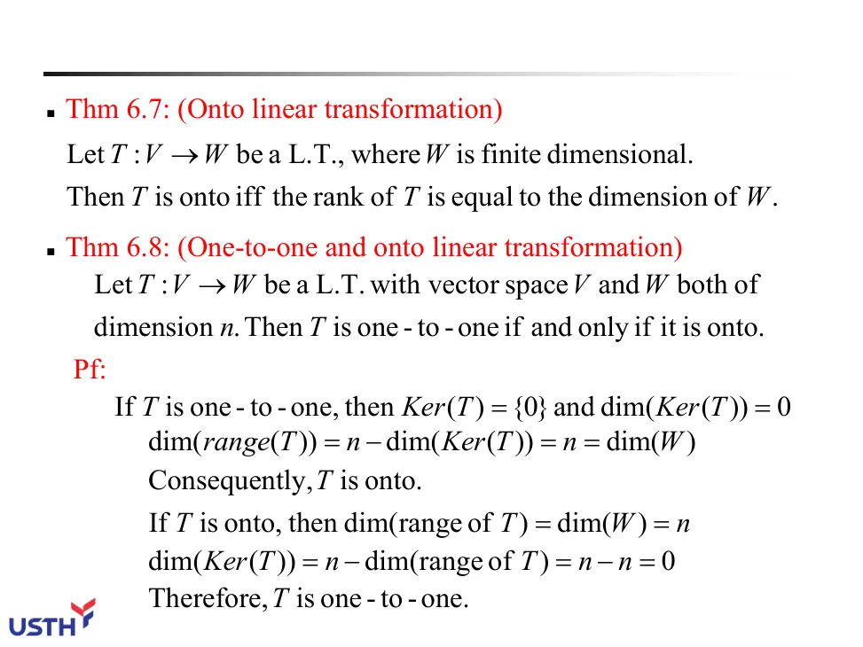
Theorem 6.7. For $T:V\to W$ with $W$ finite-dimensional: $T$ is onto iff $\operatorname{rank}(T)=\dim(W)$. Theorem 6.8. If $\dim V=\dim W=n$, then $T$ is one-to-one iff it is onto. Proof of 6.8: if $T$ is one-to-one then $\ker T=\{0\}$, $\dim\operatorname{range}=n-0=n=\dim W$, so $T$ is onto; if $T$ is onto then $\dim\ker=n-n=0$, so $\ker T=\{0\}$ and $T$ is one-to-one.
Định lý 6.7. Với $T:V\to W$, $W$ hữu hạn chiều: $T$ toàn ánh khi và chỉ khi $\operatorname{rank}(T)=\dim(W)$. Định lý 6.8. Nếu $\dim V=\dim W=n$ thì $T$ đơn ánh khi và chỉ khi $T$ toàn ánh. Chứng minh 6.8: nếu $T$ đơn ánh thì $\ker T=\{0\}$, $\dim\operatorname{range}=n-0=n=\dim W$ nên $T$ toàn ánh; nếu $T$ toàn ánh thì $\dim\ker=n-n=0$ nên $\ker T=\{0\}$ và $T$ đơn ánh.
Classify $T(x)=A_1x$ and $T(x)=A_2x$ for $A_1=\begin{bmatrix}1&2&0\\0&1&1\\1&3&1\end{bmatrix}$, $A_2=\begin{bmatrix}1&2&0\\0&1&1\\1&3&2\end{bmatrix}$.
Phân loại $T(x)=A_1x$ và $T(x)=A_2x$ với $A_1=\begin{bmatrix}1&2&0\\0&1&1\\1&3&1\end{bmatrix}$, $A_2=\begin{bmatrix}1&2&0\\0&1&1\\1&3&2\end{bmatrix}$.
Answer and solution · Đáp án và lời giải
Answer · Đáp án: $A_1$: neither ($\det=0$, rank $2$); $A_2$: both ($\det=1$)
Both maps are $\mathbb R^3\to\mathbb R^3$, so one-to-one $\iff$ onto (Theorem 6.8) and both hold iff $\det\ne0$. $\det A_1=0$ (row $3$ = row $1$ + row $2$), rank $2<3$: neither. $\det A_2=1\ne0$: one-to-one and onto.
Cả hai ánh xạ đều là $\mathbb R^3\to\mathbb R^3$ nên đơn ánh $\iff$ toàn ánh (Định lý 6.8) và cả hai đúng khi $\det\ne0$. $\det A_1=0$ (hàng $3$ = hàng $1$ + hàng $2$), hạng $2<3$: không đơn ánh cũng không toàn ánh. $\det A_2=1\ne0$: vừa đơn ánh vừa toàn ánh.
Example 11: rank, nullity, one-to-one, onto · Ví dụ 11: hạng, nullity, đơn ánh, toàn ánh
★★★ Core · Cốt lõi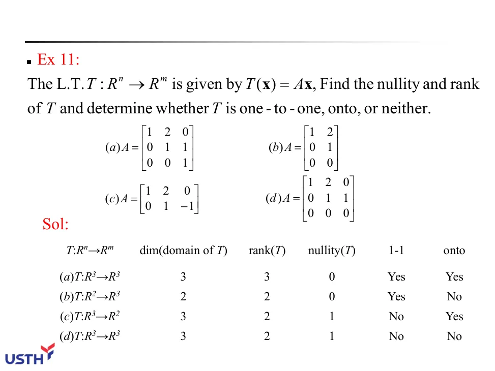
For $T(x)=Ax$ the slide classifies four matrices: (a) $\begin{bmatrix}1&2&0\\0&1&1\\0&0&1\end{bmatrix}$ ($\mathbb R^3\to\mathbb R^3$): rank $3$, nullity $0$, one-to-one and onto; (b) $\begin{bmatrix}1&2\\0&1\\0&0\end{bmatrix}$ ($\mathbb R^2\to\mathbb R^3$): rank $2$, nullity $0$, one-to-one, not onto; (c) $\begin{bmatrix}1&2&0\\0&1&-1\end{bmatrix}$ ($\mathbb R^3\to\mathbb R^2$): rank $2$, nullity $1$, onto, not one-to-one; (d) $\begin{bmatrix}1&2&0\\0&1&1\\0&0&0\end{bmatrix}$ ($\mathbb R^3\to\mathbb R^3$): rank $2$, nullity $1$, neither. Rule: one-to-one iff nullity $0$; onto iff rank $=\dim(\text{codomain})$.
Với $T(x)=Ax$ slide phân loại bốn ma trận: (a) $\begin{bmatrix}1&2&0\\0&1&1\\0&0&1\end{bmatrix}$ ($\mathbb R^3\to\mathbb R^3$): hạng $3$, nullity $0$, đơn ánh và toàn ánh; (b) $\begin{bmatrix}1&2\\0&1\\0&0\end{bmatrix}$ ($\mathbb R^2\to\mathbb R^3$): hạng $2$, nullity $0$, đơn ánh, không toàn ánh; (c) $\begin{bmatrix}1&2&0\\0&1&-1\end{bmatrix}$ ($\mathbb R^3\to\mathbb R^2$): hạng $2$, nullity $1$, toàn ánh, không đơn ánh; (d) $\begin{bmatrix}1&2&0\\0&1&1\\0&0&0\end{bmatrix}$ ($\mathbb R^3\to\mathbb R^3$): hạng $2$, nullity $1$, không đơn ánh cũng không toàn ánh. Quy tắc: đơn ánh khi nullity $0$; toàn ánh khi hạng $=\dim(\text{miền đích})$.
Classify (one-to-one / onto) $A=\begin{bmatrix}1&0&2\\0&1&1\end{bmatrix}$, $B=\begin{bmatrix}1&0\\0&1\\1&1\end{bmatrix}$ and $C=\begin{bmatrix}1&1\\2&2\end{bmatrix}$ as maps $x\mapsto Mx$.
Phân loại (đơn ánh / toàn ánh) $A=\begin{bmatrix}1&0&2\\0&1&1\end{bmatrix}$, $B=\begin{bmatrix}1&0\\0&1\\1&1\end{bmatrix}$ và $C=\begin{bmatrix}1&1\\2&2\end{bmatrix}$ như các ánh xạ $x\mapsto Mx$.
Answer and solution · Đáp án và lời giải
Answer · Đáp án: $A$ onto, not one-to-one; $B$ one-to-one, not onto; $C$ neither
$A:\mathbb R^3\to\mathbb R^2$ has rank $2=\dim\mathbb R^2$ (onto) and nullity $1$ (not one-to-one). $B:\mathbb R^2\to\mathbb R^3$ has rank $2$, nullity $0$ (one-to-one) but $2<3$ (not onto). $C:\mathbb R^2\to\mathbb R^2$ has rank $1<2$ and nullity $1$: neither.
$A:\mathbb R^3\to\mathbb R^2$ có hạng $2=\dim\mathbb R^2$ (toàn ánh) và nullity $1$ (không đơn ánh). $B:\mathbb R^2\to\mathbb R^3$ có hạng $2$, nullity $0$ (đơn ánh) nhưng $2<3$ (không toàn ánh). $C:\mathbb R^2\to\mathbb R^2$ có hạng $1<2$ và nullity $1$: không đơn ánh cũng không toàn ánh.
Isomorphisms and Theorem 6.9 · Đẳng cấu và Định lý 6.9
★★★ Core · Cốt lõi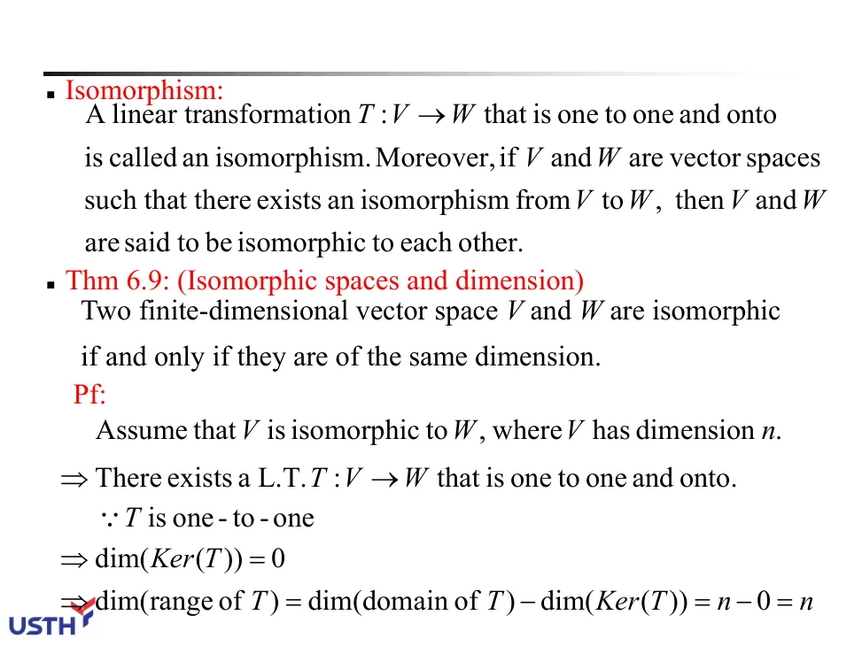
A linear transformation $T:V\to W$ that is one-to-one and onto is an isomorphism; if one exists, $V$ and $W$ are isomorphic. Theorem 6.9. Two finite-dimensional vector spaces $V$ and $W$ are isomorphic iff they have the same dimension. Proof of ($\Rightarrow$): let $\dim V=n$ and $T:V\to W$ an isomorphism. One-to-one gives $\ker T=\{0\}$ so $\dim\operatorname{range}=n-0=n$; onto gives $\operatorname{range}=W$, hence $\dim W=n$.
Phép biến đổi tuyến tính $T:V\to W$ vừa đơn ánh vừa toàn ánh là đẳng cấu; nếu tồn tại thì $V$ và $W$ gọi là đẳng cấu với nhau. Định lý 6.9. Hai không gian vectơ hữu hạn chiều $V$ và $W$ đẳng cấu khi và chỉ khi có cùng số chiều. Chứng minh ($\Rightarrow$): giả sử $\dim V=n$ và $T:V\to W$ là đẳng cấu. Đơn ánh cho $\ker T=\{0\}$ nên $\dim\operatorname{range}=n-0=n$; toàn ánh cho $\operatorname{range}=W$, vậy $\dim W=n$.
Is $\mathbb R^2$ isomorphic to the plane $W=\{x+y+z=0\}\subset\mathbb R^3$? Is $\mathbb R^2$ isomorphic to $\mathbb R^3$?
$\mathbb R^2$ có đẳng cấu với mặt phẳng $W=\{x+y+z=0\}\subset\mathbb R^3$ không? $\mathbb R^2$ có đẳng cấu với $\mathbb R^3$ không?
Answer and solution · Đáp án và lời giải
Answer · Đáp án: yes ($\dim W=2$); no ($2\ne3$)
$W$ is the kernel of $x+y+z$: one equation in three unknowns gives $\dim W=2=\dim\mathbb R^2$, so they are isomorphic. $\dim\mathbb R^3=3\ne2$, so $\mathbb R^2\not\cong\mathbb R^3$ (Theorem 6.9).
$W$ là hạt nhân của $x+y+z$: một phương trình ba ẩn cho $\dim W=2=\dim\mathbb R^2$ nên chúng đẳng cấu. $\dim\mathbb R^3=3\ne2$ nên $\mathbb R^2\not\cong\mathbb R^3$ (Định lý 6.9).
Theorem 6.9: the converse · Định lý 6.9: chiều ngược lại
★★★ Core · Cốt lõi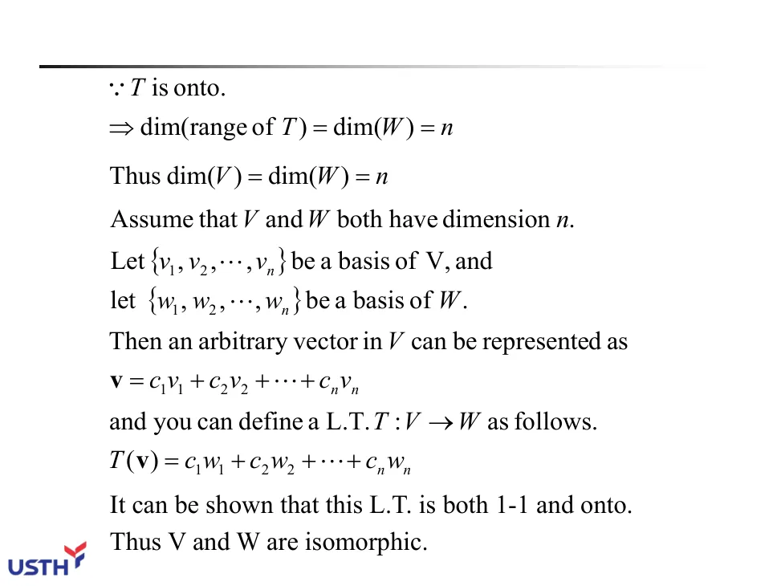
($\Leftarrow$) Assume $\dim V=\dim W=n$. Let $\{v_1,\dots,v_n\}$ be a basis of $V$ and $\{w_1,\dots,w_n\}$ a basis of $W$. Every $v\in V$ is $v=c_1v_1+\cdots+c_nv_n$; define $T(v)=c_1w_1+\cdots+c_nw_n$. This $T$ is linear, one-to-one and onto: it matches coordinates, so $V$ and $W$ are isomorphic. Every $n$-dimensional real vector space is just $\mathbb R^n$ in disguise.
($\Leftarrow$) Giả sử $\dim V=\dim W=n$. Cho $\{v_1,\dots,v_n\}$ là cơ sở của $V$ và $\{w_1,\dots,w_n\}$ là cơ sở của $W$. Mọi $v\in V$ có dạng $v=c_1v_1+\cdots+c_nv_n$; định nghĩa $T(v)=c_1w_1+\cdots+c_nw_n$. $T$ này tuyến tính, đơn ánh và toàn ánh: nó ghép các tọa độ, nên $V$ và $W$ đẳng cấu. Mọi không gian vectơ thực $n$ chiều chỉ là $\mathbb R^n$ “cải trang”.
Write an explicit isomorphism $\mathbb R^2\to W=\{x+y+z=0\}$ using the basis $w_1=(1,-1,0)$, $w_2=(0,1,-1)$ of $W$.
Viết một đẳng cấu tường minh $\mathbb R^2\to W=\{x+y+z=0\}$ dùng cơ sở $w_1=(1,-1,0)$, $w_2=(0,1,-1)$ của $W$.
Answer and solution · Đáp án và lời giải
Answer · Đáp án: $T(a,b)=a(1,-1,0)+b(0,1,-1)=(a,\ b-a,\ -b)$
Send the coordinates $(a,b)$ to $aw_1+bw_2=(a,\ -a+b,\ -b)$. The sum of the entries is $a-a+b-b=0$, so the image lies in $W$; the two columns are independent (rank $2$), so $T$ is one-to-one, and onto $W$ because $\dim W=2$.
Đưa tọa độ $(a,b)$ tới $aw_1+bw_2=(a,\ -a+b,\ -b)$. Tổng các phần tử là $a-a+b-b=0$ nên ảnh nằm trong $W$; hai cột độc lập (hạng $2$) nên $T$ đơn ánh, và toàn ánh lên $W$ vì $\dim W=2$.
Homework 1: one-to-one, onto or isomorphism? · Bài tập về nhà 1: đơn ánh, toàn ánh hay đẳng cấu?
★★ Important · Quan trọng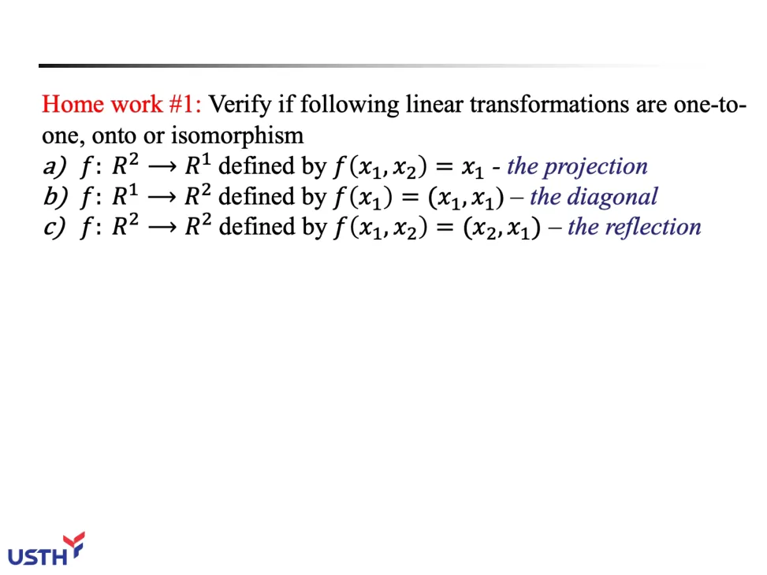
Homework 1 (lecturer's). Decide whether each linear transformation is one-to-one, onto or an isomorphism: (a) $f:\mathbb R^2\to\mathbb R^1$, $f(x_1,x_2)=x_1$ (the projection); (b) $f:\mathbb R^1\to\mathbb R^2$, $f(x_1)=(x_1,x_1)$ (the diagonal); (c) $f:\mathbb R^2\to\mathbb R^2$, $f(x_1,x_2)=(x_2,x_1)$ (the reflection). Method: compute the rank and nullity from the standard matrix.
Bài tập về nhà 1 (của thầy). Xét mỗi phép biến đổi tuyến tính là đơn ánh, toàn ánh hay đẳng cấu: (a) $f:\mathbb R^2\to\mathbb R^1$, $f(x_1,x_2)=x_1$ (phép chiếu); (b) $f:\mathbb R^1\to\mathbb R^2$, $f(x_1)=(x_1,x_1)$ (đường chéo); (c) $f:\mathbb R^2\to\mathbb R^2$, $f(x_1,x_2)=(x_2,x_1)$ (phép phản chiếu). Phương pháp: tính hạng và nullity từ ma trận chuẩn.
Solve Homework 1: classify (a), (b), (c).
Giải Bài tập về nhà 1: phân loại (a), (b), (c).
Answer and solution · Đáp án và lời giải
Answer · Đáp án: (a) onto, not one-to-one; (b) one-to-one, not onto; (c) isomorphism
(a) Matrix $[1\ 0]$: rank $1=\dim\mathbb R^1$ (onto), nullity $1$ (kernel = the $x_2$-axis): not one-to-one. (b) Matrix $\begin{bmatrix}1\\1\end{bmatrix}$: nullity $0$ (one-to-one) but rank $1<2$ (the range is the diagonal line): not onto. (c) Matrix $\begin{bmatrix}0&1\\1&0\end{bmatrix}$ with $\det=-1\ne0$: one-to-one and onto, an isomorphism.
(a) Ma trận $[1\ 0]$: hạng $1=\dim\mathbb R^1$ (toàn ánh), nullity $1$ (hạt nhân = trục $x_2$): không đơn ánh. (b) Ma trận $\begin{bmatrix}1\\1\end{bmatrix}$: nullity $0$ (đơn ánh) nhưng hạng $1<2$ (miền ảnh là đường chéo): không toàn ánh. (c) Ma trận $\begin{bmatrix}0&1\\1&0\end{bmatrix}$ với $\det=-1\ne0$: vừa đơn ánh vừa toàn ánh, là đẳng cấu.
Example 12: isomorphic vector spaces · Ví dụ 12: các không gian vectơ đẳng cấu
★★ Important · Quan trọng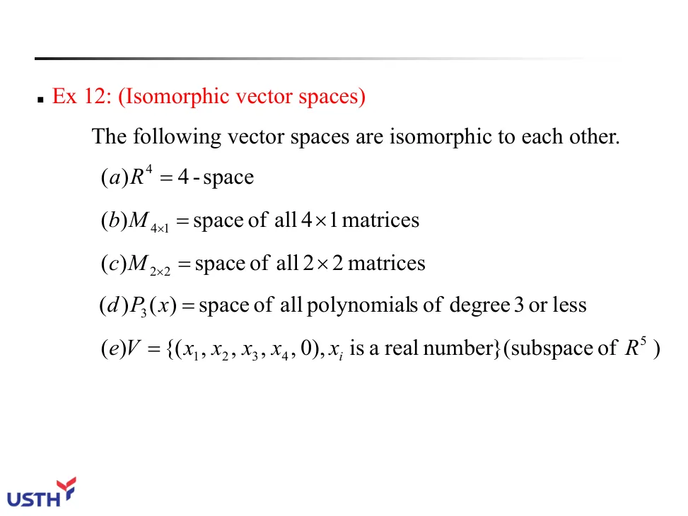
All of these spaces are isomorphic to one another because each has dimension $4$: (a) $\mathbb R^4$; (b) $M_{4\times1}$, the $4\times1$ matrices; (c) $M_{2\times2}$, the $2\times2$ matrices; (d) $P_3(x)$, the polynomials of degree $\le3$; (e) $V=\{(x_1,x_2,x_3,x_4,0)\}$, a subspace of $\mathbb R^5$. Matrices, polynomials and vectors of the same dimension carry exactly the same linear-algebra information.
Tất cả các không gian này đẳng cấu với nhau vì mỗi không gian có số chiều $4$: (a) $\mathbb R^4$; (b) $M_{4\times1}$, các ma trận $4\times1$; (c) $M_{2\times2}$, các ma trận $2\times2$; (d) $P_3(x)$, các đa thức bậc $\le3$; (e) $V=\{(x_1,x_2,x_3,x_4,0)\}$, một không gian con của $\mathbb R^5$. Ma trận, đa thức và vectơ cùng số chiều mang cùng một thông tin đại số tuyến tính.
Which of $\mathbb R^6$, $M_{2\times3}$, $M_{3\times2}$, $P_5(x)$ and $\{x\in\mathbb R^6\mid x_1=x_2\}$ are isomorphic to each other?
Trong $\mathbb R^6$, $M_{2\times3}$, $M_{3\times2}$, $P_5(x)$ và $\{x\in\mathbb R^6\mid x_1=x_2\}$, những không gian nào đẳng cấu với nhau?
Answer and solution · Đáp án và lời giải
Answer · Đáp án: the first four ($\dim6$); the last has $\dim5$
$\dim\mathbb R^6=6$; $M_{2\times3}$ and $M_{3\times2}$ have $2\cdot3=6$ entries; $P_5$ has coefficients $a_0,\dots,a_5$, so $\dim6$. The subspace $x_1=x_2$ has one equation, so $\dim=6-1=5$: not isomorphic to the others.
$\dim\mathbb R^6=6$; $M_{2\times3}$ và $M_{3\times2}$ có $2\cdot3=6$ phần tử; $P_5$ có các hệ số $a_0,\dots,a_5$ nên $\dim6$. Không gian con $x_1=x_2$ có một phương trình nên $\dim=6-1=5$: không đẳng cấu với các không gian còn lại.
6.3 Why use a matrix for a linear transformation? · 6.3 Vì sao dùng ma trận cho phép biến đổi tuyến tính?
★★ Important · Quan trọng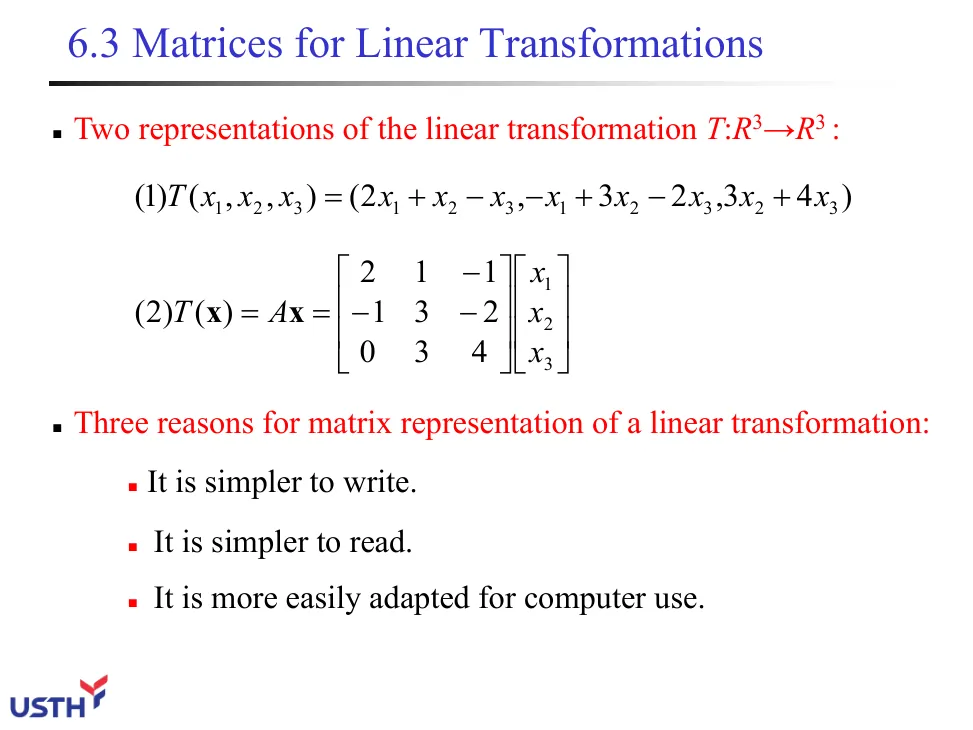
Two representations of $T:\mathbb R^3\to\mathbb R^3$: (1) $T(x_1,x_2,x_3)=(2x_1+x_2-x_3,\ -x_1+3x_2-2x_3,\ 3x_2+4x_3)$; (2) $T(x)=Ax$ with $A=\begin{bmatrix}2&1&-1\\-1&3&-2\\0&3&4\end{bmatrix}$. Three reasons for the matrix form: it is simpler to write, simpler to read, and more easily adapted for computer use.
Hai cách biểu diễn của $T:\mathbb R^3\to\mathbb R^3$: (1) $T(x_1,x_2,x_3)=(2x_1+x_2-x_3,\ -x_1+3x_2-2x_3,\ 3x_2+4x_3)$; (2) $T(x)=Ax$ với $A=\begin{bmatrix}2&1&-1\\-1&3&-2\\0&3&4\end{bmatrix}$. Ba lý do dùng dạng ma trận: viết gọn hơn, đọc dễ hơn, và dễ đưa vào máy tính hơn.
Evaluate $T(1,2,3)$ for the slide's $T$ using the formula and using the matrix.
Tính $T(1,2,3)$ cho $T$ của slide bằng công thức và bằng ma trận.
Answer and solution · Đáp án và lời giải
Answer · Đáp án: $T(1,2,3)=(1,-1,18)$
Formula: $(2+2-3,\ -1+6-6,\ 6+12)=(1,-1,18)$. Matrix: $A\begin{bmatrix}1\\2\\3\end{bmatrix}=\begin{bmatrix}2+2-3\\-1+6-6\\0+6+12\end{bmatrix}$, the same vector.
Công thức: $(2+2-3,\ -1+6-6,\ 6+12)=(1,-1,18)$. Ma trận: $A\begin{bmatrix}1\\2\\3\end{bmatrix}=\begin{bmatrix}2+2-3\\-1+6-6\\0+6+12\end{bmatrix}$, cùng một vectơ.
Theorem 6.10: the standard matrix · Định lý 6.10: ma trận chuẩn
★★★ Core · Cốt lõi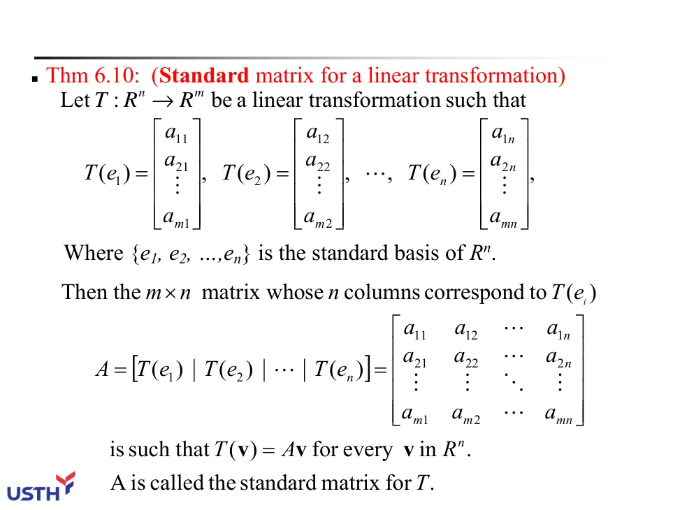
Theorem 6.10. Let $T:\mathbb R^n\to\mathbb R^m$ be linear with $T(e_1)=\begin{bmatrix}a_{11}\\\vdots\\a_{m1}\end{bmatrix},\dots,T(e_n)=\begin{bmatrix}a_{1n}\\\vdots\\a_{mn}\end{bmatrix}$. Then the $m\times n$ matrix whose columns are $T(e_1),\dots,T(e_n)$, $A=[T(e_1)\mid T(e_2)\mid\cdots\mid T(e_n)]$, is the standard matrix of $T$ and satisfies $T(v)=Av$ for every $v\in\mathbb R^n$ ($\{e_1,\dots,e_n\}$ is the standard basis).
Định lý 6.10. Cho $T:\mathbb R^n\to\mathbb R^m$ tuyến tính với $T(e_1)=\begin{bmatrix}a_{11}\\\vdots\\a_{m1}\end{bmatrix},\dots,T(e_n)=\begin{bmatrix}a_{1n}\\\vdots\\a_{mn}\end{bmatrix}$. Khi đó ma trận $m\times n$ có các cột là $T(e_1),\dots,T(e_n)$, $A=[T(e_1)\mid T(e_2)\mid\cdots\mid T(e_n)]$, là ma trận chuẩn của $T$ và thỏa $T(v)=Av$ với mọi $v\in\mathbb R^n$ ($\{e_1,\dots,e_n\}$ là cơ sở chuẩn).
The one-line recipe of the chapter: apply $T$ to each standard basis vector and write the results as columns.
Công thức một dòng của chương: áp dụng $T$ cho từng vectơ cơ sở chuẩn và viết các kết quả thành cột.
Find the standard matrix of $T(x,y)=(x+2y,\ 3x-y,\ y)$ and check $T(v)=Av$.
Tìm ma trận chuẩn của $T(x,y)=(x+2y,\ 3x-y,\ y)$ và kiểm tra $T(v)=Av$.
Answer and solution · Đáp án và lời giải
Answer · Đáp án: $A=\begin{bmatrix}1&2\\3&-1\\0&1\end{bmatrix}$
$T(e_1)=T(1,0)=(1,3,0)$ and $T(e_2)=T(0,1)=(2,-1,1)$; these are the columns. Multiplying $A\begin{bmatrix}x\\y\end{bmatrix}=\begin{bmatrix}x+2y\\3x-y\\y\end{bmatrix}$ recovers the formula.
$T(e_1)=T(1,0)=(1,3,0)$ và $T(e_2)=T(0,1)=(2,-1,1)$; đó là các cột. Nhân $A\begin{bmatrix}x\\y\end{bmatrix}=\begin{bmatrix}x+2y\\3x-y\\y\end{bmatrix}$ ra lại công thức.
Theorem 6.10: proof, part 1 · Định lý 6.10: chứng minh, phần 1
★★ Important · Quan trọng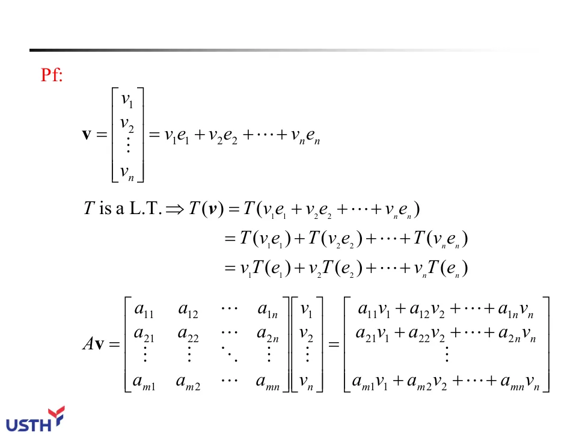
Write $v=\begin{bmatrix}v_1\\\vdots\\v_n\end{bmatrix}=v_1e_1+v_2e_2+\cdots+v_ne_n$. Because $T$ is linear, $T(v)=v_1T(e_1)+v_2T(e_2)+\cdots+v_nT(e_n)$ (Theorem 6.1(4)). On the other side, the matrix–vector product $Av$ with the columns $T(e_i)$ is $\begin{bmatrix}a_{11}v_1+a_{12}v_2+\cdots+a_{1n}v_n\\\vdots\\a_{m1}v_1+\cdots+a_{mn}v_n\end{bmatrix}$.
Viết $v=\begin{bmatrix}v_1\\\vdots\\v_n\end{bmatrix}=v_1e_1+v_2e_2+\cdots+v_ne_n$. Vì $T$ tuyến tính, $T(v)=v_1T(e_1)+v_2T(e_2)+\cdots+v_nT(e_n)$ (Định lý 6.1(4)). Mặt khác, tích ma trận–vectơ $Av$ với các cột $T(e_i)$ là $\begin{bmatrix}a_{11}v_1+a_{12}v_2+\cdots+a_{1n}v_n\\\vdots\\a_{m1}v_1+\cdots+a_{mn}v_n\end{bmatrix}$.
A linear $T:\mathbb R^3\to\mathbb R^2$ has $T(e_1)=(1,2)$, $T(e_2)=(0,1)$, $T(e_3)=(3,-1)$. Find a formula for $T(x,y,z)$.
$T:\mathbb R^3\to\mathbb R^2$ tuyến tính có $T(e_1)=(1,2)$, $T(e_2)=(0,1)$, $T(e_3)=(3,-1)$. Tìm công thức của $T(x,y,z)$.
Answer and solution · Đáp án và lời giải
Answer · Đáp án: $T(x,y,z)=(x+3z,\ 2x+y-z)$
$T(x,y,z)=xT(e_1)+yT(e_2)+zT(e_3)=x(1,2)+y(0,1)+z(3,-1)=(x+3z,\ 2x+y-z)$.
$T(x,y,z)=xT(e_1)+yT(e_2)+zT(e_3)=x(1,2)+y(0,1)+z(3,-1)=(x+3z,\ 2x+y-z)$.
Theorem 6.10: proof, part 2 · Định lý 6.10: chứng minh, phần 2
★★ Important · Quan trọng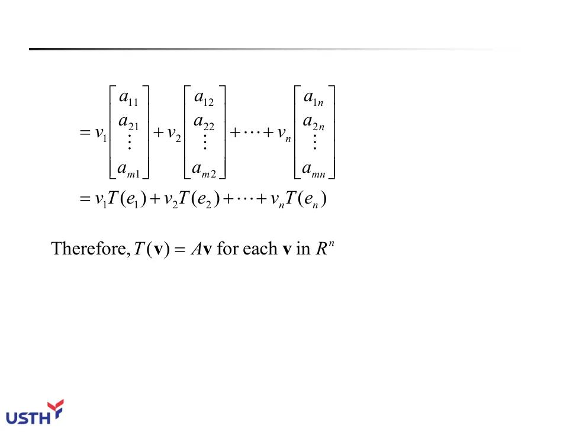
The two expressions agree: $v_1\begin{bmatrix}a_{11}\\\vdots\\a_{m1}\end{bmatrix}+\cdots+v_n\begin{bmatrix}a_{1n}\\\vdots\\a_{mn}\end{bmatrix}=v_1T(e_1)+\cdots+v_nT(e_n)$. Therefore $T(v)=Av$ for each $v\in\mathbb R^n$. The standard matrix is also unique: $Ae_i$ is the $i$-th column of $A$, so two matrices that agree on all $e_i$ are equal.
Hai biểu thức trùng nhau: $v_1\begin{bmatrix}a_{11}\\\vdots\\a_{m1}\end{bmatrix}+\cdots+v_n\begin{bmatrix}a_{1n}\\\vdots\\a_{mn}\end{bmatrix}=v_1T(e_1)+\cdots+v_nT(e_n)$. Do đó $T(v)=Av$ với mỗi $v\in\mathbb R^n$. Ma trận chuẩn cũng duy nhất: $Ae_i$ là cột thứ $i$ của $A$ nên hai ma trận trùng nhau trên mọi $e_i$ thì bằng nhau.
A linear $T:\mathbb R^2\to\mathbb R^2$ has $T(1,2)=(3,1)$ and $T(0,1)=(1,1)$. Find its standard matrix.
$T:\mathbb R^2\to\mathbb R^2$ tuyến tính có $T(1,2)=(3,1)$ và $T(0,1)=(1,1)$. Tìm ma trận chuẩn của nó.
Answer and solution · Đáp án và lời giải
Answer · Đáp án: $A=\begin{bmatrix}1&1\\-1&1\end{bmatrix}$
$e_1=(1,2)-2(0,1)$, so $T(e_1)=(3,1)-2(1,1)=(1,-1)$; and $T(e_2)=(1,1)$. The columns $(1,-1)$ and $(1,1)$ give $A$. Check: $A(1,2)=(3,1)$ ✓.
$e_1=(1,2)-2(0,1)$ nên $T(e_1)=(3,1)-2(1,1)=(1,-1)$; và $T(e_2)=(1,1)$. Các cột $(1,-1)$ và $(1,1)$ cho $A$. Kiểm tra: $A(1,2)=(3,1)$ ✓.
Example 1: finding a standard matrix · Ví dụ 1: tìm ma trận chuẩn
★★★ Core · Cốt lõi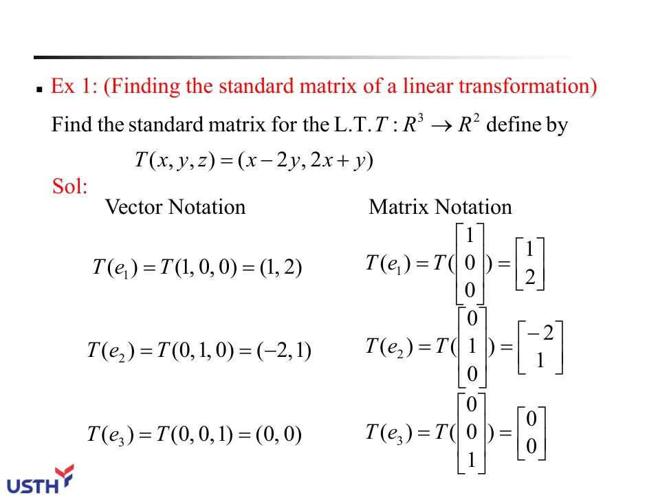
Find the standard matrix of $T:\mathbb R^3\to\mathbb R^2$, $T(x,y,z)=(x-2y,\ 2x+y)$. Apply $T$ to the basis: $T(e_1)=T(1,0,0)=(1,2)$, $T(e_2)=T(0,1,0)=(-2,1)$, $T(e_3)=T(0,0,1)=(0,0)$. Written as columns: $A=\begin{bmatrix}1&-2&0\\2&1&0\end{bmatrix}$. (The $z$ column is zero because $T$ ignores $z$.)
Tìm ma trận chuẩn của $T:\mathbb R^3\to\mathbb R^2$, $T(x,y,z)=(x-2y,\ 2x+y)$. Áp dụng $T$ cho cơ sở: $T(e_1)=T(1,0,0)=(1,2)$, $T(e_2)=T(0,1,0)=(-2,1)$, $T(e_3)=T(0,0,1)=(0,0)$. Viết thành cột: $A=\begin{bmatrix}1&-2&0\\2&1&0\end{bmatrix}$. (Cột $z$ bằng không vì $T$ bỏ qua $z$.)
Find the standard matrix of $T(x,y,z)=(3x-y,\ z,\ x+y+z)$ and compute $T(1,2,3)$.
Tìm ma trận chuẩn của $T(x,y,z)=(3x-y,\ z,\ x+y+z)$ và tính $T(1,2,3)$.
Answer and solution · Đáp án và lời giải
Answer · Đáp án: $A=\begin{bmatrix}3&-1&0\\0&0&1\\1&1&1\end{bmatrix}$; $T(1,2,3)=(1,3,6)$
$T(e_1)=(3,0,1)$, $T(e_2)=(-1,0,1)$, $T(e_3)=(0,1,1)$ are the columns. $T(1,2,3)=(3-2,\ 3,\ 6)=(1,3,6)=A(1,2,3)^T$.
$T(e_1)=(3,0,1)$, $T(e_2)=(-1,0,1)$, $T(e_3)=(0,1,1)$ là các cột. $T(1,2,3)=(3-2,\ 3,\ 6)=(1,3,6)=A(1,2,3)^T$.
Example 1: checking the standard matrix · Ví dụ 1: kiểm tra ma trận chuẩn
★★ Important · Quan trọng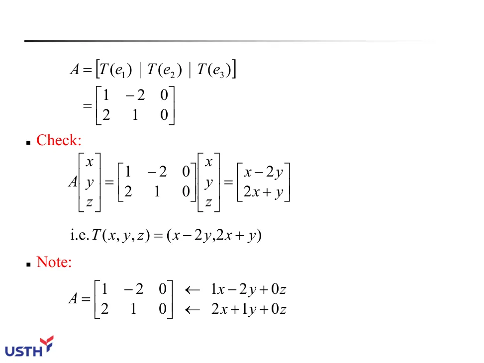
Check: $A\begin{bmatrix}x\\y\\z\end{bmatrix}=\begin{bmatrix}1&-2&0\\2&1&0\end{bmatrix}\begin{bmatrix}x\\y\\z\end{bmatrix}=\begin{bmatrix}x-2y\\2x+y\end{bmatrix}$, i.e. $T(x,y,z)=(x-2y,\ 2x+y)$ as required. Also note the two notations on the previous slide: vector notation $T(e_i)=(\dots)$ and matrix notation $T(e_i)=\begin{bmatrix}\dots\end{bmatrix}$ describe the same columns.
Kiểm tra: $A\begin{bmatrix}x\\y\\z\end{bmatrix}=\begin{bmatrix}1&-2&0\\2&1&0\end{bmatrix}\begin{bmatrix}x\\y\\z\end{bmatrix}=\begin{bmatrix}x-2y\\2x+y\end{bmatrix}$, tức $T(x,y,z)=(x-2y,\ 2x+y)$ đúng như yêu cầu. Lưu ý hai ký hiệu ở slide trước: ký hiệu vectơ $T(e_i)=(\dots)$ và ký hiệu ma trận $T(e_i)=\begin{bmatrix}\dots\end{bmatrix}$ mô tả cùng các cột.
Multiply out $A\begin{bmatrix}x\\y\\z\end{bmatrix}$ for $A=\begin{bmatrix}1&-2&0\\2&1&0\end{bmatrix}$ and say which input coordinate has no effect.
Nhân $A\begin{bmatrix}x\\y\\z\end{bmatrix}$ với $A=\begin{bmatrix}1&-2&0\\2&1&0\end{bmatrix}$ và cho biết tọa độ đầu vào nào không ảnh hưởng.
Answer and solution · Đáp án và lời giải
Answer · Đáp án: $(x-2y,\ 2x+y)$; $z$ has no effect
Row $1$: $1\cdot x-2y+0\cdot z$; row $2$: $2x+y+0\cdot z$. The zero third column means $T(e_3)=0$, i.e. $e_3\in\ker T$.
Hàng $1$: $1\cdot x-2y+0\cdot z$; hàng $2$: $2x+y+0\cdot z$. Cột thứ ba bằng không nghĩa là $T(e_3)=0$, tức $e_3\in\ker T$.
Example 2: projection onto the $x$-axis; zero and identity matrices · Ví dụ 2: phép chiếu lên trục $x$; ma trận không và đồng nhất
★★★ Core · Cốt lõi$T:\mathbb R^2\to\mathbb R^2$ projects each point onto the $x$-axis: $T(x,y)=(x,0)$. Then $A=[T(e_1)\mid T(e_2)]=[T(1,0)\mid T(0,1)]=\begin{bmatrix}1&0\\0&0\end{bmatrix}$. Notes: (1) the standard matrix of the zero transformation $\mathbb R^n\to\mathbb R^m$ is the $m\times n$ zero matrix; (2) the standard matrix of the identity $\mathbb R^n\to\mathbb R^n$ is $I_n$.
$T:\mathbb R^2\to\mathbb R^2$ chiếu mỗi điểm lên trục $x$: $T(x,y)=(x,0)$. Khi đó $A=[T(e_1)\mid T(e_2)]=[T(1,0)\mid T(0,1)]=\begin{bmatrix}1&0\\0&0\end{bmatrix}$. Lưu ý: (1) ma trận chuẩn của phép không $\mathbb R^n\to\mathbb R^m$ là ma trận không $m\times n$; (2) ma trận chuẩn của phép đồng nhất $\mathbb R^n\to\mathbb R^n$ là $I_n$.
Find the standard matrices of the reflection in the $x$-axis $(x,y)\mapsto(x,-y)$, the reflection in the line $y=x$ $(x,y)\mapsto(y,x)$, and the scaling by $3$.
Tìm ma trận chuẩn của phép phản chiếu qua trục $x$ $(x,y)\mapsto(x,-y)$, phép phản chiếu qua đường thẳng $y=x$ $(x,y)\mapsto(y,x)$ và phép co giãn hệ số $3$.
Answer and solution · Đáp án và lời giải
Answer · Đáp án: $\begin{bmatrix}1&0\\0&-1\end{bmatrix}$, $\begin{bmatrix}0&1\\1&0\end{bmatrix}$, $\begin{bmatrix}3&0\\0&3\end{bmatrix}$
Images of the basis: reflection in the $x$-axis: $e_1\mapsto(1,0)$, $e_2\mapsto(0,-1)$. Reflection in $y=x$ swaps coordinates: $e_1\mapsto(0,1)$, $e_2\mapsto(1,0)$. Scaling by $3$: $e_1\mapsto(3,0)$, $e_2\mapsto(0,3)$.
Ảnh của cơ sở: phản chiếu qua trục $x$: $e_1\mapsto(1,0)$, $e_2\mapsto(0,-1)$. Phản chiếu qua $y=x$ đổi chỗ tọa độ: $e_1\mapsto(0,1)$, $e_2\mapsto(1,0)$. Co giãn hệ số $3$: $e_1\mapsto(3,0)$, $e_2\mapsto(0,3)$.
Homework 2: standard matrices · Bài tập về nhà 2: ma trận chuẩn
★★ Important · Quan trọngHomework 2 (lecturer's). Find the standard matrix of: (a) $f:\mathbb R^2\to\mathbb R^1$, $f(x_1,x_2)=x_1$; (b) $f:\mathbb R^1\to\mathbb R^2$, $f(x_1)=(x_1,x_1)$; (c) $f:\mathbb R^2\to\mathbb R^2$, $f(x_1,x_2)=(x_2,x_1)$. Same three maps as Homework 1; now we need the matrices (and then the ranks of Homework 1 are one line each).
Bài tập về nhà 2 (của thầy). Tìm ma trận chuẩn của: (a) $f:\mathbb R^2\to\mathbb R^1$, $f(x_1,x_2)=x_1$; (b) $f:\mathbb R^1\to\mathbb R^2$, $f(x_1)=(x_1,x_1)$; (c) $f:\mathbb R^2\to\mathbb R^2$, $f(x_1,x_2)=(x_2,x_1)$. Ba ánh xạ giống Bài tập về nhà 1; giờ cần các ma trận (và khi đó hạng của Bài tập về nhà 1 chỉ cần một dòng mỗi bài).
Solve Homework 2.
Giải Bài tập về nhà 2.
Answer and solution · Đáp án và lời giải
Answer · Đáp án: (a) $[1\ \ 0]$; (b) $\begin{bmatrix}1\\1\end{bmatrix}$; (c) $\begin{bmatrix}0&1\\1&0\end{bmatrix}$
(a) $f(e_1)=1$, $f(e_2)=0$: the $1\times2$ matrix $[1\ 0]$. (b) $f(1)=(1,1)$: the $2\times1$ matrix with that column. (c) $f(e_1)=(0,1)$, $f(e_2)=(1,0)$: the swap matrix. Check each by multiplying by $(x,y)^T$ or $(x)$.
(a) $f(e_1)=1$, $f(e_2)=0$: ma trận $1\times2$ là $[1\ 0]$. (b) $f(1)=(1,1)$: ma trận $2\times1$ với cột đó. (c) $f(e_1)=(0,1)$, $f(e_2)=(1,0)$: ma trận hoán đổi. Kiểm tra từng bài bằng cách nhân với $(x,y)^T$ hoặc $(x)$.
Theorem 6.11: composition of linear transformations · Định lý 6.11: hợp của các phép biến đổi tuyến tính
★★★ Core · Cốt lõiFor $T_1:\mathbb R^n\to\mathbb R^m$ and $T_2:\mathbb R^m\to\mathbb R^p$ the composition is $T(v)=T_2(T_1(v))$ for $v\in\mathbb R^n$, written $T=T_2\circ T_1$; its domain is the domain of $T_1$. Theorem 6.11. If $T_1,T_2$ are linear with standard matrices $A_1,A_2$, then (1) $T=T_2\circ T_1$ is linear, and (2) its standard matrix is the product $A=A_2A_1$ (note the order: $A_1$ acts first, so it sits on the right).
Với $T_1:\mathbb R^n\to\mathbb R^m$ và $T_2:\mathbb R^m\to\mathbb R^p$, hợp là $T(v)=T_2(T_1(v))$ với $v\in\mathbb R^n$, ký hiệu $T=T_2\circ T_1$; miền xác định của nó là miền xác định của $T_1$. Định lý 6.11. Nếu $T_1,T_2$ tuyến tính với ma trận chuẩn $A_1,A_2$ thì (1) $T=T_2\circ T_1$ tuyến tính, và (2) ma trận chuẩn của nó là tích $A=A_2A_1$ (lưu ý thứ tự: $A_1$ tác động trước nên nằm bên phải).
For $T_1(x,y)=(x+y,\ x-y)$ and $T_2(x,y)=(2x,\ x+3y)$ find the standard matrices of $T_2\circ T_1$ and $T_1\circ T_2$.
Với $T_1(x,y)=(x+y,\ x-y)$ và $T_2(x,y)=(2x,\ x+3y)$ tìm ma trận chuẩn của $T_2\circ T_1$ và $T_1\circ T_2$.
Answer and solution · Đáp án và lời giải
Answer · Đáp án: $T_2\circ T_1$: $\begin{bmatrix}2&2\\4&-2\end{bmatrix}$; $T_1\circ T_2$: $\begin{bmatrix}3&3\\1&-3\end{bmatrix}$
$A_1=\begin{bmatrix}1&1\\1&-1\end{bmatrix}$, $A_2=\begin{bmatrix}2&0\\1&3\end{bmatrix}$. $A_2A_1=\begin{bmatrix}2&2\\1+3&1-3\end{bmatrix}=\begin{bmatrix}2&2\\4&-2\end{bmatrix}$ and $A_1A_2=\begin{bmatrix}2+1&3\\2-1&-3\end{bmatrix}=\begin{bmatrix}3&3\\1&-3\end{bmatrix}$.
$A_1=\begin{bmatrix}1&1\\1&-1\end{bmatrix}$, $A_2=\begin{bmatrix}2&0\\1&3\end{bmatrix}$. $A_2A_1=\begin{bmatrix}2&2\\1+3&1-3\end{bmatrix}=\begin{bmatrix}2&2\\4&-2\end{bmatrix}$ và $A_1A_2=\begin{bmatrix}2+1&3\\2-1&-3\end{bmatrix}=\begin{bmatrix}3&3\\1&-3\end{bmatrix}$.
Theorem 6.11: proof; order matters · Định lý 6.11: chứng minh; thứ tự quan trọng
★★★ Core · Cốt lõiProof. (1) $$\begin{aligned}T(u+v)&=T_2(T_1(u+v))=T_2(T_1(u)+T_1(v))\\&=T_2(T_1(u))+T_2(T_1(v))=T(u)+T(v),\end{aligned}$$ and $T(cv)=T_2(cT_1(v))=cT_2(T_1(v))=cT(v)$. (2) $T(v)=T_2(T_1(v))=T_2(A_1v)=A_2(A_1v)=(A_2A_1)v$. Note: $T_2\circ T_1\ne T_1\circ T_2$ in general, just as $A_2A_1\ne A_1A_2$.
Chứng minh. (1) $$\begin{aligned}T(u+v)&=T_2(T_1(u+v))=T_2(T_1(u)+T_1(v))\\&=T_2(T_1(u))+T_2(T_1(v))=T(u)+T(v),\end{aligned}$$ và $T(cv)=T_2(cT_1(v))=cT_2(T_1(v))=cT(v)$. (2) $T(v)=T_2(T_1(v))=T_2(A_1v)=A_2(A_1v)=(A_2A_1)v$. Lưu ý: nói chung $T_2\circ T_1\ne T_1\circ T_2$, giống như $A_2A_1\ne A_1A_2$.
Let $R$ be the rotation by $90^\circ$ and $F$ the reflection in the $x$-axis. Show that $R\circ F\ne F\circ R$.
Gọi $R$ là phép quay $90^\circ$ và $F$ là phép phản chiếu qua trục $x$. Chứng tỏ $R\circ F\ne F\circ R$.
Answer and solution · Đáp án và lời giải
Answer · Đáp án: $RF=\begin{bmatrix}0&1\\1&0\end{bmatrix}\ne FR=\begin{bmatrix}0&-1\\-1&0\end{bmatrix}$
With $R=\begin{bmatrix}0&-1\\1&0\end{bmatrix}$ and $F=\begin{bmatrix}1&0\\0&-1\end{bmatrix}$: $RF=\begin{bmatrix}0&1\\1&0\end{bmatrix}$ (reflect in $y=x$) but $FR=\begin{bmatrix}0&-1\\-1&0\end{bmatrix}$ (reflect in $y=-x$). The two composites differ.
Với $R=\begin{bmatrix}0&-1\\1&0\end{bmatrix}$ và $F=\begin{bmatrix}1&0\\0&-1\end{bmatrix}$: $RF=\begin{bmatrix}0&1\\1&0\end{bmatrix}$ (phản chiếu qua $y=x$) nhưng $FR=\begin{bmatrix}0&-1\\-1&0\end{bmatrix}$ (phản chiếu qua $y=-x$). Hai phép hợp khác nhau.
Example 3: the standard matrices $A_1$ and $A_2$ · Ví dụ 3: các ma trận chuẩn $A_1$ và $A_2$
★★★ Core · Cốt lõi$T_1,T_2:\mathbb R^3\to\mathbb R^3$ with $T_1(x,y,z)=(2x+y,\ 0,\ x+z)$ and $T_2(x,y,z)=(x-y,\ z,\ y)$. Find the standard matrices for $T=T_2\circ T_1$ and $T'=T_1\circ T_2$. First the matrices (read the coefficients of $x,y,z$ in each component): $A_1=\begin{bmatrix}2&1&0\\0&0&0\\1&0&1\end{bmatrix}$ and $A_2=\begin{bmatrix}1&-1&0\\0&0&1\\0&1&0\end{bmatrix}$.
$T_1,T_2:\mathbb R^3\to\mathbb R^3$ với $T_1(x,y,z)=(2x+y,\ 0,\ x+z)$ và $T_2(x,y,z)=(x-y,\ z,\ y)$. Tìm ma trận chuẩn của $T=T_2\circ T_1$ và $T'=T_1\circ T_2$. Trước hết các ma trận (đọc hệ số của $x,y,z$ trong mỗi thành phần): $A_1=\begin{bmatrix}2&1&0\\0&0&0\\1&0&1\end{bmatrix}$ và $A_2=\begin{bmatrix}1&-1&0\\0&0&1\\0&1&0\end{bmatrix}$.
Check $A_1$ and $A_2$ by computing $T_i(e_1),T_i(e_2),T_i(e_3)$.
Kiểm tra $A_1$ và $A_2$ bằng cách tính $T_i(e_1),T_i(e_2),T_i(e_3)$.
Answer and solution · Đáp án và lời giải
Answer · Đáp án: columns of $A_1$: $(2,0,1),(1,0,0),(0,0,1)$; columns of $A_2$: $(1,0,0),(-1,0,1),(0,1,0)$
$T_1(1,0,0)=(2,0,1)$, $T_1(0,1,0)=(1,0,0)$, $T_1(0,0,1)=(0,0,1)$; $T_2(1,0,0)=(1,0,0)$, $T_2(0,1,0)=(-1,0,1)$, $T_2(0,0,1)=(0,1,0)$. These are exactly the columns of $A_1$ and $A_2$.
$T_1(1,0,0)=(2,0,1)$, $T_1(0,1,0)=(1,0,0)$, $T_1(0,0,1)=(0,0,1)$; $T_2(1,0,0)=(1,0,0)$, $T_2(0,1,0)=(-1,0,1)$, $T_2(0,0,1)=(0,1,0)$. Đó đúng là các cột của $A_1$ và $A_2$.
Example 3: the two products · Ví dụ 3: hai tích ma trận
★★★ Core · Cốt lõi$T=T_2\circ T_1$ has $A=A_2A_1=\begin{bmatrix}1&-1&0\\0&0&1\\0&1&0\end{bmatrix}\begin{bmatrix}2&1&0\\0&0&0\\1&0&1\end{bmatrix}=\begin{bmatrix}2&1&0\\1&0&1\\0&0&0\end{bmatrix}$. $T'=T_1\circ T_2$ has $A'=A_1A_2=\begin{bmatrix}2&1&0\\0&0&0\\1&0&1\end{bmatrix}\begin{bmatrix}1&-1&0\\0&0&1\\0&1&0\end{bmatrix}=\begin{bmatrix}2&-2&1\\0&0&0\\1&0&0\end{bmatrix}$. The two results differ, confirming $T_2\circ T_1\ne T_1\circ T_2$.
$T=T_2\circ T_1$ có $A=A_2A_1=\begin{bmatrix}1&-1&0\\0&0&1\\0&1&0\end{bmatrix}\begin{bmatrix}2&1&0\\0&0&0\\1&0&1\end{bmatrix}=\begin{bmatrix}2&1&0\\1&0&1\\0&0&0\end{bmatrix}$. $T'=T_1\circ T_2$ có $A'=A_1A_2=\begin{bmatrix}2&1&0\\0&0&0\\1&0&1\end{bmatrix}\begin{bmatrix}1&-1&0\\0&0&1\\0&1&0\end{bmatrix}=\begin{bmatrix}2&-2&1\\0&0&0\\1&0&0\end{bmatrix}$. Hai kết quả khác nhau, xác nhận $T_2\circ T_1\ne T_1\circ T_2$.
Verify $T_2(T_1(1,2,3))=A\,(1,2,3)^T$ and $T_1(T_2(1,2,3))=A'(1,2,3)^T$.
Kiểm tra $T_2(T_1(1,2,3))=A\,(1,2,3)^T$ và $T_1(T_2(1,2,3))=A'(1,2,3)^T$.
Answer and solution · Đáp án và lời giải
Answer · Đáp án: $(4,4,0)$ and $(1,0,1)$
$T_1(1,2,3)=(4,0,4)$ and $T_2(4,0,4)=(4,4,0)$; also $A(1,2,3)^T=(2+2,\ 1+3,\ 0)=(4,4,0)$ ✓. $T_2(1,2,3)=(-1,3,2)$ and $T_1(-1,3,2)=(1,0,1)$; $A'(1,2,3)^T=(2-4+3,\ 0,\ 1)=(1,0,1)$ ✓.
$T_1(1,2,3)=(4,0,4)$ và $T_2(4,0,4)=(4,4,0)$; cũng có $A(1,2,3)^T=(2+2,\ 1+3,\ 0)=(4,4,0)$ ✓. $T_2(1,2,3)=(-1,3,2)$ và $T_1(-1,3,2)=(1,0,1)$; $A'(1,2,3)^T=(2-4+3,\ 0,\ 1)=(1,0,1)$ ✓.
Inverse linear transformation · Phép biến đổi tuyến tính ngược
★★★ Core · Cốt lõiIf $T_1:\mathbb R^n\to\mathbb R^n$ and $T_2:\mathbb R^n\to\mathbb R^n$ are linear with $T_2(T_1(v))=v$ and $T_1(T_2(v))=v$ for every $v$, then $T_2$ is the inverse of $T_1$ and $T_1$ is invertible. The inverse, if it exists, is unique and is denoted $T^{-1}$: it undoes what $T$ did.
Nếu $T_1:\mathbb R^n\to\mathbb R^n$ và $T_2:\mathbb R^n\to\mathbb R^n$ tuyến tính với $T_2(T_1(v))=v$ và $T_1(T_2(v))=v$ với mọi $v$ thì $T_2$ là nghịch đảo của $T_1$ và $T_1$ khả nghịch. Nghịch đảo, nếu tồn tại, là duy nhất và ký hiệu $T^{-1}$: nó hoàn tác những gì $T$ đã làm.
Find $T^{-1}$ for $T(x,y)=(x+y,\ x-y)$ and check that $T^{-1}(T(x,y))=(x,y)$.
Tìm $T^{-1}$ cho $T(x,y)=(x+y,\ x-y)$ và kiểm tra $T^{-1}(T(x,y))=(x,y)$.
Answer and solution · Đáp án và lời giải
Answer · Đáp án: $T^{-1}(x,y)=\left(\dfrac{x+y}2,\ \dfrac{x-y}2\right)$
Solving $u=x+y$, $v=x-y$ gives $x=\frac{u+v}2$, $y=\frac{u-v}2$. In matrix form $A^{-1}=\frac12\begin{bmatrix}1&1\\1&-1\end{bmatrix}$ and $A^{-1}A=I$.
Giải $u=x+y$, $v=x-y$ được $x=\frac{u+v}2$, $y=\frac{u-v}2$. Dạng ma trận: $A^{-1}=\frac12\begin{bmatrix}1&1\\1&-1\end{bmatrix}$ và $A^{-1}A=I$.
Theorem 6.12: existence of the inverse · Định lý 6.12: sự tồn tại của phép biến đổi ngược
★★★ Core · Cốt lõiTheorem 6.12. For a linear transformation $T:\mathbb R^n\to\mathbb R^n$ with standard matrix $A$ the following are equivalent: (1) $T$ is invertible; (2) $T$ is an isomorphism; (3) $A$ is invertible. Note: if $T$ is invertible with standard matrix $A$, then the standard matrix of $T^{-1}$ is $A^{-1}$. So invertibility of a transformation is decided by $\det A\ne0$.
Định lý 6.12. Với phép biến đổi tuyến tính $T:\mathbb R^n\to\mathbb R^n$ có ma trận chuẩn $A$ các mệnh đề sau tương đương: (1) $T$ khả nghịch; (2) $T$ là đẳng cấu; (3) $A$ khả nghịch. Lưu ý: nếu $T$ khả nghịch với ma trận chuẩn $A$ thì ma trận chuẩn của $T^{-1}$ là $A^{-1}$. Vậy tính khả nghịch của phép biến đổi được quyết định bởi $\det A\ne0$.
Decide which of $T(x,y,z)=(x+y,\ y+z,\ x+z)$ and $S(x,y,z)=(x+y,\ y+z,\ x-z)$ is invertible.
Xét xem $T(x,y,z)=(x+y,\ y+z,\ x+z)$ hay $S(x,y,z)=(x+y,\ y+z,\ x-z)$ khả nghịch.
Answer and solution · Đáp án và lời giải
Answer · Đáp án: $T$ invertible ($\det=2$); $S$ not ($\det=0$, kernel $\operatorname{span}\{(1,-1,1)\}$)
$\det\begin{bmatrix}1&1&0\\0&1&1\\1&0&1\end{bmatrix}=2\ne0$: $T$ is invertible. For $S$ the matrix $\begin{bmatrix}1&1&0\\0&1&1\\1&0&-1\end{bmatrix}$ has $\det=0$ and $S(1,-1,1)=(0,0,0)$, so $S$ is not one-to-one, hence not invertible.
$\det\begin{bmatrix}1&1&0\\0&1&1\\1&0&1\end{bmatrix}=2\ne0$: $T$ khả nghịch. Với $S$ ma trận $\begin{bmatrix}1&1&0\\0&1&1\\1&0&-1\end{bmatrix}$ có $\det=0$ và $S(1,-1,1)=(0,0,0)$ nên $S$ không đơn ánh, do đó không khả nghịch.
Example 4: inverse of a linear transformation (setup) · Ví dụ 4: nghịch đảo của một phép biến đổi tuyến tính (thiết lập)
★★★ Core · Cốt lõi$T:\mathbb R^3\to\mathbb R^3$, $T(x_1,x_2,x_3)=(2x_1+3x_2+x_3,\ 3x_1+3x_2+x_3,\ 2x_1+4x_2+x_3)$. Show that $T$ is invertible and find $T^{-1}$. The standard matrix is $A=\begin{bmatrix}2&3&1\\3&3&1\\2&4&1\end{bmatrix}$; to invert it row-reduce $[A\mid I_3]$ to $[I_3\mid A^{-1}]$.
$T:\mathbb R^3\to\mathbb R^3$, $T(x_1,x_2,x_3)=(2x_1+3x_2+x_3,\ 3x_1+3x_2+x_3,\ 2x_1+4x_2+x_3)$. Chứng minh $T$ khả nghịch và tìm $T^{-1}$. Ma trận chuẩn là $A=\begin{bmatrix}2&3&1\\3&3&1\\2&4&1\end{bmatrix}$; để nghịch đảo hãy rút gọn $[A\mid I_3]$ thành $[I_3\mid A^{-1}]$.
Show that the matrix of $T$ is as printed and that $T$ is invertible by computing $\det A$.
Chứng tỏ ma trận của $T$ đúng như in và $T$ khả nghịch bằng cách tính $\det A$.
Answer and solution · Đáp án và lời giải
Answer · Đáp án: $\det A=1\ne0$
Columns $T(e_1)=(2,3,2)$, $T(e_2)=(3,3,4)$, $T(e_3)=(1,1,1)$. $\det A=2(3-4)-3(3-2)+1(12-6)=-2-3+6=1\ne0$, so $A$ (and $T$) is invertible.
Các cột $T(e_1)=(2,3,2)$, $T(e_2)=(3,3,4)$, $T(e_3)=(1,1,1)$. $\det A=2(3-4)-3(3-2)+1(12-6)=-2-3+6=1\ne0$ nên $A$ (và $T$) khả nghịch.
Example 4: the inverse transformation · Ví dụ 4: phép biến đổi ngược
★★★ Core · Cốt lõiGauss–Jordan elimination gives $A^{-1}=\begin{bmatrix}-1&1&0\\-1&0&1\\6&-2&-3\end{bmatrix}$, so $T$ is invertible and $A^{-1}$ is the standard matrix of $T^{-1}$: $T^{-1}(x_1,x_2,x_3)=A^{-1}x=(-x_1+x_2,\ -x_1+x_3,\ 6x_1-2x_2-3x_3)$.
Khử Gauss–Jordan cho $A^{-1}=\begin{bmatrix}-1&1&0\\-1&0&1\\6&-2&-3\end{bmatrix}$ nên $T$ khả nghịch và $A^{-1}$ là ma trận chuẩn của $T^{-1}$: $T^{-1}(x_1,x_2,x_3)=A^{-1}x=(-x_1+x_2,\ -x_1+x_3,\ 6x_1-2x_2-3x_3)$.
Verify $AA^{-1}=I$ for the slide's matrices, and find $T^{-1}$ for $T(x,y,z)=(x+y,\ y+z,\ z)$.
Kiểm tra $AA^{-1}=I$ cho các ma trận của slide và tìm $T^{-1}$ cho $T(x,y,z)=(x+y,\ y+z,\ z)$.
Answer and solution · Đáp án và lời giải
Answer · Đáp án: $AA^{-1}=I$; $T^{-1}(x,y,z)=(x-y+z,\ y-z,\ z)$
Multiplying the two printed $3\times3$ matrices gives $I_3$. For $T(x,y,z)=(x+y,y+z,z)$ the matrix is upper triangular, with inverse $\begin{bmatrix}1&-1&1\\0&1&-1\\0&0&1\end{bmatrix}$ (back-substitute: $z=w$, $y=v-w$, $x=u-v+w$).
Nhân hai ma trận $3\times3$ đã in được $I_3$. Với $T(x,y,z)=(x+y,y+z,z)$ ma trận là tam giác trên, nghịch đảo $\begin{bmatrix}1&-1&1\\0&1&-1\\0&0&1\end{bmatrix}$ (thế ngược: $z=w$, $y=v-w$, $x=u-v+w$).
The matrix of $T$ relative to nonstandard bases · Ma trận của $T$ theo các cơ sở không chuẩn
★★★ Core · Cốt lõiLet $V,W$ be finite-dimensional with bases $B=\{v_1,\dots,v_n\}$ of $V$ and $B'$ of $W$, and $T:V\to W$ linear. If $[T(v_1)]_{B'},\dots,[T(v_n)]_{B'}$ are the coordinate columns $\begin{bmatrix}a_{11}\\\vdots\\a_{m1}\end{bmatrix},\dots,\begin{bmatrix}a_{1n}\\\vdots\\a_{mn}\end{bmatrix}$, then the $m\times n$ matrix with these $n$ columns is the matrix of $T$ relative to $B$ and $B'$. Same recipe as before, but the images are measured in the coordinates of $B'$.
Cho $V,W$ hữu hạn chiều với cơ sở $B=\{v_1,\dots,v_n\}$ của $V$ và $B'$ của $W$, và $T:V\to W$ tuyến tính. Nếu $[T(v_1)]_{B'},\dots,[T(v_n)]_{B'}$ là các cột tọa độ $\begin{bmatrix}a_{11}\\\vdots\\a_{m1}\end{bmatrix},\dots,\begin{bmatrix}a_{1n}\\\vdots\\a_{mn}\end{bmatrix}$ thì ma trận $m\times n$ có $n$ cột này là ma trận của $T$ theo $B$ và $B'$. Cùng công thức như trước, nhưng các ảnh được đo bằng tọa độ theo $B'$.
Find the matrix of $T(x,y)=(2x,\ 3y)$ relative to $B=\{(1,1),(0,1)\}$ (domain and codomain).
Tìm ma trận của $T(x,y)=(2x,\ 3y)$ theo $B=\{(1,1),(0,1)\}$ (miền xác định và miền đích).
Answer and solution · Đáp án và lời giải
Answer · Đáp án: $A=\begin{bmatrix}2&0\\1&3\end{bmatrix}$
$T(1,1)=(2,3)=2(1,1)+1(0,1)$, so $[T(v_1)]_B=(2,1)$. $T(0,1)=(0,3)=0(1,1)+3(0,1)$, so $[T(v_2)]_B=(0,3)$. The columns give $A$. (Check: $P^{-1}\operatorname{diag}(2,3)P$ with $P=\begin{bmatrix}1&0\\1&1\end{bmatrix}$ is the same.)
$T(1,1)=(2,3)=2(1,1)+1(0,1)$ nên $[T(v_1)]_B=(2,1)$. $T(0,1)=(0,3)=0(1,1)+3(0,1)$ nên $[T(v_2)]_B=(0,3)$. Các cột cho $A$. (Kiểm tra: $P^{-1}\operatorname{diag}(2,3)P$ với $P=\begin{bmatrix}1&0\\1&1\end{bmatrix}$ cho cùng kết quả.)
The coordinate formula $[T(v)]_{B'}=A[v]_B$ · Công thức tọa độ $[T(v)]_{B'}=A[v]_B$
★★★ Core · Cốt lõiThe matrix $A=\big[[T(v_1)]_{B'}\ \big|\ [T(v_2)]_{B'}\ \big|\cdots\big|\ [T(v_n)]_{B'}\big]$ is such that $[T(v)]_{B'}=A[v]_B$ for every $v\in V$; $A$ is called the matrix of $T$ relative to the bases $B$ and $B'$. In words: coordinates in $B$ go in, coordinates in $B'$ come out.
Ma trận $A=\big[[T(v_1)]_{B'}\ \big|\ [T(v_2)]_{B'}\ \big|\cdots\big|\ [T(v_n)]_{B'}\big]$ thỏa $[T(v)]_{B'}=A[v]_B$ với mọi $v\in V$; $A$ gọi là ma trận của $T$ theo các cơ sở $B$ và $B'$. Nói bằng lời: tọa độ theo $B$ đi vào, tọa độ theo $B'$ đi ra.
With $B=\{(1,1),(0,1)\}$ and the matrix $A_B=\begin{bmatrix}2&0\\1&3\end{bmatrix}$ of the previous exercise, compute $T(3,5)$ through coordinates.
Với $B=\{(1,1),(0,1)\}$ và ma trận $A_B=\begin{bmatrix}2&0\\1&3\end{bmatrix}$ của bài trước, tính $T(3,5)$ qua tọa độ.
Answer and solution · Đáp án và lời giải
Answer · Đáp án: $[v]_B=(3,2)$, $[T(v)]_B=(6,9)$, $T(3,5)=(6,15)$
$(3,5)=3(1,1)+2(0,1)$, so $[v]_B=(3,2)$. Then $[T(v)]_B=A_B[v]_B=(6,\ 3+6)=(6,9)$, i.e. $T(v)=6(1,1)+9(0,1)=(6,15)$. Direct check: $T(3,5)=(6,15)$ ✓.
$(3,5)=3(1,1)+2(0,1)$ nên $[v]_B=(3,2)$. Khi đó $[T(v)]_B=A_B[v]_B=(6,\ 3+6)=(6,9)$, tức $T(v)=6(1,1)+9(0,1)=(6,15)$. Kiểm tra trực tiếp: $T(3,5)=(6,15)$ ✓.
Example 5: a matrix relative to nonstandard bases · Ví dụ 5: ma trận theo các cơ sở không chuẩn
★★★ Core · Cốt lõi$T:\mathbb R^2\to\mathbb R^2$, $T(x_1,x_2)=(x_1+x_2,\ 2x_1-x_2)$. Find the matrix of $T$ relative to $B=\{(1,2),(-1,1)\}$ and $B'=\{(1,0),(0,1)\}$ (the standard basis). $T(1,2)=(3,0)=3(1,0)+0(0,1)$, so $[T(1,2)]_{B'}=(3,0)$; $T(-1,1)=(0,-3)=0(1,0)-3(0,1)$, so $[T(-1,1)]_{B'}=(0,-3)$. Hence $A=\begin{bmatrix}3&0\\0&-3\end{bmatrix}$.
$T:\mathbb R^2\to\mathbb R^2$, $T(x_1,x_2)=(x_1+x_2,\ 2x_1-x_2)$. Tìm ma trận của $T$ theo $B=\{(1,2),(-1,1)\}$ và $B'=\{(1,0),(0,1)\}$ (cơ sở chuẩn). $T(1,2)=(3,0)=3(1,0)+0(0,1)$ nên $[T(1,2)]_{B'}=(3,0)$; $T(-1,1)=(0,-3)=0(1,0)-3(0,1)$ nên $[T(-1,1)]_{B'}=(0,-3)$. Vậy $A=\begin{bmatrix}3&0\\0&-3\end{bmatrix}$.
For the same $T$ find the matrix relative to $B=\{(1,0),(1,1)\}$ (domain) and $B'=\{(1,1),(1,-1)\}$ (codomain).
Với cùng $T$ hãy tìm ma trận theo $B=\{(1,0),(1,1)\}$ (miền xác định) và $B'=\{(1,1),(1,-1)\}$ (miền đích).
Answer and solution · Đáp án và lời giải
Answer · Đáp án: $A=\begin{bmatrix}\frac32&\frac32\\-\frac12&\frac12\end{bmatrix}$
$T(1,0)=(1,2)=\frac32(1,1)-\frac12(1,-1)$ and $T(1,1)=(2,1)=\frac32(1,1)+\frac12(1,-1)$. The coordinate columns $(\frac32,-\frac12)$ and $(\frac32,\frac12)$ form $A$. (Equivalently $A=P_{B'}^{-1}\,[T(v_1)\mid T(v_2)]$.)
$T(1,0)=(1,2)=\frac32(1,1)-\frac12(1,-1)$ và $T(1,1)=(2,1)=\frac32(1,1)+\frac12(1,-1)$. Các cột tọa độ $(\frac32,-\frac12)$ và $(\frac32,\frac12)$ tạo thành $A$. (Tương đương $A=P_{B'}^{-1}\,[T(v_1)\mid T(v_2)]$.)
Example 6: using the matrix to compute $T(v)$ · Ví dụ 6: dùng ma trận để tính $T(v)$
★★★ Core · Cốt lõiFor the $T$ and $A=\begin{bmatrix}3&0\\0&-3\end{bmatrix}$ of Example 5 use the matrix to find $T(v)$ with $v=(2,1)$. Write $v=1(1,2)-1(-1,1)$ so $[v]_B=(1,-1)$. Then $[T(v)]_{B'}=A[v]_B=\begin{bmatrix}3&0\\0&-3\end{bmatrix}\begin{bmatrix}1\\-1\end{bmatrix}=\begin{bmatrix}3\\3\end{bmatrix}$, and since $B'$ is standard $T(v)=3(1,0)+3(0,1)=(3,3)$. Check: $T(2,1)=(2+1,\ 4-1)=(3,3)$ ✓.
Với $T$ và $A=\begin{bmatrix}3&0\\0&-3\end{bmatrix}$ của Ví dụ 5 hãy dùng ma trận để tìm $T(v)$ với $v=(2,1)$. Viết $v=1(1,2)-1(-1,1)$ nên $[v]_B=(1,-1)$. Khi đó $[T(v)]_{B'}=A[v]_B=\begin{bmatrix}3&0\\0&-3\end{bmatrix}\begin{bmatrix}1\\-1\end{bmatrix}=\begin{bmatrix}3\\3\end{bmatrix}$, và vì $B'$ là cơ sở chuẩn nên $T(v)=3(1,0)+3(0,1)=(3,3)$. Kiểm tra: $T(2,1)=(2+1,\ 4-1)=(3,3)$ ✓.
Use the matrix $A=\begin{bmatrix}\frac32&\frac32\\-\frac12&\frac12\end{bmatrix}$ of the previous slide's exercise to compute $T(3,2)$ and check it directly.
Dùng ma trận $A=\begin{bmatrix}\frac32&\frac32\\-\frac12&\frac12\end{bmatrix}$ của bài tập slide trước để tính $T(3,2)$ và kiểm tra trực tiếp.
Answer and solution · Đáp án và lời giải
Answer · Đáp án: $[v]_B=(1,2)$, $[T(v)]_{B'}=\left(\frac92,\frac12\right)$, $T(3,2)=(5,4)$
$(3,2)=1(1,0)+2(1,1)$, so $[v]_B=(1,2)$. $[T(v)]_{B'}=A(1,2)=\left(\frac32+3,\ -\frac12+1\right)=\left(\frac92,\frac12\right)$, i.e. $T(v)=\frac92(1,1)+\frac12(1,-1)=(5,4)$. Direct: $T(3,2)=(5,\ 6-2)=(5,4)$ ✓.
$(3,2)=1(1,0)+2(1,1)$ nên $[v]_B=(1,2)$. $[T(v)]_{B'}=A(1,2)=\left(\frac32+3,\ -\frac12+1\right)=\left(\frac92,\frac12\right)$, tức $T(v)=\frac92(1,1)+\frac12(1,-1)=(5,4)$. Trực tiếp: $T(3,2)=(5,\ 6-2)=(5,4)$ ✓.
Summary: the matrix of $T$ relative to $B$ and $B'$ · Tóm tắt: ma trận của $T$ theo $B$ và $B'$
★★★ Core · Cốt lõiSummary. $T:V\to W$ linear, $B=\{v_1,\dots,v_n\}$ a basis of $V$, $B'=\{w_1,\dots,w_m\}$ a basis of $W$. The matrix of $T$ relative to $B$ and $B'$ is $A=\big[[T(v_1)]_{B'},[T(v_2)]_{B'},\dots,[T(v_n)]_{B'}\big]\in M_{m\times n}$, and $[T(v)]_{B'}=A[v]_B$ for every $v\in V$. The size is $\dim W\times\dim V$.
Tóm tắt. $T:V\to W$ tuyến tính, $B=\{v_1,\dots,v_n\}$ là cơ sở của $V$, $B'=\{w_1,\dots,w_m\}$ là cơ sở của $W$. Ma trận của $T$ theo $B$ và $B'$ là $A=\big[[T(v_1)]_{B'},[T(v_2)]_{B'},\dots,[T(v_n)]_{B'}\big]\in M_{m\times n}$, và $[T(v)]_{B'}=A[v]_B$ với mọi $v\in V$. Cỡ là $\dim W\times\dim V$.
Let $D:P_2\to P_1$ be differentiation, $D(a_0+a_1x+a_2x^2)=a_1+2a_2x$. Find its matrix relative to $B=\{1,x,x^2\}$ and $B'=\{1,x\}$.
Cho $D:P_2\to P_1$ là phép lấy đạo hàm, $D(a_0+a_1x+a_2x^2)=a_1+2a_2x$. Tìm ma trận của nó theo $B=\{1,x,x^2\}$ và $B'=\{1,x\}$.
Answer and solution · Đáp án và lời giải
Answer · Đáp án: $A=\begin{bmatrix}0&1&0\\0&0&2\end{bmatrix}$ ($2\times3$)
$D(1)=0\to(0,0)$, $D(x)=1\to(1,0)$, $D(x^2)=2x\to(0,2)$ in $B'$-coordinates; these are the columns. Check: $A\begin{bmatrix}a_0\\a_1\\a_2\end{bmatrix}=\begin{bmatrix}a_1\\2a_2\end{bmatrix}$, the coordinates of $a_1+2a_2x$. The size is $\dim P_1\times\dim P_2=2\times3$.
$D(1)=0\to(0,0)$, $D(x)=1\to(1,0)$, $D(x^2)=2x\to(0,2)$ theo tọa độ $B'$; đó là các cột. Kiểm tra: $A\begin{bmatrix}a_0\\a_1\\a_2\end{bmatrix}=\begin{bmatrix}a_1\\2a_2\end{bmatrix}$, tọa độ của $a_1+2a_2x$. Cỡ là $\dim P_1\times\dim P_2=2\times3$.
Notes: operators and the identity · Lưu ý: toán tử và phép đồng nhất
★★ Important · Quan trọngNotes: (1) In the special case $V=W$ and $B=B'$ the matrix $A$ is called the matrix of $T$ relative to the basis $B$. (2) For the identity $T:V\to V$ and a basis $B=\{v_1,\dots,v_n\}$, $[T(v_i)]_B=[v_i]_B=e_i$, so the matrix of the identity relative to $B$ is $I_n$. (If the two bases differ, the matrix of the identity is the transition matrix of Section 6.4.)
Lưu ý: (1) Trong trường hợp đặc biệt $V=W$ và $B=B'$ ma trận $A$ gọi là ma trận của $T$ theo cơ sở $B$. (2) Với phép đồng nhất $T:V\to V$ và cơ sở $B=\{v_1,\dots,v_n\}$, $[T(v_i)]_B=[v_i]_B=e_i$ nên ma trận của phép đồng nhất theo $B$ là $I_n$. (Nếu hai cơ sở khác nhau, ma trận của phép đồng nhất là ma trận chuyển cơ sở của Mục 6.4.)
Find the matrix of the identity from $B=\{e_1,e_2\}$ (domain) to $B'=\{(1,1),(1,2)\}$ (codomain).
Tìm ma trận của phép đồng nhất từ $B=\{e_1,e_2\}$ (miền xác định) sang $B'=\{(1,1),(1,2)\}$ (miền đích).
Answer and solution · Đáp án và lời giải
Answer · Đáp án: $\begin{bmatrix}2&-1\\-1&1\end{bmatrix}$
$e_1=2(1,1)-1(1,2)$ and $e_2=-1(1,1)+1(1,2)$, so the columns are $(2,-1)$ and $(-1,1)$. This is $P^{-1}$ for $P=\begin{bmatrix}1&1\\1&2\end{bmatrix}$ (the transition matrix from $B$ to $B'$).
$e_1=2(1,1)-1(1,2)$ và $e_2=-1(1,1)+1(1,2)$ nên các cột là $(2,-1)$ và $(-1,1)$. Đây là $P^{-1}$ với $P=\begin{bmatrix}1&1\\1&2\end{bmatrix}$ (ma trận chuyển từ $B$ sang $B'$).
6.4 Transition matrices: summary of notation · 6.4 Ma trận chuyển cơ sở: tóm tắt ký hiệu
★★★ Core · Cốt lõiLet $T:V\to V$ be linear and $B=\{v_1,\dots,v_n\}$, $B'=\{w_1,\dots,w_n\}$ two bases of $V$. $A=\big[[T(v_1)]_B,\dots,[T(v_n)]_B\big]$ is the matrix of $T$ relative to $B$; $A'=\big[[T(w_1)]_{B'},\dots\big]$ is the matrix of $T$ relative to $B'$; $P=\big[[w_1]_B,\dots,[w_n]_B\big]$ is the transition matrix from $B'$ to $B$; $P^{-1}=\big[[v_1]_{B'},\dots,[v_n]_{B'}\big]$ is the transition matrix from $B$ to $B'$. Relations: $[v]_B=P[v]_{B'}$, $[v]_{B'}=P^{-1}[v]_B$, $[T(v)]_B=A[v]_B$, $[T(v)]_{B'}=A'[v]_{B'}$ (the diagram: $A$ on top, $A'$ at the bottom, $P$ up, $P^{-1}$ down).
Cho $T:V\to V$ tuyến tính và $B=\{v_1,\dots,v_n\}$, $B'=\{w_1,\dots,w_n\}$ là hai cơ sở của $V$. $A=\big[[T(v_1)]_B,\dots,[T(v_n)]_B\big]$ là ma trận của $T$ theo $B$; $A'=\big[[T(w_1)]_{B'},\dots\big]$ là ma trận của $T$ theo $B'$; $P=\big[[w_1]_B,\dots,[w_n]_B\big]$ là ma trận chuyển từ $B'$ sang $B$; $P^{-1}=\big[[v_1]_{B'},\dots,[v_n]_{B'}\big]$ là ma trận chuyển từ $B$ sang $B'$. Các hệ thức: $[v]_B=P[v]_{B'}$, $[v]_{B'}=P^{-1}[v]_B$, $[T(v)]_B=A[v]_B$, $[T(v)]_{B'}=A'[v]_{B'}$ (sơ đồ: $A$ ở trên, $A'$ ở dưới, $P$ đi lên, $P^{-1}$ đi xuống).
Take $B$ = standard basis and $B'=\{(1,1),(1,2)\}$. Find $P$, and if $[v]_{B'}=(2,-1)$ find $[v]_B$ and check with $P^{-1}$.
Lấy $B$ là cơ sở chuẩn và $B'=\{(1,1),(1,2)\}$. Tìm $P$, và nếu $[v]_{B'}=(2,-1)$ hãy tìm $[v]_B$ và kiểm tra bằng $P^{-1}$.
Answer and solution · Đáp án và lời giải
Answer · Đáp án: $P=\begin{bmatrix}1&1\\1&2\end{bmatrix}$; $[v]_B=(1,0)$; $P^{-1}(1,0)^T=(2,-1)^T$
$P$ has the vectors of $B'$ as columns (they are already in standard coordinates). $[v]_B=P[v]_{B'}=2(1,1)-(1,2)=(1,0)$, i.e. $v=e_1$. Back: $P^{-1}=\begin{bmatrix}2&-1\\-1&1\end{bmatrix}$ and $P^{-1}(1,0)^T=(2,-1)^T$ ✓.
$P$ có các vectơ của $B'$ làm cột (chúng đã ở tọa độ chuẩn). $[v]_B=P[v]_{B'}=2(1,1)-(1,2)=(1,0)$, tức $v=e_1$. Ngược lại: $P^{-1}=\begin{bmatrix}2&-1\\-1&1\end{bmatrix}$ và $P^{-1}(1,0)^T=(2,-1)^T$ ✓.
Two ways from $[v]_{B'}$ to $[T(v)]_{B'}$: $A'=P^{-1}AP$ · Hai đường từ $[v]_{B'}$ tới $[T(v)]_{B'}$: $A'=P^{-1}AP$
★★★ Core · Cốt lõiTo get from $[v]_{B'}$ to $[T(v)]_{B'}$ there are two ways. (1) Direct: $A'[v]_{B'}=[T(v)]_{B'}$. (2) Indirect: change to $B$ with $P$, apply $A$, change back with $P^{-1}$: $P^{-1}AP\,[v]_{B'}=[T(v)]_{B'}$. Both hold for every $[v]_{B'}$, hence $A'=P^{-1}AP$. Read it right to left: $P$ (go to $B$), $A$ (apply $T$), $P^{-1}$ (come back to $B'$).
Để đi từ $[v]_{B'}$ tới $[T(v)]_{B'}$ có hai đường. (1) Trực tiếp: $A'[v]_{B'}=[T(v)]_{B'}$. (2) Gián tiếp: đổi sang $B$ bằng $P$, áp dụng $A$, đổi lại bằng $P^{-1}$: $P^{-1}AP\,[v]_{B'}=[T(v)]_{B'}$. Cả hai đúng với mọi $[v]_{B'}$, do đó $A'=P^{-1}AP$. Đọc từ phải sang trái: $P$ (sang $B$), $A$ (áp dụng $T$), $P^{-1}$ (quay về $B'$).
This is the central formula of the chapter: the same operator has the matrices $A$ and $A'=P^{-1}AP$ in two bases, and Lecture 7 chooses $P$ so that $A'$ is diagonal.
Đây là công thức trung tâm của chương: cùng một toán tử có các ma trận $A$ và $A'=P^{-1}AP$ trong hai cơ sở, và Bài 7 chọn $P$ để $A'$ chéo.
$T(x,y)=(4x-y,\ 2x+y)$ has standard matrix $A=\begin{bmatrix}4&-1\\2&1\end{bmatrix}$. Find the matrix of $T$ relative to $B'=\{(1,1),(1,2)\}$.
$T(x,y)=(4x-y,\ 2x+y)$ có ma trận chuẩn $A=\begin{bmatrix}4&-1\\2&1\end{bmatrix}$. Tìm ma trận của $T$ theo $B'=\{(1,1),(1,2)\}$.
Answer and solution · Đáp án và lời giải
Answer · Đáp án: $A'=P^{-1}AP=\begin{bmatrix}3&0\\0&2\end{bmatrix}$
$P=\begin{bmatrix}1&1\\1&2\end{bmatrix}$, $P^{-1}=\begin{bmatrix}2&-1\\-1&1\end{bmatrix}$. $AP=\begin{bmatrix}3&2\\3&4\end{bmatrix}$ and $P^{-1}(AP)=\begin{bmatrix}3&0\\0&2\end{bmatrix}$. It is diagonal because $T(1,1)=3(1,1)$ and $T(1,2)=2(1,2)$: the basis vectors are only stretched.
$P=\begin{bmatrix}1&1\\1&2\end{bmatrix}$, $P^{-1}=\begin{bmatrix}2&-1\\-1&1\end{bmatrix}$. $AP=\begin{bmatrix}3&2\\3&4\end{bmatrix}$ và $P^{-1}(AP)=\begin{bmatrix}3&0\\0&2\end{bmatrix}$. Nó chéo vì $T(1,1)=3(1,1)$ và $T(1,2)=2(1,2)$: các vectơ cơ sở chỉ bị giãn.
Example 1 (method I): the matrix relative to $B'$ directly · Ví dụ 1 (cách I): ma trận theo $B'$ tính trực tiếp
★★★ Core · Cốt lõiFind the matrix $A'$ for $T:\mathbb R^2\to\mathbb R^2$, $T(x_1,x_2)=(2x_1-2x_2,\ -x_1+3x_2)$ relative to $B'=\{(1,0),(1,1)\}$. (I) Direct: $T(1,0)=(2,-1)=3(1,0)-1(1,1)$, so $[T(1,0)]_{B'}=(3,-1)$; $T(1,1)=(0,2)=-2(1,0)+2(1,1)$, so $[T(1,1)]_{B'}=(-2,2)$. Therefore $A'=\begin{bmatrix}3&-2\\-1&2\end{bmatrix}$.
Tìm ma trận $A'$ của $T:\mathbb R^2\to\mathbb R^2$, $T(x_1,x_2)=(2x_1-2x_2,\ -x_1+3x_2)$ theo $B'=\{(1,0),(1,1)\}$. (I) Trực tiếp: $T(1,0)=(2,-1)=3(1,0)-1(1,1)$ nên $[T(1,0)]_{B'}=(3,-1)$; $T(1,1)=(0,2)=-2(1,0)+2(1,1)$ nên $[T(1,1)]_{B'}=(-2,2)$. Do đó $A'=\begin{bmatrix}3&-2\\-1&2\end{bmatrix}$.
Use method (I) for $T(x,y)=(3x+y,\ x+3y)$ and $B'=\{(1,1),(1,-1)\}$.
Dùng cách (I) cho $T(x,y)=(3x+y,\ x+3y)$ và $B'=\{(1,1),(1,-1)\}$.
Answer and solution · Đáp án và lời giải
Answer · Đáp án: $A'=\begin{bmatrix}4&0\\0&2\end{bmatrix}$
$T(1,1)=(4,4)=4(1,1)+0(1,-1)$ and $T(1,-1)=(2,-2)=0(1,1)+2(1,-1)$. The coordinate columns $(4,0)$ and $(0,2)$ give a diagonal matrix.
$T(1,1)=(4,4)=4(1,1)+0(1,-1)$ và $T(1,-1)=(2,-2)=0(1,1)+2(1,-1)$. Các cột tọa độ $(4,0)$ và $(0,2)$ cho ma trận chéo.
Example 1 (method II): through the standard matrix · Ví dụ 1 (cách II): qua ma trận chuẩn
★★★ Core · Cốt lõi(II) The standard matrix of $T$ (matrix relative to $B=\{(1,0),(0,1)\}$) is $A=[T(1,0)\mid T(0,1)]=\begin{bmatrix}2&-2\\-1&3\end{bmatrix}$. The transition matrix from $B'$ to $B$ is $P=\begin{bmatrix}1&1\\0&1\end{bmatrix}$ with $P^{-1}=\begin{bmatrix}1&-1\\0&1\end{bmatrix}$. Then $A'=P^{-1}AP=\begin{bmatrix}1&-1\\0&1\end{bmatrix}\begin{bmatrix}2&-2\\-1&3\end{bmatrix}\begin{bmatrix}1&1\\0&1\end{bmatrix}=\begin{bmatrix}3&-2\\-1&2\end{bmatrix}$, the same as method (I).
(II) Ma trận chuẩn của $T$ (ma trận theo $B=\{(1,0),(0,1)\}$) là $A=[T(1,0)\mid T(0,1)]=\begin{bmatrix}2&-2\\-1&3\end{bmatrix}$. Ma trận chuyển từ $B'$ sang $B$ là $P=\begin{bmatrix}1&1\\0&1\end{bmatrix}$ với $P^{-1}=\begin{bmatrix}1&-1\\0&1\end{bmatrix}$. Khi đó $A'=P^{-1}AP=\begin{bmatrix}1&-1\\0&1\end{bmatrix}\begin{bmatrix}2&-2\\-1&3\end{bmatrix}\begin{bmatrix}1&1\\0&1\end{bmatrix}=\begin{bmatrix}3&-2\\-1&2\end{bmatrix}$, giống cách (I).
Repeat method (II) for the exercise of the previous slide: $A=\begin{bmatrix}3&1\\1&3\end{bmatrix}$, $P=\begin{bmatrix}1&1\\1&-1\end{bmatrix}$.
Lặp lại cách (II) cho bài tập của slide trước: $A=\begin{bmatrix}3&1\\1&3\end{bmatrix}$, $P=\begin{bmatrix}1&1\\1&-1\end{bmatrix}$.
Answer and solution · Đáp án và lời giải
Answer · Đáp án: $P^{-1}AP=\begin{bmatrix}4&0\\0&2\end{bmatrix}$
$P^{-1}=\frac12\begin{bmatrix}1&1\\1&-1\end{bmatrix}$; $AP=\begin{bmatrix}4&2\\4&-2\end{bmatrix}$; $P^{-1}(AP)=\frac12\begin{bmatrix}8&0\\0&4\end{bmatrix}=\begin{bmatrix}4&0\\0&2\end{bmatrix}$, agreeing with method (I).
$P^{-1}=\frac12\begin{bmatrix}1&1\\1&-1\end{bmatrix}$; $AP=\begin{bmatrix}4&2\\4&-2\end{bmatrix}$; $P^{-1}(AP)=\frac12\begin{bmatrix}8&0\\0&4\end{bmatrix}=\begin{bmatrix}4&0\\0&2\end{bmatrix}$, khớp với cách (I).
Example 2: the matrix relative to $B'$ from the matrix relative to $B$ · Ví dụ 2: ma trận theo $B'$ từ ma trận theo $B$
★★★ Core · Cốt lõi$B=\{(-3,2),(4,-2)\}$ and $B'=\{(-1,2),(2,-2)\}$ are bases of $\mathbb R^2$, and $A=\begin{bmatrix}-2&7\\-3&7\end{bmatrix}$ is the matrix of $T:\mathbb R^2\to\mathbb R^2$ relative to $B$. Find the matrix relative to $B'$. $P=\big[[(-1,2)]_B\ [(2,-2)]_B\big]=\begin{bmatrix}3&-2\\2&-1\end{bmatrix}$ (from $B'$ to $B$) and $P^{-1}=\begin{bmatrix}-1&2\\-2&3\end{bmatrix}$ (from $B$ to $B'$). Then $A'=P^{-1}AP=\begin{bmatrix}-1&2\\-2&3\end{bmatrix}\begin{bmatrix}-2&7\\-3&7\end{bmatrix}\begin{bmatrix}3&-2\\2&-1\end{bmatrix}=\begin{bmatrix}2&1\\-1&3\end{bmatrix}$.
$B=\{(-3,2),(4,-2)\}$ và $B'=\{(-1,2),(2,-2)\}$ là các cơ sở của $\mathbb R^2$, và $A=\begin{bmatrix}-2&7\\-3&7\end{bmatrix}$ là ma trận của $T:\mathbb R^2\to\mathbb R^2$ theo $B$. Tìm ma trận theo $B'$. $P=\big[[(-1,2)]_B\ [(2,-2)]_B\big]=\begin{bmatrix}3&-2\\2&-1\end{bmatrix}$ (từ $B'$ sang $B$) và $P^{-1}=\begin{bmatrix}-1&2\\-2&3\end{bmatrix}$ (từ $B$ sang $B'$). Khi đó $A'=P^{-1}AP=\begin{bmatrix}-1&2\\-2&3\end{bmatrix}\begin{bmatrix}-2&7\\-3&7\end{bmatrix}\begin{bmatrix}3&-2\\2&-1\end{bmatrix}=\begin{bmatrix}2&1\\-1&3\end{bmatrix}$.
Verify the columns of $P$: $(-1,2)=3(-3,2)+2(4,-2)$ and $(2,-2)=-2(-3,2)-1(4,-2)$; and check $PP^{-1}=I$ and $A'=P^{-1}AP$.
Kiểm tra các cột của $P$: $(-1,2)=3(-3,2)+2(4,-2)$ và $(2,-2)=-2(-3,2)-1(4,-2)$; và kiểm tra $PP^{-1}=I$ và $A'=P^{-1}AP$.
Answer and solution · Đáp án và lời giải
Answer · Đáp án: all hold; $A'=\begin{bmatrix}2&1\\-1&3\end{bmatrix}$
$3(-3,2)+2(4,-2)=(-9+8,\ 6-4)=(-1,2)$ ✓ and $-2(-3,2)-(4,-2)=(6-4,\ -4+2)=(2,-2)$ ✓. The product $P^{-1}AP$ computed above gives $A'$.
$3(-3,2)+2(4,-2)=(-9+8,\ 6-4)=(-1,2)$ ✓ và $-2(-3,2)-(4,-2)=(6-4,\ -4+2)=(2,-2)$ ✓. Tích $P^{-1}AP$ tính ở trên cho $A'$.
Example 3: coordinates of $v$ and $T(v)$ in both bases · Ví dụ 3: tọa độ của $v$ và $T(v)$ trong cả hai cơ sở
★★★ Core · Cốt lõiFor the $T$ of Example 2 find $[v]_B$, $[T(v)]_B$ and $[T(v)]_{B'}$ for the vector with $[v]_{B'}=\begin{bmatrix}-3\\-1\end{bmatrix}$. $[v]_B=P[v]_{B'}=\begin{bmatrix}3&-2\\2&-1\end{bmatrix}\begin{bmatrix}-3\\-1\end{bmatrix}=\begin{bmatrix}-7\\-5\end{bmatrix}$; $[T(v)]_B=A[v]_B=\begin{bmatrix}-2&7\\-3&7\end{bmatrix}\begin{bmatrix}-7\\-5\end{bmatrix}=\begin{bmatrix}-21\\-14\end{bmatrix}$; $[T(v)]_{B'}=P^{-1}[T(v)]_B=\begin{bmatrix}-1&2\\-2&3\end{bmatrix}\begin{bmatrix}-21\\-14\end{bmatrix}=\begin{bmatrix}-7\\0\end{bmatrix}$; or directly $A'[v]_{B'}=\begin{bmatrix}2&1\\-1&3\end{bmatrix}\begin{bmatrix}-3\\-1\end{bmatrix}=\begin{bmatrix}-7\\0\end{bmatrix}$.
Với $T$ của Ví dụ 2 hãy tìm $[v]_B$, $[T(v)]_B$ và $[T(v)]_{B'}$ cho vectơ có $[v]_{B'}=\begin{bmatrix}-3\\-1\end{bmatrix}$. $[v]_B=P[v]_{B'}=\begin{bmatrix}3&-2\\2&-1\end{bmatrix}\begin{bmatrix}-3\\-1\end{bmatrix}=\begin{bmatrix}-7\\-5\end{bmatrix}$; $[T(v)]_B=A[v]_B=\begin{bmatrix}-2&7\\-3&7\end{bmatrix}\begin{bmatrix}-7\\-5\end{bmatrix}=\begin{bmatrix}-21\\-14\end{bmatrix}$; $[T(v)]_{B'}=P^{-1}[T(v)]_B=\begin{bmatrix}-1&2\\-2&3\end{bmatrix}\begin{bmatrix}-21\\-14\end{bmatrix}=\begin{bmatrix}-7\\0\end{bmatrix}$; hoặc trực tiếp $A'[v]_{B'}=\begin{bmatrix}2&1\\-1&3\end{bmatrix}\begin{bmatrix}-3\\-1\end{bmatrix}=\begin{bmatrix}-7\\0\end{bmatrix}$.
For the same $T$ take $[v]_{B'}=(1,2)^T$ and compute $[T(v)]_{B'}$ both ways.
Với cùng $T$ lấy $[v]_{B'}=(1,2)^T$ và tính $[T(v)]_{B'}$ theo hai cách.
Answer and solution · Đáp án và lời giải
Answer · Đáp án: $[T(v)]_{B'}=(4,5)^T$ both ways
Direct: $A'(1,2)^T=\begin{bmatrix}2&1\\-1&3\end{bmatrix}\begin{bmatrix}1\\2\end{bmatrix}=\begin{bmatrix}4\\5\end{bmatrix}$. Indirect: $[v]_B=P(1,2)^T=(-1,0)$, $[T(v)]_B=A(-1,0)^T=(2,3)$, $[T(v)]_{B'}=P^{-1}(2,3)^T=(-2+6,\ -4+9)=(4,5)$ ✓.
Trực tiếp: $A'(1,2)^T=\begin{bmatrix}2&1\\-1&3\end{bmatrix}\begin{bmatrix}1\\2\end{bmatrix}=\begin{bmatrix}4\\5\end{bmatrix}$. Gián tiếp: $[v]_B=P(1,2)^T=(-1,0)$, $[T(v)]_B=A(-1,0)^T=(2,3)$, $[T(v)]_{B'}=P^{-1}(2,3)^T=(-2+6,\ -4+9)=(4,5)$ ✓.
Similar matrices; Theorem 6.13 · Ma trận đồng dạng; Định lý 6.13
★★★ Core · Cốt lõiFor square matrices $A$ and $A'$ of order $n$, $A'$ is similar to $A$ if there is an invertible $P$ with $A'=P^{-1}AP$. Theorem 6.13. (1) $A$ is similar to $A$ ($A=I_nAI_n$). (2) If $A$ is similar to $B$ then $B$ is similar to $A$ (from $A=P^{-1}BP$ get $B=PAP^{-1}=Q^{-1}AQ$ with $Q=P^{-1}$). (3) If $A$ is similar to $B$ and $B$ to $C$ then $A$ is similar to $C$. Similarity is an equivalence relation: matrices of the same operator in different bases.
Với các ma trận vuông $A$ và $A'$ cấp $n$, $A'$ đồng dạng với $A$ nếu có ma trận khả nghịch $P$ sao cho $A'=P^{-1}AP$. Định lý 6.13. (1) $A$ đồng dạng với $A$ ($A=I_nAI_n$). (2) Nếu $A$ đồng dạng với $B$ thì $B$ đồng dạng với $A$ (từ $A=P^{-1}BP$ suy ra $B=PAP^{-1}=Q^{-1}AQ$ với $Q=P^{-1}$). (3) Nếu $A$ đồng dạng với $B$ và $B$ với $C$ thì $A$ đồng dạng với $C$. Đồng dạng là một quan hệ tương đương: các ma trận của cùng một toán tử trong các cơ sở khác nhau.
Prove property (3): if $A'=P^{-1}AP$ and $A''=Q^{-1}A'Q$ then $A''=(PQ)^{-1}A(PQ)$; check it for $A=\begin{bmatrix}2&-2\\-1&3\end{bmatrix}$, $P=\begin{bmatrix}1&1\\0&1\end{bmatrix}$, $Q=\begin{bmatrix}1&0\\1&1\end{bmatrix}$.
Chứng minh tính chất (3): nếu $A'=P^{-1}AP$ và $A''=Q^{-1}A'Q$ thì $A''=(PQ)^{-1}A(PQ)$; kiểm tra với $A=\begin{bmatrix}2&-2\\-1&3\end{bmatrix}$, $P=\begin{bmatrix}1&1\\0&1\end{bmatrix}$, $Q=\begin{bmatrix}1&0\\1&1\end{bmatrix}$.
Answer and solution · Đáp án và lời giải
Answer · Đáp án: $A''=Q^{-1}P^{-1}APQ=(PQ)^{-1}A(PQ)$; $PQ=\begin{bmatrix}2&1\\1&1\end{bmatrix}$ is invertible
Substitute: $A''=Q^{-1}(P^{-1}AP)Q=(Q^{-1}P^{-1})A(PQ)=(PQ)^{-1}A(PQ)$, and $PQ$ is invertible as a product of invertible matrices. Numerically the two sides agree (and the identity holds for a symbolic $A$ too).
Thế vào: $A''=Q^{-1}(P^{-1}AP)Q=(Q^{-1}P^{-1})A(PQ)=(PQ)^{-1}A(PQ)$, và $PQ$ khả nghịch vì là tích các ma trận khả nghịch. Bằng số hai vế khớp nhau (và đẳng thức cũng đúng với $A$ tượng trưng).
Example 4: similar matrices · Ví dụ 4: các ma trận đồng dạng
★★★ Core · Cốt lõi(a) $A=\begin{bmatrix}2&-2\\-1&3\end{bmatrix}$ and $A'=\begin{bmatrix}3&-2\\-1&2\end{bmatrix}$ are similar because $A'=P^{-1}AP$ with $P=\begin{bmatrix}1&1\\0&1\end{bmatrix}$. (b) $A=\begin{bmatrix}-2&7\\-3&7\end{bmatrix}$ and $A'=\begin{bmatrix}2&1\\-1&3\end{bmatrix}$ are similar because $A'=P^{-1}AP$ with $P=\begin{bmatrix}3&-2\\2&-1\end{bmatrix}$. (These are exactly the pairs computed in Examples 1 and 2 of Section 6.4.)
(a) $A=\begin{bmatrix}2&-2\\-1&3\end{bmatrix}$ và $A'=\begin{bmatrix}3&-2\\-1&2\end{bmatrix}$ đồng dạng vì $A'=P^{-1}AP$ với $P=\begin{bmatrix}1&1\\0&1\end{bmatrix}$. (b) $A=\begin{bmatrix}-2&7\\-3&7\end{bmatrix}$ và $A'=\begin{bmatrix}2&1\\-1&3\end{bmatrix}$ đồng dạng vì $A'=P^{-1}AP$ với $P=\begin{bmatrix}3&-2\\2&-1\end{bmatrix}$. (Đó đúng là các cặp đã tính trong Ví dụ 1 và 2 của Mục 6.4.)
Verify both similarities of the slide, and compare traces and determinants (a useful test, not on the slide: similar matrices have equal trace and determinant).
Kiểm tra cả hai phép đồng dạng của slide, và so sánh vết và định thức (một phép thử hữu ích, không có trên slide: các ma trận đồng dạng có cùng vết và định thức).
Answer and solution · Đáp án và lời giải
Answer · Đáp án: (a) trace $5=5$, $\det4=4$; (b) trace $5=5$, $\det7=7$
(a) $P^{-1}AP=\begin{bmatrix}3&-2\\-1&2\end{bmatrix}$; $\operatorname{tr}=5$ and $\det=6-2=4$ for both. (b) $P^{-1}AP=\begin{bmatrix}2&1\\-1&3\end{bmatrix}$; $\operatorname{tr}=5$ and $\det=-14+21=7=6+1$ for both. If the traces or determinants differ, the matrices cannot be similar.
(a) $P^{-1}AP=\begin{bmatrix}3&-2\\-1&2\end{bmatrix}$; $\operatorname{tr}=5$ và $\det=6-2=4$ cho cả hai. (b) $P^{-1}AP=\begin{bmatrix}2&1\\-1&3\end{bmatrix}$; $\operatorname{tr}=5$ và $\det=-14+21=7=6+1$ cho cả hai. Nếu vết hoặc định thức khác nhau thì các ma trận không thể đồng dạng.
Why are $I_2=\begin{bmatrix}1&0\\0&1\end{bmatrix}$ and $N=\begin{bmatrix}1&1\\0&1\end{bmatrix}$ not similar?
Vì sao $I_2=\begin{bmatrix}1&0\\0&1\end{bmatrix}$ và $N=\begin{bmatrix}1&1\\0&1\end{bmatrix}$ không đồng dạng?
Answer and solution · Đáp án và lời giải
Answer · Đáp án: $P^{-1}I_2P=I_2\ne N$ for every invertible $P$
For every invertible $P$, $P^{-1}IP=P^{-1}P=I\ne N$: the identity is similar only to itself. (Same trace $2$ and determinant $1$, so those tests alone cannot separate them.)
Với mọi $P$ khả nghịch, $P^{-1}IP=P^{-1}P=I\ne N$: ma trận đơn vị chỉ đồng dạng với chính nó. (Cùng vết $2$ và định thức $1$ nên chỉ hai phép thử đó không phân biệt được chúng.)
Example 5: comparing two matrices of the same transformation (setup) · Ví dụ 5: so sánh hai ma trận của cùng một phép biến đổi (thiết lập)
★★★ Core · Cốt lõi$A=\begin{bmatrix}1&3&0\\3&1&0\\0&0&-2\end{bmatrix}$ is the matrix of $T:\mathbb R^3\to\mathbb R^3$ relative to the standard basis. Find the matrix of $T$ relative to $B'=\{(1,1,0),(1,-1,0),(0,0,1)\}$. The transition matrix from $B'$ to the standard basis has the vectors of $B'$ as columns: $P=\begin{bmatrix}1&1&0\\1&-1&0\\0&0&1\end{bmatrix}$, and $P^{-1}=\begin{bmatrix}\frac12&\frac12&0\\\frac12&-\frac12&0\\0&0&1\end{bmatrix}$.
$A=\begin{bmatrix}1&3&0\\3&1&0\\0&0&-2\end{bmatrix}$ là ma trận của $T:\mathbb R^3\to\mathbb R^3$ theo cơ sở chuẩn. Tìm ma trận của $T$ theo $B'=\{(1,1,0),(1,-1,0),(0,0,1)\}$. Ma trận chuyển từ $B'$ sang cơ sở chuẩn có các vectơ của $B'$ làm cột: $P=\begin{bmatrix}1&1&0\\1&-1&0\\0&0&1\end{bmatrix}$, và $P^{-1}=\begin{bmatrix}\frac12&\frac12&0\\\frac12&-\frac12&0\\0&0&1\end{bmatrix}$.
Verify $PP^{-1}=I_3$ for the slide, and find the matrix of $A=\begin{bmatrix}2&1\\1&2\end{bmatrix}$ relative to $B'=\{(1,1),(1,-1)\}$.
Kiểm tra $PP^{-1}=I_3$ cho slide, và tìm ma trận của $A=\begin{bmatrix}2&1\\1&2\end{bmatrix}$ theo $B'=\{(1,1),(1,-1)\}$.
Answer and solution · Đáp án và lời giải
Answer · Đáp án: $PP^{-1}=I_3$; $A'=\begin{bmatrix}3&0\\0&1\end{bmatrix}$
The product of the printed $P$ and $P^{-1}$ is $I_3$. For $2\times2$: $A(1,1)=(3,3)=3(1,1)$ and $A(1,-1)=(1,-1)=1(1,-1)$, so $A'=\operatorname{diag}(3,1)$ (the same pattern as the slide: the symmetric matrix becomes diagonal in the basis $(1,1),(1,-1)$).
Tích của $P$ và $P^{-1}$ đã in là $I_3$. Với $2\times2$: $A(1,1)=(3,3)=3(1,1)$ và $A(1,-1)=(1,-1)=1(1,-1)$ nên $A'=\operatorname{diag}(3,1)$ (cùng mẫu như slide: ma trận đối xứng thành ma trận chéo trong cơ sở $(1,1),(1,-1)$).
Example 5: the diagonal matrix $A'$ · Ví dụ 5: ma trận chéo $A'$
★★★ Core · Cốt lõi$A'=P^{-1}AP=\begin{bmatrix}\frac12&\frac12&0\\\frac12&-\frac12&0\\0&0&1\end{bmatrix}\begin{bmatrix}1&3&0\\3&1&0\\0&0&-2\end{bmatrix}\begin{bmatrix}1&1&0\\1&-1&0\\0&0&1\end{bmatrix}=\begin{bmatrix}4&0&0\\0&-2&0\\0&0&-2\end{bmatrix}$. In the basis $B'$ the transformation $T$ is diagonal: it stretches $(1,1,0)$ by $4$ and $(1,-1,0)$ and $(0,0,1)$ by $-2$. $A'$ is much simpler than $A$ although both describe the same $T$.
$A'=P^{-1}AP=\begin{bmatrix}\frac12&\frac12&0\\\frac12&-\frac12&0\\0&0&1\end{bmatrix}\begin{bmatrix}1&3&0\\3&1&0\\0&0&-2\end{bmatrix}\begin{bmatrix}1&1&0\\1&-1&0\\0&0&1\end{bmatrix}=\begin{bmatrix}4&0&0\\0&-2&0\\0&0&-2\end{bmatrix}$. Trong cơ sở $B'$ phép biến đổi $T$ là chéo: nó giãn $(1,1,0)$ với hệ số $4$ và $(1,-1,0)$, $(0,0,1)$ với hệ số $-2$. $A'$ đơn giản hơn nhiều so với $A$ dù cùng mô tả một $T$.
Check the slide's result by applying $A$ to the three basis vectors of $B'$.
Kiểm tra kết quả của slide bằng cách áp dụng $A$ cho ba vectơ cơ sở của $B'$.
Answer and solution · Đáp án và lời giải
Answer · Đáp án: $A(1,1,0)=4(1,1,0)$, $A(1,-1,0)=-2(1,-1,0)$, $A(0,0,1)=-2(0,0,1)$
$A(1,1,0)=(4,4,0)$, $A(1,-1,0)=(-2,2,0)=-2(1,-1,0)$, $A(0,0,1)=(0,0,-2)$. Each basis vector is only scaled, so the matrix in this basis is $\operatorname{diag}(4,-2,-2)$.
$A(1,1,0)=(4,4,0)$, $A(1,-1,0)=(-2,2,0)=-2(1,-1,0)$, $A(0,0,1)=(0,0,-2)$. Mỗi vectơ cơ sở chỉ bị co giãn nên ma trận trong cơ sở này là $\operatorname{diag}(4,-2,-2)$.
Notes: computational advantages of diagonal matrices · Lưu ý: ưu điểm tính toán của ma trận chéo
★★★ Core · Cốt lõiFor a diagonal matrix $D=\operatorname{diag}(d_1,\dots,d_n)$: (1) $D^k=\operatorname{diag}(d_1^k,\dots,d_n^k)$; (2) $D^T=D$; (3) $D^{-1}=\operatorname{diag}\left(\frac1{d_1},\dots,\frac1{d_n}\right)$ when every $d_i\ne0$. Powers and inverses cost almost nothing. If $A'=P^{-1}AP=D$ then $A=PDP^{-1}$ and $A^k=PD^kP^{-1}$: find the basis that diagonalises $T$ (Lecture 7).
Với ma trận chéo $D=\operatorname{diag}(d_1,\dots,d_n)$: (1) $D^k=\operatorname{diag}(d_1^k,\dots,d_n^k)$; (2) $D^T=D$; (3) $D^{-1}=\operatorname{diag}\left(\frac1{d_1},\dots,\frac1{d_n}\right)$ khi mọi $d_i\ne0$. Lũy thừa và nghịch đảo gần như không tốn công. Nếu $A'=P^{-1}AP=D$ thì $A=PDP^{-1}$ và $A^k=PD^kP^{-1}$: hãy tìm cơ sở chéo hóa $T$ (Bài 7).
This is the motivation of Lecture 7: choose the basis in which $T$ is diagonal, then $A^k=PD^kP^{-1}$ and everything about $T$ can be read off $D$.
Đây là động lực của Bài 7: chọn cơ sở trong đó $T$ chéo, khi đó $A^k=PD^kP^{-1}$ và mọi thứ về $T$ đọc được từ $D$.
Use $A=\begin{bmatrix}2&1\\1&2\end{bmatrix}=PDP^{-1}$ with $P=\begin{bmatrix}1&1\\1&-1\end{bmatrix}$, $D=\operatorname{diag}(3,1)$ to compute $A^5$; and find $D^{-1}$ for $D=\operatorname{diag}(2,-1,4)$.
Dùng $A=\begin{bmatrix}2&1\\1&2\end{bmatrix}=PDP^{-1}$ với $P=\begin{bmatrix}1&1\\1&-1\end{bmatrix}$, $D=\operatorname{diag}(3,1)$ để tính $A^5$; và tìm $D^{-1}$ với $D=\operatorname{diag}(2,-1,4)$.
Answer and solution · Đáp án và lời giải
Answer · Đáp án: $A^5=\begin{bmatrix}122&121\\121&122\end{bmatrix}$; $D^{-1}=\operatorname{diag}\left(\frac12,-1,\frac14\right)$
$A^5=PD^5P^{-1}=P\operatorname{diag}(243,1)P^{-1}=\frac12\begin{bmatrix}244&242\\242&244\end{bmatrix}=\begin{bmatrix}122&121\\121&122\end{bmatrix}$, far less work than multiplying $A$ five times. $D^{-1}$ inverts each diagonal entry: $\frac12,\ -1,\ \frac14$.
$A^5=PD^5P^{-1}=P\operatorname{diag}(243,1)P^{-1}=\frac12\begin{bmatrix}244&242\\242&244\end{bmatrix}=\begin{bmatrix}122&121\\121&122\end{bmatrix}$, ít việc hơn nhiều so với nhân $A$ năm lần. $D^{-1}$ nghịch đảo từng phần tử đường chéo: $\frac12,\ -1,\ \frac14$.